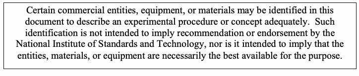
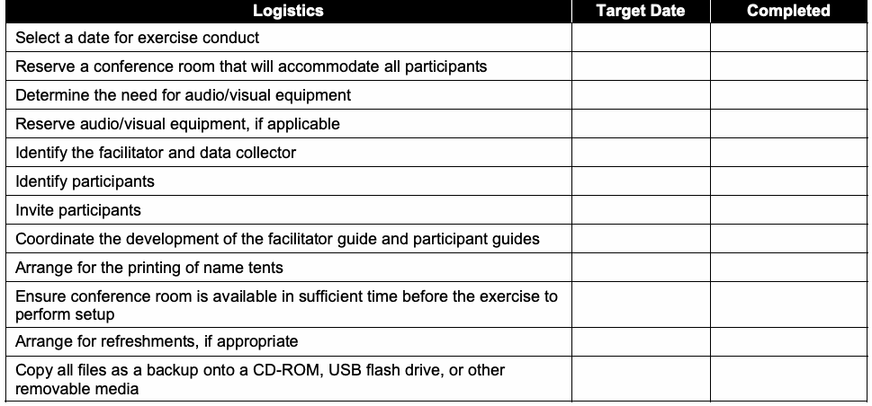
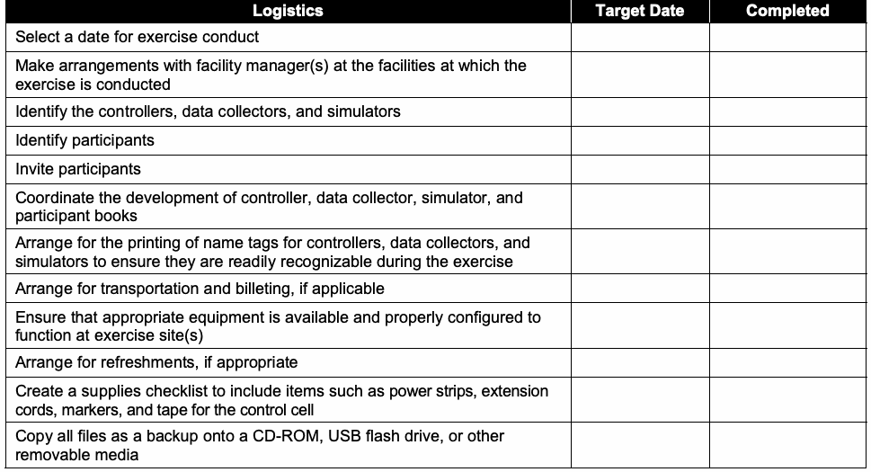
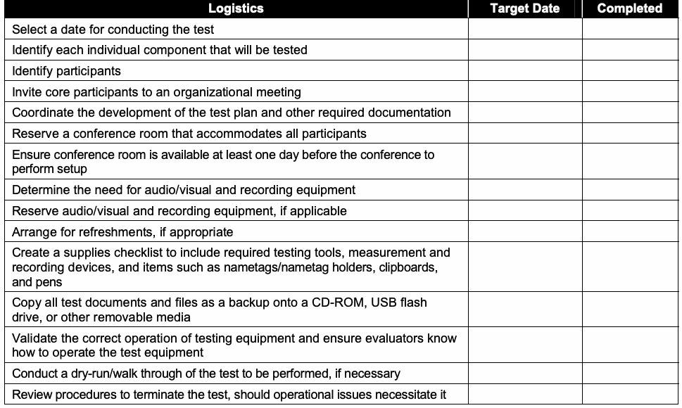
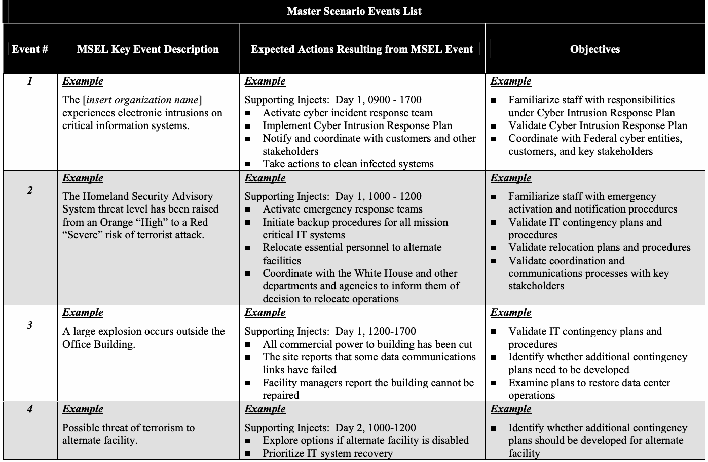
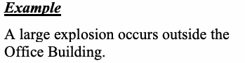
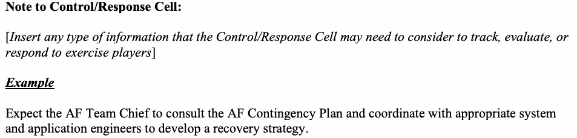
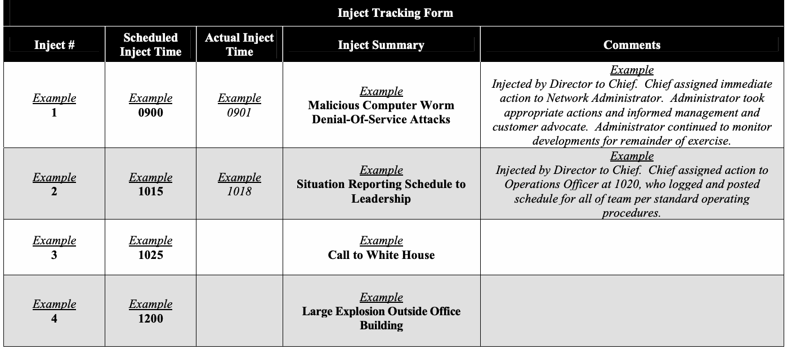

NIST Special Publication · PDF 原文抽出
Guide to Test, Training, and Exercise Programs for IT Plans and Capabilities
IT計画および能力のためのテスト・訓練・演習プログラムガイド
NIST SP 800-84（Guide to Test, Training, and Exercise Programs for IT Plans and Capabilities）の英文と日本語訳を段落ごとに並べた閲覧用ページです。単一組織を対象に、情報技術（IT）計画や緊急対応能力に関するテスト、訓練、演習（TT&E）イベントの設計、開発、実施、評価を支援し、災害などへの準備、対応、管理、復旧を強化するための指針を示します。 翻訳は有志による非公式のもので、NIST および米国商務省が作成・承認・推奨したものではありません。要件の確認にはNIST の正式版 PDFを参照してください。
PDF から抽出した原文は、原本のページ画像と照合済みです。
PDF p.2: 抽出できる文字が少ないため OCR または画像の照合が必要
PDF p.17: 二段組の可能性があるため読み順を原本と照合してください
PDF p.97: 二段組の可能性があるため読み順を原本と照合してください
本文の数式はLaTeXの構造からKaTeXで表示しています。
［NIST のロゴ。公的な標章のため、この非公式サイトには掲載していない。原本 PDF を参照。］
Special Publication 800-84 Sponsored by the Department of Homeland Security
特別刊行物800-84 国土安全保障省後援
Guide to Test, Training, and Exercise Programs for IT Plans and Capabilities
IT計画および能力に関するテスト、訓練、演習プログラムのガイド
Recommendations of the National Institute of Standards and Technology
米国国立標準技術研究所の勧告
Tim Grance Tamara Nolan Kristin Burke Rich Dudley Gregory White Travis Good
Tim Grance Tamara Nolan Kristin Burke Rich Dudley Gregory White Travis Good
Guide to Test, Training, and Exercise
テスト、訓練、演習に関するガイド
抽出したテキストの訳（原本と未照合・参考）
NIST特別刊行物800-84Programs for IT Plans and Capabilities
IT計画および能力に関するプログラム
Recommendations of the National Institute of Standards and Technology
米国国立標準技術研究所の勧告
Tim Grance, Tamara Nolan, Kristin Burke, Rich Dudley, Gregory White, Travis Good
Tim Grance、Tamara Nolan、Kristin Burke、Rich Dudley、Gregory White、Travis Good
C O M P U T E R S E C U R I T Y
コンピューターセキュリティ
Computer Security Division Information Technology Laboratory National Institute of Standards and Technology Gaithersburg, MD 20899-8930
コンピューターセキュリティ部門 情報技術研究所 米国国立標準技術研究所 Gaithersburg, MD 20899-8930
September 2006
2006年9月
U.S. Department of Commerce
米国商務省
Carlos M. Gutierrez, Secretary
Carlos M. Gutierrez、長官
Technology Administration
技術管理局
Robert C. Cresanti, Under Secretary of Commerce for Technology
Robert C. Cresanti、技術担当商務次官
National Institute of Standards and Technology
米国国立標準技術研究所
William A. Jeffrey, Director
William A. Jeffrey、所長
Reports on Computer Systems Technology
コンピューターシステム技術に関する報告書
The Information Technology Laboratory (ITL) at the National Institute of Standards and Technology (NIST) promotes the U.S. economy and public welfare by providing technical leadership for the nation’s measurement and standards infrastructure. ITL develops tests, test methods, reference data, proof of concept implementations, and technical analysis to advance the development and productive use of information technology. ITL’s responsibilities include the development of technical, physical, administrative, and management standards and guidelines for the cost-effective security and privacy of sensitive unclassified information in Federal computer systems. This Special Publication 800-series reports on ITL’s research, guidance, and outreach efforts in computer security and its collaborative activities with industry, government, and academic organizations.
米国国立標準技術研究所（NIST）の情報技術研究所（ITL）は、国の計測および標準インフラストラクチャに技術的リーダーシップを提供することで、米国経済と公共の福祉を促進している。ITLは、情報技術の開発と生産的利用を推進するため、試験、試験方法、参照データ、概念実証実装、および技術分析を開発する。ITLの責務には、連邦政府のコンピューターシステムにおける機微な非機密情報の費用対効果に優れたセキュリティとプライバシーのための、技術的、物理的、管理的および運用管理上の標準とガイドラインの策定が含まれる。この特別刊行物800シリーズは、コンピューターセキュリティに関するITLの研究、ガイダンス、普及活動、および産業界、政府、学術機関との協力活動を報告するものである。
National Institute of Standards and Technology Special Publication 800-84 Natl. Inst. Stand. Technol. Spec. Publ. 800-84, 97 pages (September 2006)
米国国立標準技術研究所 特別刊行物800-84 Natl. Inst. Stand. Technol. Spec. Publ. 800-84, 97ページ（2006年9月）

抽出したテキスト（原本と未照合・参考）
Certain commercial entities, equipment, or materials may be identified in this document to describe an experimental procedure or concept adequately. Such identification is not intended to imply recommendation or endorsement by the National Institute of Standards and Techn ology, nor is it intended to imply that the entities, materials, or equipment are nece ssarily the best available for the purpose.抽出したテキストの訳（原本と未照合・参考）
この文書では、実験手順または概念を適切に説明するため、特定の商業事業体、機器、または材料に言及する場合がある。このような特定は、米国国立標準技術研究所による推奨または保証を意味するものではなく、また、その事業体、材料、または機器が目的に対して必ずしも最良の選択肢であることを意味するものでもない。Acknowledgements
謝辞
The authors, Tim Grance of the National Institute of Standards and Technology (NIST); Tamara Nolan, Kristin Burke, and Rich Dudley of Booz Allen Hamilton; and Dr. Gregory White and Travis Good of the University of Texas-San Antonio (UTSA); wish to thank their colleagues who reviewed drafts of this document and contributed to its technical content. The authors would like to acknowledge Joan Hash, Karen Kent, Peter Mell, Matt Scholl, Marianne Swanson, and Mark Wilson of NIST; Dick Broome, Kara Crawley, Courtney Hawkins, Munir Majdalawieh, and Zara Pyatt of Booz Allen Hamilton; and Dwayne Williams of UTSA for their keen and insightful assistance throughout the development of the document. The authors would also like to express their thanks to Glenn Fiedelholtz, Annabelle Lee, and Jeffrey Wright from the National Cyber Security Division of the Department of Homeland Security, as well as representatives from the Department of State and the MITRE Corporation, for their valuable comments and suggestions.
著者である米国国立標準技術研究所（NIST）のTim Grance、Booz Allen HamiltonのTamara Nolan、Kristin Burke、Rich Dudley、ならびにテキサス大学サンアントニオ校（UTSA）のGregory White博士とTravis Goodは、本書の草稿を査読し、技術的内容に貢献した同僚に謝意を表する。著者らは、文書の作成を通じて鋭く洞察に富む支援を提供したNISTのJoan Hash、Karen Kent、Peter Mell、Matt Scholl、Marianne Swanson、Mark Wilson、Booz Allen HamiltonのDick Broome、Kara Crawley、Courtney Hawkins、Munir Majdalawieh、Zara Pyatt、およびUTSAのDwayne Williamsに謝意を表する。また、国土安全保障省国家サイバーセキュリティ部門のGlenn Fiedelholtz、Annabelle Lee、Jeffrey Wright、ならびに国務省およびMITRE Corporationの代表者に、貴重なコメントと提案をいただいたことへの謝意を表する。
The National Institute of Standards and Technology would also like to express its appreciation and thanks to the Department of Homeland Security for its sponsorship and support of NIST Special Publication 800-84.
米国国立標準技術研究所は、NIST特別刊行物800-84への後援と支援について、国土安全保障省にも謝意を表する。
Table of Contents
目次
Executive Summary..............................................................................................................ES-1
エグゼクティブサマリー..............................................................................................................ES-1
1. Introduction ......................................................................................................................1-1
1. はじめに ......................................................................................................................1-1
1.1 Authority...................................................................................................................1-1
1.1 権限...................................................................................................................1-1
1.2 Purpose and Scope .................................................................................................1-1
1.2 目的および適用範囲 .................................................................................................1-1
1.3 Audience..................................................................................................................1-1
1.3 対象読者..................................................................................................................1-1
1.4 Document Structure.................................................................................................1-2
1.4 文書の構成.................................................................................................1-2
2. Establishing a Test, Training, and Exercise Program ..................................................2-1
2. テスト、訓練、演習プログラムの確立 ..................................................2-1
2.1 Develop Comprehensive TT&E Policy.....................................................................2-3
2.1 包括的なTT&Eポリシーの策定.....................................................................2-3
2.2 Identify TT&E Roles and Responsibilities ................................................................2-4
2.2 TT&Eの役割と責任の特定 ................................................................2-4
2.3 Establish Overall TT&E Schedule............................................................................2-4
2.3 TT&E全体スケジュールの設定............................................................................2-4
2.4 Document TT&E Event Methodology.......................................................................2-4
2.4 TT&Eイベントの方法論の文書化.......................................................................2-4
2.5 Recommendations...................................................................................................2-5
2.5 推奨事項...................................................................................................2-5
3. Training Sessions ............................................................................................................3-1
3. 訓練セッション ............................................................................................................3-1
4. Tabletop Exercises ..........................................................................................................4-1
4. 机上演習 ..........................................................................................................4-1
4.1 Evaluate the Need for a Tabletop Exercise and Create a Schedule........................4-1
4.1 卓上演習の必要性を評価し、スケジュールを作成する........................4-1
4.2 Design the Tabletop Exercise Event........................................................................4-1
4.2 卓上演習イベントを設計する........................................................................4-1
4.2.1 Determine the Topics ...................................................................................4-2
4.2.1 トピックを決定する ...................................................................................4-2
4.2.2 Determine the Scope....................................................................................4-2
4.2.2 範囲を決定する....................................................................................4-2
4.2.3 Identify the Objectives ..................................................................................4-2
4.2.3 目標を特定する ..................................................................................4-2
4.2.4 Identify the Participants ................................................................................4-2
4.2.4 参加者を特定する ................................................................................4-2
4.2.5 Identify the Tabletop Exercise Staff..............................................................4-3
4.2.5 卓上演習のスタッフを特定する..............................................................4-3
4.2.6 Coordinate the Logistics...............................................................................4-3
4.2.6 ロジスティクスを調整する...............................................................................4-3
4.3 Develop the Tabletop Exercise Material ..................................................................4-3
4.3 卓上演習の資料を作成する ..................................................................4-3
4.4 Conduct the Tabletop Exercise................................................................................4-4
4.4 卓上演習を実施する................................................................................4-4
4.5 Evaluate the Tabletop Exercise ...............................................................................4-5
4.5 卓上演習を評価する ...............................................................................4-5
4.6 Summary..................................................................................................................4-5
4.6 まとめ..................................................................................................................4-5
5. Functional Exercises .......................................................................................................5-1
5. 機能演習 .......................................................................................................5-1
5.1 Evaluate the Need for a Functional Exercise and Create a Schedule .....................5-1
5.1 機能演習の必要性を評価し、スケジュールを作成する .....................5-1
5.2 Design the Functional Exercise Event .....................................................................5-1
5.2 機能演習イベントを設計する .....................................................................5-1
5.2.1 Determine the Topic .....................................................................................5-2
5.2.1 トピックを決定する .....................................................................................5-2
5.2.2 Determine the Scope....................................................................................5-2
5.2.2 範囲を決定する....................................................................................5-2
5.2.3 Identify the Objectives ..................................................................................5-2
5.2.3 目標を特定する ..................................................................................5-2
5.2.4 Identify the Participants ................................................................................5-2
5.2.4 参加者を特定する ................................................................................5-2
5.2.5 Identify the Functional Exercise Staff ...........................................................5-3
5.2.5 機能演習のスタッフを特定する ...........................................................5-3
5.2.6 Coordinate the Logistics...............................................................................5-3
5.2.6 ロジスティクスを調整する...............................................................................5-3
5.3 Develop the Functional Exercise Material................................................................5-4
5.3 機能演習の資料を作成する................................................................5-4
5.4 Conduct the Functional Exercise .............................................................................5-5
5.4 機能演習を実施する .............................................................................5-5
5.5 Evaluate the Functional Exercise.............................................................................5-6
5.5 機能演習を評価する.............................................................................5-6
5.6 Summary..................................................................................................................5-6
5.6 まとめ..................................................................................................................5-6
6. Tests..................................................................................................................................6-1
6. テスト..................................................................................................................................6-1
6.1 Evaluate the Need for a Test and Create a Schedule .............................................6-1
6.1 テストの必要性を評価し、スケジュールを作成する .............................................6-1
6.2 Design the Test Event..............................................................................................6-2
6.2 テストイベントを設計する..............................................................................................6-2
6.2.1 Determine the Scope....................................................................................6-2 6.2.2 Identify the Objectives ..................................................................................6-3 6.2.3 Determine the Testing Tools ........................................................................6-3 6.2.4 Identify the Participants ................................................................................6-3 6.2.5 Identify the Test Staff....................................................................................6-4 6.2.6 Coordinate the Logistics...............................................................................6-4 6.3 Develop the Test Material ........................................................................................6-5 6.4 Conduct the Test......................................................................................................6-5 6.5 Evaluate the Test.....................................................................................................6-6 6.6 Summary..................................................................................................................6-6
6.2.1 範囲を決定する....................................................................................6-2 6.2.2 目標を特定する ..................................................................................6-3 6.2.3 テストツールを決定する ........................................................................6-3 6.2.4 参加者を特定する ................................................................................6-3 6.2.5 テストスタッフを特定する....................................................................................6-4 6.2.6 ロジスティクスを調整する...............................................................................6-4 6.3 テスト資料を作成する ........................................................................................6-5 6.4 テストを実施する......................................................................................................6-5 6.5 テストを評価する.....................................................................................................6-6 6.6 まとめ..................................................................................................................6-6
List of Appendices
付録一覧
Appendix A— Sample Tabletop Exercise Documentation.................................................. A-1 A.1 Sample Tabletop Exercise Facilitator Guide........................................................... A-2 A.2 Sample Tabletop Exercise Participant Guide ......................................................... A-6 A.3 Sample Tabletop Exercise After Action Report....................................................... A-9 Appendix B— Sample Functional Exercise Documentation............................................... B-1 B.1 Sample Functional Exercise Scenario .................................................................... B-2 B.2 Sample Functional Exercise Master Scenario Events List...................................... B-5 B.3 Sample Functional Exercise Injects ........................................................................ B-7 B.4 Sample Functional Exercise Inject Tracking Form.................................................. B-9 B.5 Sample Functional Exercise After Action Report .................................................. B-11 Appendix C— Sample Test Documentation ......................................................................... C-1 C.1 Sample Component Test Documentation ............................................................... C-2 C.2 Sample System Test Documentation...................................................................... C-7 C.3 Sample Comprehensive Test Documentation ...................................................... C-13 Appendix D— Glossary .......................................................................................................... D-1
付録A— 卓上演習文書のサンプル.................................................. A-1 A.1 卓上演習ファシリテーターガイドのサンプル........................................................... A-2 A.2 卓上演習参加者ガイドのサンプル ......................................................... A-6 A.3 卓上演習事後報告書のサンプル....................................................... A-9 付録B— 機能演習文書のサンプル............................................... B-1 B.1 機能演習シナリオのサンプル .................................................................... B-2 B.2 機能演習マスターシナリオイベント一覧のサンプル...................................... B-5 B.3 機能演習インジェクトのサンプル ........................................................................ B-7 B.4 機能演習インジェクト追跡フォームのサンプル.................................................. B-9 B.5 機能演習事後報告書のサンプル .................................................. B-11 付録C— テスト文書のサンプル ......................................................................... C-1 C.1 コンポーネントテスト文書のサンプル ............................................................... C-2 C.2 システムテスト文書のサンプル...................................................................... C-7 C.3 包括的テスト文書のサンプル ...................................................... C-13 付録D— 用語集 .......................................................................................................... D-1
Appendix E— Acronyms ........................................................................................................ E-1
付録E— 略語 ........................................................................................................ E-1
Appendix F— Print and Online Resources........................................................................... F-1
付録F— 印刷資料およびオンライン資料........................................................................... F-1
Appendix G— Index................................................................................................................G-1
付録G— 索引................................................................................................................G-1
List of Figures
図一覧
Figure 2-1. TT&E Event Methodology.......................................................................................2-5
図2-1. TT&Eイベント手法.......................................................................................2-5
List of Tables
表一覧
Table 4-1. Sample Logistics Checklist for Tabletop Exercise Events .......................................4-3
表4-1. 卓上演習イベント用ロジスティクスチェックリストのサンプル .......................................4-3
Table 5-1. Sample Logistics Checklist for Functional Exercise Events ....................................5-3 Table 6-1. Sample Logistics Checklist for Test Events.............................................................6-4
表5-1. 機能演習イベント用ロジスティクスチェックリストのサンプル ....................................5-3 表6-1. テストイベント用ロジスティクスチェックリストのサンプル.............................................................6-4
Executive Summary
エグゼクティブサマリー
Organizations have information technology (IT) plans in place, such as contingency and computer security incident response plans, so that they can respond to and manage adverse situations involving IT. These plans should be maintained in a state of readiness, which should include having personnel trained to fulfill their roles and responsibilities within a plan, having plans exercised to validate their content, and having systems and system components tested to ensure their operability in an operational environment specified in a plan. These three types of events can be carried out efficiently and effectively through the development and implementation of a test, training, and exercise (TT&E) program. Organizations should consider having such a program in place because tests, training, and exercises are so closely related. For example, exercises and tests offer different ways of identifying deficiencies in IT plans, procedures, and training.
組織は、ITに関わる不測の事態に対応し管理できるよう、コンティンジェンシープランやコンピュータセキュリティインシデント対応計画などの情報技術（IT）計画を整備している。これらの計画は常時実行可能な状態に維持すべきであり、そのためには、計画内の役割と責任を果たすための要員訓練、内容を検証する計画演習、計画で指定された運用環境での動作を確保するシステムおよびシステムコンポーネントの試験を含めるべきである。この3種類の活動は、試験・訓練・演習（TT&E）プログラムを策定し実施することで、効率的かつ効果的に行える。試験、訓練、演習は密接に関連するため、組織はこのようなプログラムの導入を検討すべきである。例えば、演習と試験は、IT計画、手順、訓練における欠陥を特定するための異なる方法となる。
This document provides guidance on designing, developing, conducting, and evaluating TT&E events so that organizations can improve their ability to prepare for, respond to, manage, and recover from adverse events that may affect their missions. The scope of this document is limited to TT&E events for single organizations, as opposed to large-scale events involving multiple organizations, involving internal IT operational procedures for emergencies. This document does not address TT&E for a specific type of IT plan; rather, the TT&E methodology described in this document can be applied to TT&E events built around any IT plan or around an IT emergency-handling capability that is not necessarily documented in a plan, such as computer security incident response.
本書は、組織がミッションに影響し得る有害事象への準備、対応、管理、復旧能力を高められるよう、TT&E活動の設計、開発、実施、評価に関する指針を示す。本書の対象範囲は、複数組織が関与する大規模事象ではなく、緊急時の内部IT運用手順に関する単一組織のTT&E活動に限られる。本書は特定の種類のIT計画に対するTT&Eを扱うものではない。ここに記載するTT&E方法論は、あらゆるIT計画、または計画書に必ずしも文書化されていないIT緊急対応能力（コンピュータセキュリティインシデント対応など）を対象とするTT&E活動に適用できる。
As part of creating a comprehensive TT&E program, a TT&E plan should be developed that outlines the steps to be taken. The TT&E plan should define the organization’s roadmap for ensuring a viable capability, and outline the organization’s approach to maintaining plans, as well as enhancing and managing the capability. Enhancing emergency plans, policies, and procedures will promote more efficient utilization of capabilities in responding to cyber attacks. In addition, the TT&E plan should identify resource and budget requirements that enable organizations to achieve an effective, proven capability, and provide a schedule for conducting various types of TT&E events. Creating the TT&E program should also involve several other steps, including developing a TT&E policy, identifying roles and responsibilities, and documenting a TT&E event methodology.
包括的なTT&Eプログラムの作成の一環として、実施すべき手順をまとめたTT&E計画を策定すべきである。TT&E計画では、実効性のある能力を確保するための組織のロードマップを定め、計画の維持ならびに能力の強化・管理に対する組織の取り組み方を示すべきである。緊急時対応計画、方針、手順を強化すると、サイバー攻撃への対応時に能力をより効率的に活用できる。さらに、TT&E計画では、効果的で実証済みの能力を組織が達成するために必要な資源と予算を特定し、さまざまな種類のTT&E活動を実施する日程を示すべきである。TT&Eプログラムの作成には、TT&E方針の策定、役割と責任の特定、TT&E活動の方法論の文書化など、他の複数の手順も含めるべきである。
The TT&E program should include several types of events to ensure the availability of a wide range of methods for validating various planning elements in the context of cyber incidents. The types of events covered in this guide are as follows:
TT&Eプログラムには、サイバーインシデントに関するさまざまな計画要素を検証するため、幅広い方法を利用できるよう複数種類の活動を含めるべきである。本ガイドが扱う活動の種類は次のとおりである。
•Tests.1 Tests are evaluation tools that use quantifiable metrics to validate the operability of an IT system or system component in an operational environment specified in an IT plan. For example, an organization could test if call tree cascades can be executed within prescribed time limits; another test would be removing power from a system or system component. A test is conducted in as close to an operational environment as possible; if feasible, an actual test of the components or systems used to conduct daily operations for the organization should be used. The scope of testing can range from individual system components or systems to comprehensive tests of all systems and components that support an IT plan. Tests often focus on recovery and backup operations; however, testing varies depending on the goal of the test and its relation to a specific IT plan.
•試験。1 試験は、IT計画で指定された運用環境において、ITシステムまたはシステムコンポーネントの動作を定量的な測定基準で検証する評価ツールである。例えば、組織は連絡網の一斉連絡が所定の時間内に実行できるか試験できる。また、システムまたはシステムコンポーネントの電源を切ることも試験となる。試験は可能な限り実運用環境に近い環境で実施する。可能であれば、組織の日常業務で使用するコンポーネントまたはシステムを実際に試験すべきである。試験の範囲は、個別のシステムコンポーネントまたはシステムから、IT計画を支援するすべてのシステムおよびコンポーネントの包括的な試験まで及ぶ。試験では復旧・バックアップ運用に重点を置くことが多いが、試験の内容は目的と特定のIT計画との関係によって異なる。
•Training. For the purposes of this publication, training refers only to informing personnel of their roles and responsibilities within a particular IT plan and teaching them skills related to those roles and responsibilities, thereby preparing them for participation in exercises, tests, and actual emergency situations related to the IT plan. Training personnel on their roles and responsibilities before an exercise or test event is typically split between a presentation on their roles and responsibilities, and activities that allow personnel to demonstrate their understanding of the subject matter.
•訓練。本書において訓練とは、特定のIT計画における要員の役割と責任を知らせ、その役割と責任に関連する技能を教えることのみを指す。これにより、要員はそのIT計画に関連する演習、試験、実際の緊急事態に参加する準備を整える。演習または試験の前に役割と責任について要員を訓練する場合、通常は役割と責任に関する説明と、要員が対象事項の理解を示す活動とに分けて行う。
•Exercises. An exercise is a simulation of an emergency designed to validate the viability of one or more aspects of an IT plan. In an exercise, personnel with roles and responsibilities in a particular IT plan meet to validate the content of a plan through discussion of their roles and their responses to emergency situations, execution of responses in a simulated operational environment, or other means of validating responses that does not involve using the actual operational environment. Exercises are scenario-driven, such as a power failure in one of the organization’s data centers or a fire causing certain systems to be damaged, with additional situations often being presented during the course of an exercise. There are several types of exercises, and this publication focuses on the following two types that are widely used in TT&E programs by single organizations:
•演習。演習とは、IT計画の1つ以上の側面の実効性を検証するために設計された緊急事態のシミュレーションである。演習では、特定のIT計画で役割と責任を担う要員が集まり、各自の役割や緊急事態への対応についての討議、シミュレーション運用環境での対応実行、または実際の運用環境を使わないその他の対応検証手段を通じて、計画の内容を検証する。演習はシナリオに基づき、例えば組織のデータセンターの1つでの停電や、火災による特定システムの損傷などを扱う。演習中に追加状況が提示されることも多い。演習にはいくつかの種類があり、本書では単一組織のTT&Eプログラムで広く使用される次の2種類に焦点を当てる。
•Tabletop Exercises. Tabletop exercises are discussion-based exercises where personnel meet in a classroom setting or in breakout groups to discuss their roles during an emergency and their responses to a particular emergency situation. A facilitator presents a scenario and asks the exercise participants questions related to the scenario, which initiates a discussion among the participants of roles, responsibilities, coordination, and decision-making. A tabletop exercise is discussion-based only and does not involve deploying equipment or other resources.
•机上演習。机上演習は討議形式の演習であり、要員が教室または小グループに集まり、緊急時における役割と特定の緊急状況への対応について話し合う。進行役がシナリオを提示し、参加者にシナリオに関連する質問をすることで、役割、責任、調整、意思決定に関する参加者間の討議を促す。机上演習は討議のみで構成され、機器その他の資源の展開を伴わない。
•Functional Exercises. Functional exercises allow personnel to validate their operational readiness for emergencies by performing their duties in a simulated operational environment. Functional exercises are designed to exercise the roles and responsibilities of specific team members, procedures, and assets involved in one or more functional aspects of a plan (e.g., communications, emergency notifications, IT equipment setup). Functional exercises vary in complexity and scope, from validating specific aspects of a plan to full-scale exercises that address all plan elements. Functional exercises allow staff to execute their roles and responsibilities as they would in an actual emergency situation, but in a simulated manner.
•機能演習。機能演習では、要員がシミュレーション運用環境で職務を遂行し、緊急事態への運用準備状況を検証する。機能演習は、計画の1つ以上の機能面（例えば、通信、緊急通知、IT機器の設置）に関わる特定のチームメンバーの役割と責任、手順、資産を演習するよう設計される。機能演習の複雑さと範囲は、計画の特定側面の検証から、すべての計画要素を扱う実動演習までさまざまである。機能演習では、実際の緊急事態におけるのと同様に要員が役割と責任を遂行するが、シミュレーションとして実施する。
Organizations should conduct TT&E events periodically; following organizational changes, updates to an IT plan, or the issuance of new TT&E guidance; or as otherwise needed. This assists organizations in ensuring that their IT plans are reasonable, effective, and complete, and that all personnel know what their roles are in the conduct of each IT plan. TT&E event schedules are often dictated in part by organizational requirements. For example, NIST Special Publication 800-53 requires Federal agencies to conduct exercises or tests for their systems’ contingency plans and incident response capabilities at least annually.
組織はTT&E活動を定期的に、組織変更後、IT計画の更新後、新たなTT&E指針の発行後、または必要に応じて実施すべきである。これにより、IT計画が妥当かつ効果的で完全であること、ならびに各計画の実施における自分の役割をすべての要員が理解していることを組織が確認できる。TT&E活動の日程は、組織の要件によって一部決定されることが多い。例えば、NIST Special Publication 800-53は、連邦政府機関に対し、システムの緊急時対応計画およびインシデント対応能力について、少なくとも年1回、演習または試験を実施することを求めている。
1. Introduction
1. はじめに
1.1 Authority
1.1 権限
The National Institute of Standards and Technology (NIST) developed this document in furtherance of its statutory responsibilities under the Federal Information Security Management Act (FISMA) of 2002, Public Law 107-347.
米国国立標準技術研究所（NIST）は、2002年連邦情報セキュリティ管理法（FISMA）、Public Law 107-347に基づく法定責任を果たすため、本書を作成した。
NIST is responsible for developing standards and guidelines, including minimum requirements, for providing adequate information security for all agency operations and assets; but such standards and guidelines shall not apply to national security systems. This guideline is consistent with the requirements of the Office of Management and Budget (OMB) Circular A-130, Section 8b(3), “Securing Agency Information Systems,” as analyzed in A-130, Appendix IV: Analysis of Key Sections. Supplemental information is provided in A-130, Appendix III.
NISTは、すべての政府機関の業務および資産に対する適切な情報セキュリティを確保するための最低要件を含む標準およびガイドラインの策定を担う。ただし、これらの標準およびガイドラインは国家安全保障システムには適用されない。本ガイドラインは、OMB Circular A-130のSection 8b(3)「政府機関情報システムの保護」の要件と整合しており、その要件はA-130 Appendix IV「主要条項の分析」で分析されている。補足情報はA-130 Appendix IIIに記載されている。
This guideline has been prepared for use by Federal agencies. It may be used by nongovernmental organizations on a voluntary basis and is not subject to copyright, though attribution is desired.
本ガイドラインは連邦政府機関での使用を目的として作成された。政府機関以外の組織も任意で使用でき、著作権の対象ではないが、出典を明記することが望ましい。
Nothing in this document should be taken to contradict standards and guidelines made mandatory and binding on Federal agencies by the Secretary of Commerce under statutory authority, nor should these guidelines be interpreted as altering or superseding the existing authorities of the Secretary of Commerce, Director of the OMB, or any other Federal official.
本書のいかなる内容も、法定権限に基づき商務長官が連邦政府機関に義務付け、拘束力を持たせた標準およびガイドラインに矛盾すると解釈してはならない。また、本ガイドラインを、商務長官、OMB長官、その他の連邦政府職員の既存の権限を変更または置換するものと解釈してはならない。
1.2 Purpose and Scope
1.2 目的と適用範囲
Although it is important to have plans in place to help an organization respond to and manage various situations involving information technology (IT), it is equally important to maintain these plans in a state of readiness. This includes having IT personnel trained to fulfill their roles and responsibilities; having plans exercised to validate their policies and procedures; and having systems tested to ensure their operability. These three types of events can be carried out efficiently and effectively through the development and implementation of a test, training, and exercise (TT&E) program.
組織が情報技術（IT）に関わるさまざまな状況に対応し管理するために計画を整備することは重要だが、これらの計画を常時実行可能な状態に維持することも同様に重要である。これには、IT要員が役割と責任を果たすための訓練を受けること、方針と手順を検証するために計画を演習すること、システムの動作を確保するために試験することが含まれる。この3種類の活動は、試験・訓練・演習（TT&E）プログラムを策定し実施することで、効率的かつ効果的に行える。
This publication seeks to assist organizations in designing, developing, conducting, and evaluating TT&E events in an effort to aid personnel in preparing for adverse situations involving IT. The events are designed to train personnel, exercise IT plans, and test IT systems, so that an organization can maximize its ability to prepare for, respond to, manage, and recover from disasters that may affect its mission. The guide describes the design, development, conduct, and evaluation of events for single organizations, as opposed to large-scale events that may involve multiple organizations. The TT&E methodology described in this document can be applied to TT&E events built around any type of IT-related plan, including, but not limited to, contingency plans (e.g., disaster recovery plans) and computer security incident response plans. The vocabulary related to TT&E varies across organizations; this document provides definitions of the terms most commonly used for TT&E-related activities and teams.
本書は、ITに関わる有害な状況に備えるため、要員を支援することを目的として、組織がTT&E活動を設計、開発、実施、評価するのを支援する。各活動は要員を訓練し、IT計画を演習し、ITシステムを試験するよう設計されており、組織がミッションに影響し得る災害への準備、対応、管理、復旧能力を最大化できるようにする。本ガイドは、複数組織が関与する大規模活動ではなく、単一組織の活動の設計、開発、実施、評価について説明する。本書のTT&E方法論は、コンティンジェンシープラン（例：災害復旧計画）やコンピュータセキュリティインシデント対応計画を含むがこれらに限定されない、あらゆる種類のIT関連計画を対象とするTT&E活動に適用できる。TT&Eに関する用語は組織によって異なる。本書では、TT&E関連活動およびチームで最もよく使われる用語を定義する。
1.3 Audience
1.3 対象読者
This document has been created for individuals responsible for their organization’s TT&E program. Specifically, the document is designed to assist the IT personnel responsible for designing, developing, conducting, and/or evaluating TT&E events in fulfilling these responsibilities effectively.
本書は、組織のTT&Eプログラムに責任を負う個人を対象に作成されている。特に、TT&E活動の設計、開発、実施、および／または評価を担当するIT要員が、これらの責任を効果的に果たせるよう支援することを目的とする。
1.4 Document Structure
1.4 文書の構成
The remainder of this document is organized into five major sections. Section 2 contains information on establishing a TT&E program. Specifically, it describes the need for a TT&E program and the steps involved in creating a TT&E program, including developing a TT&E policy; identifying roles, responsibilities, and activities; establishing an event schedule; and documenting the TT&E event methodology.
本書の残りは5つの主要セクションで構成される。Section 2はTT&Eプログラムの確立に関する情報を示す。具体的には、TT&Eプログラムの必要性と、TT&E方針の策定、役割・責任・活動の特定、活動日程の設定、TT&E活動方法論の文書化を含む、TT&Eプログラム作成に関わる手順を説明する。
Section 3 briefly discusses the role of training in a TT&E program and how training is related to exercises and tests. Section 4 contains information on determining the need for tabletop exercises, and designing, developing, conducting, and evaluating an exercise event. This section describes the design phase in detail, including determining the topics and scope; identifying the objectives; identifying participants and training staff; and coordinating logistics. Sections 5 and 6 contain similar information for functional exercises and tests, respectively.
第3節では、TT&Eプログラムにおける訓練の役割と、訓練と演習・試験との関係を簡潔に説明する。第4節では、机上演習の必要性の判断と、演習活動の設計、開発、実施、評価について説明する。この節では設計段階を詳述し、トピックと範囲の決定、目標の特定、参加者と訓練スタッフの特定、ロジスティクスの調整を扱う。第5節および第6節では、それぞれ機能演習と試験について同様の情報を説明する。
This document also contains several appendices. Appendices A, B, and C contain samples of the documentation associated with tabletop exercises, functional exercises, and tests, respectively. Appendix D contains a glossary, and Appendix E contains an acronym list. Appendix F identifies print and online resources that may be helpful in scoping, planning, documenting, conducting, and evaluating TT&E events. Appendix G contains an index for the publication.
本書には複数の付録も含まれる。Appendix A、B、Cには、それぞれ机上演習、機能演習、試験に関連する文書のサンプルを掲載する。Appendix Dは用語集、Appendix Eは略語一覧である。Appendix Fには、TT&E活動の範囲設定、計画、文書化、実施、評価に役立つ印刷資料およびオンライン資料を示す。Appendix Gには本書の索引を掲載する。
2. Establishing a Test, Training, and Exercise Program
2. 試験・訓練・演習プログラムの確立
An organization’s IT plans need to be maintained to sustain the organization’s ability to prepare for, respond to, manage, and recover from disasters affecting its mission.2 Common types of IT plans used for this purpose are as follows:
組織のIT計画は、ミッションに影響する災害への準備、対応、管理、復旧能力を維持するために保全する必要がある。2 この目的で使用される一般的なIT計画の種類は次のとおりである。
•Contingency plan: Recovering and reconstituting IT systems.3 Contingency plans include continuity of operations plans, business continuity plans, and disaster recovery plans.
•コンティンジェンシープラン：ITシステムの復旧および再構成。3 コンティンジェンシープランには、業務継続運用計画、事業継続計画、災害復旧計画が含まれる。
•Incident response plan: Reporting and managing computer security incidents.4
•インシデント対応計画：コンピュータセキュリティインシデントの報告および管理。4
The following are the major types of events used to maintain these plans:
これらの計画を維持するために用いられる主な活動の種類は次のとおりである。
•Tests. A test is an evaluation tool that uses quantifiable metrics to validate the operability of a system or system component in an operational environment specified in an IT plan.5 For example, an organization could test if call tree cascades can be executed within prescribed time limits; another test would be removing power from a system or system component. The quantifiable metrics are created by developing a test plan that identifies the systems or components to be tested (and the components of any systems being tested) and the overall test objectives. Testing that results in components or systems malfunctioning or becoming inoperable could indicate problems in personnel training or in IT plans and procedures. Tests often focus on recovery and backup operations; however, testing varies depending on the goal of the test and its relation to a specific IT plan. Section 6 contains detailed information about testing.
•試験。試験は、IT計画で指定された運用環境でシステムまたはシステムコンポーネントの動作を、定量的な測定基準によって検証する評価ツールである。5 例えば、連絡網の一斉連絡が所定の時間内に実行できるかを試験できる。また、システムまたはシステムコンポーネントの電源を切ることも試験となる。定量的な測定基準は、試験対象のシステムまたはコンポーネント（試験対象システムの構成要素を含む）と全体的な試験目標を特定する試験計画を策定して定める。コンポーネントまたはシステムの故障や動作不能を招く試験結果は、要員訓練またはIT計画・手順の問題を示す場合がある。試験では復旧・バックアップ運用に重点を置くことが多いが、試験の内容は目的と特定のIT計画との関係によって異なる。試験の詳細は第6節に記載する。
•Training. For the purposes of this publication, training refers only to informing personnel of their roles and responsibilities within a particular IT plan, such as decision making, and teaching them skills related to those roles and responsibilities.6 This prepares the personnel for participation in exercises, tests, and actual emergency situations related to the IT plan. Training personnel on their roles and responsibilities before an exercise or test event is typically split between a presentation on their roles and responsibilities, and activities that allow personnel to demonstrate their understanding of the subject matter. Section 3 contains a brief overview of training events, which are already discussed in detail in other NIST publications.
•訓練。本書において訓練とは、特定のIT計画における要員の役割と責任（意思決定など）を知らせ、その役割と責任に関連する技能を教えることのみを指す。6 これにより、要員はそのIT計画に関連する演習、試験、実際の緊急事態に参加する準備が整う。演習または試験の前に役割と責任について要員を訓練する場合、通常は役割と責任に関する説明と、要員が対象事項の理解を示す活動とに分けて行う。訓練活動の概要は第3節に記載する。訓練活動の詳細は、他のNIST刊行物ですでに説明されている。
•Exercises. An exercise is a simulation of an emergency designed to validate the viability of one or more aspects of an IT plan. Exercises helps to identify gaps and inconsistencies within IT plans and procedures, as well as cases where personnel need additional training or when training needs to be changed. In an exercise, personnel with roles and responsibilities in a particular IT plan meet to validate the content of a plan through discussion of their roles and their responses to emergency situations, execution of responses in a simulated operational environment, or other means of validating responses that does not involve using the actual operational environment for deployment of personnel. Exercises are scenario-driven, such as a power failure in one of the organization’s data centers or a fire causing certain systems to be damaged, with additional situations often being presented during the course of an exercise. There are several types of exercises, and this publication focuses on the following two types that are widely used in TT&E programs by single organizations:7
•演習。演習とは、IT計画の1つ以上の側面の実効性を検証するために設計された緊急事態のシミュレーションである。演習は、IT計画や手順における不足や不整合、要員に追加訓練が必要な場合、または訓練の変更が必要な場合を特定するのに役立つ。特定のIT計画で役割と責任を担う要員が集まり、各自の役割や緊急事態への対応についての討議、シミュレーション運用環境での対応実行、または要員を実運用環境に配置しないその他の対応検証手段を通じて、計画の内容を検証する。演習はシナリオに基づき、例えば組織のデータセンターの1つでの停電や、火災による特定システムの損傷などを扱う。演習中に追加状況が提示されることも多い。演習にはいくつかの種類があり、本書では単一組織のTT&Eプログラムで広く使用される次の2種類に焦点を当てる：7
•Tabletop. Tabletop exercises are discussion-based exercises where personnel meet in a classroom setting or in breakout groups to discuss their roles during an emergency and their responses to a particular emergency situation. A facilitator presents a scenario and asks the exercise participants questions related to the scenario, which initiates a discussion among the participants of roles, responsibilities, coordination, and decision-making. A tabletop exercise is discussion-based only and does not involve deploying equipment or other resources. Section 4 contains detailed information about tabletop exercises.
•机上演習。机上演習は討議形式の演習であり、要員が教室または小グループに集まり、緊急時における役割と特定の緊急状況への対応について話し合う。進行役がシナリオを提示し、参加者にシナリオに関連する質問をすることで、役割、責任、調整、意思決定に関する参加者間の討議を促す。机上演習は討議のみで構成され、機器その他の資源の展開を伴わない。机上演習の詳細は第4節に記載する。
•Functional. Functional exercises allow personnel to validate their operational readiness for emergencies in a simulated operational environment. Functional exercises are designed to exercise the roles and responsibilities of specific team members, procedures, and assets involved in one or more functional aspects of an IT plan (e.g., communications, emergency notifications, IT equipment setup). Functional exercises vary in complexity and scope, from validating specific aspects of a plan to full-scale exercises that address all plan elements. Functional exercises allow staff to execute their roles and responsibilities as they would in an actual emergency situation, but in a simulated manner. Section 5 contains detailed information about functional exercises.
•機能演習。機能演習では、模擬運用環境で緊急事態への運用準備ができているかを職員が確認する。機能演習は、IT計画の1つ以上の機能（通信、緊急通知、IT機器のセットアップなど）に関係する特定のチームメンバー、手順、資産の役割と責任を演習するために設計される。複雑さや範囲は、計画の特定の側面を検証するものから、すべての計画要素に対処する本格的な演習までさまざまである。機能演習では、職員が実際の緊急事態と同様に役割と責任を実行するが、シミュレーションとして行う。機能演習の詳細は第5節に記載する。
Although an organization could perform tests, training, and exercises as discrete activities without any coordination, organizations should consider having a program in place that addresses all three because they are so closely related. For example, exercises and tests offer different ways of identifying problems with IT plans, procedures, and training. An effective TT&E program should comprise a combination of training, exercise, and testing events.8 The program should include a TT&E plan, policy, event methodology, and procedures. Using these elements should cause TT&E events to be performed more consistently and effectively, particularly reducing duplication of effort. A program should also address resource and budget requirements, and provide a schedule for conducting types of TT&E events. This section discusses the steps involved in creating a TT&E program.9
組織は試験、訓練、演習を相互に調整せず個別に実施することもできるが、これらは密接に関連しているため、3つすべてを扱うプログラムを設けることを検討すべきである。例えば、演習と試験は、IT計画、手順、訓練における問題を特定するための異なる方法となる。効果的なTT&Eプログラムは、訓練、演習、試験イベントを組み合わせて構成すべきである。8 プログラムには、TT&E計画、方針、イベントの方法論、および手順を含めるべきである。これらの要素を用いることで、特に作業の重複を減らし、TT&Eイベントをより一貫性と効果のある形で実施できる。プログラムでは、資源と予算の要件にも対応し、各種TT&Eイベントの実施予定を示すべきである。本節では、TT&Eプログラムの作成手順を説明する。9
Regardless of the type of IT plans an organization has developed, it should have mechanisms in place to validate the plans’ effectiveness and manage their maintenance. Organizations that want to establish a TT&E program should first develop a TT&E plan that outlines the steps to be taken to ensure that personnel are trained in their IT plan roles and responsibilities, IT plans are exercised to validate their viability; and IT components or systems are tested to validate their operability in the context of an IT plan. The TT&E plan should outline all elements of the program and ensure that information surrounding the program is documented. In addition to creating the TT&E plan, other major steps in creating a TT&E program are as follows:
組織がどの種類のIT計画を策定しているかにかかわらず、計画の有効性を検証し、その維持を管理する仕組みを設けるべきである。TT&Eプログラムの設置を希望する組織は、まず、IT計画における職員の役割と責任に関する訓練、計画の妥当性を検証する演習、IT計画の文脈でITコンポーネントまたはシステムの運用可能性を検証する試験を確実に行うための手順を示すTT&E計画を策定すべきである。TT&E計画にはプログラムのすべての要素を示し、プログラムに関する情報が文書化されるようにする。TT&E計画の作成に加え、TT&Eプログラムを作成する主な手順は次のとおりである：
•Develop a comprehensive policy
•包括的な方針を策定する
•Identify roles and responsibilities
•役割と責任を特定する
•Establish overall schedule
•全体スケジュールを確立する
•Document methodology.
•方法論を文書化する。
These steps are described in more detail in Sections 2.1 through 2.4.
これらの手順の詳細は、第2.1節から第2.4節で説明する。
2.1 Develop Comprehensive TT&E Policy
2.1 包括的なTT&E方針の策定
A TT&E program should include a policy that outlines the organization’s internal and external requirements associated with training personnel, exercising plans, and testing components and systems. The policy forms the framework for the purpose and objectives of the program and cites applicable Federal and internal guidance. The policy further provides the framework or “rules” that govern how the organization develops and administers the TT&E events. The policy establishes a clear and consistent framework for creating all of the documentation associated with TT&E events.
TT&Eプログラムには、職員の訓練、計画の演習、コンポーネントとシステムの試験に関する組織内外の要件を示す方針を含めるべきである。この方針は、プログラムの目的と目標の枠組みを定め、適用される連邦政府および内部の指針を示す。さらに、組織がTT&Eイベントを策定・運営する際の枠組み、すなわち「ルール」を定める。方針によって、TT&Eイベントに関するすべての文書を作成するための明確で一貫した枠組みが確立される。
Key steps for developing a TT&E policy are as follows:
TT&E方針の策定における主な手順は次のとおりである：
•Win the support and involvement of senior management, which includes ensuring that senior managers understand the program, the resources needed to make the program successful, the benefits and need for having the program, and any potential risks involved in creating the program
•上級管理職の支持と関与を得る。これには、プログラムの内容、成功に必要な資源、プログラムを設ける利点と必要性、プログラムの作成に伴う潜在的リスクを上級管理職に理解してもらうことが含まれる。
•Identify all relevant planning documentation (internal and external), such as past training records; organization’s policies; Federal guidance; and other practices obtained from other organizations or industry partners
•過去の訓練記録、組織の方針、連邦政府の指針、他組織や業界パートナーから得た慣行など、関連する計画文書（内部および外部）をすべて特定する。
•Collect all governing documentation and maintain the documentation within a central repository.
•すべての規定文書を収集し、中央リポジトリで維持する。
The following are suggested elements to include in a TT&E policy:
TT&E方針に含めることが推奨される要素は次のとおりである：
•Purpose
•目的
•Effective date
•発効日
•Objectives
•目標
•Applicability and scope
•適用性および範囲
•Authorities and related policies
•権限および関連方針
•Roles and responsibilities of key business units and staff positions
•主要な事業部門および職位の役割と責任
•TT&E requirements
•TT&E要件
•TT&E review and approval
•TT&Eのレビューおよび承認
•Enforcement and compliance
•施行および遵守
•Points of contact for additional information
•追加情報の問い合わせ先
•Definition of terms.
•用語の定義。
Once the TT&E policy is developed, the policy statement should be updated as new guidance is applied to or impacts the program.
TT&E方針を策定した後も、新しい指針がプログラムに適用されたり、プログラムに影響したりした場合は、方針の記述を更新すべきである。
2.2 Identify TT&E Roles and Responsibilities
2.2 TT&Eの役割と責任の特定
The office with primary oversight of and responsibility for a TT&E program varies based on the structure or requirements of the organization. In many organizations, it is led within the Office of the Chief Information Officer (OCIO). The TT&E program should be managed by a person or team with direct responsibility for the organization’s IT planning capability. The program should have an IT plan coordinator who is responsible for all aspects of IT planning, including the TT&E element of maintaining the IT plans. The IT plan coordinator has overall responsibility for the IT plans, including development, implementation, and maintenance. One of the IT plan coordinator’s responsibilities is to identify a TT&E program coordinator, who is responsible for developing a TT&E plan and coordinating events. To plan and conduct TT&E events, the TT&E program coordinator works with event design teams. Organizations might elect to purchase specialized software or obtain external support to assist in forming or staffing these teams. Sections 4 through 6 contain information on the individual design teams and the roles within each team.
TT&Eプログラムを主に監督し、その責任を負う部門は、組織の構造や要件によって異なる。多くの組織では、最高情報責任者室（OCIO）が主導する。TT&Eプログラムは、組織のIT計画能力に直接責任を持つ担当者またはチームが管理すべきである。プログラムには、IT計画の維持に関するTT&E要素を含め、IT計画のあらゆる側面を担当するIT計画コーディネーターを置くべきである。IT計画コーディネーターは、計画の策定、実施、維持を含むIT計画全体に責任を負う。責任の一つとして、TT&E計画を策定しイベントを調整するTT&Eプログラムコーディネーターを特定する。TT&Eイベントを計画・実施するため、TT&Eプログラムコーディネーターはイベント設計チームと協力する。組織は、チームの編成や人員配置を支援する専用ソフトウェアを購入したり、外部支援を得たりすることもできる。各チームの役割と個々の設計チームに関する情報は第4節から第6節に記載する。
2.3 Establish Overall TT&E Schedule
2.3 TT&E全体スケジュールの確立
The TT&E plan should document the projected schedule of activities to be performed within the TT&E program. Although events should be conducted as needed, organizations should evaluate the required frequency of its events and document the frequency of each event in a TT&E schedule. For example, NIST Special Publication (SP) 800-53 requires Federal agencies to conduct exercises or tests for their systems’ contingency plans and incident response capabilities at least annually. Sections 4 through 6 provide additional detail on how to evaluate an organization’s specific TT&E needs.
TT&E計画には、TT&Eプログラム内で実施する活動の予定を記載すべきである。活動は必要に応じて実施する一方、組織は各活動に必要な実施頻度を評価し、その頻度をTT&Eスケジュールに記録すべきである。例えば、NIST特別刊行物（SP）800-53は、連邦政府機関に対し、システムの緊急時対応計画およびインシデント対応能力について、少なくとも年1回、演習または試験を実施するよう求めている。組織固有のTT&Eニーズの評価方法については、第4節から第6節で詳しく説明する。
2.4 Document TT&E Event Methodology
2.4 TT&E活動の方法論の文書化
As part of creating a TT&E program, an organization should select and document a high-level methodology for planning and performing TT&E events. Figure 2-1 shows one commonly used methodology, which has four phases:
TT&Eプログラムを作成する際、組織はTT&Eイベントの計画と実施に用いる上位レベルの方法論を選定し、文書化すべきである。図2-1に一般的な方法論の例を示す。この方法論は次の4段階で構成される：
•Design the event. The TT&E program coordinator works with the plan coordinator to determine the TT&E event topic and scope based on the current needs of the organization. Examples of topics include training personnel on their specific roles and responsibilities within an IT plan, exercising response procedures, and testing a specific system. Next, the TT&E program coordinator identifies the objectives based on the topic and scope, and the personnel that should participate in the event. The TT&E program coordinator also identifies an event design team, which may consist of one person or a group of people, depending on the requirements of the event. The TT&E program coordinator oversees the event logistics, which could include document printing, room setup, meals, and audiovisual equipment.
•イベントを設計する。TT&Eプログラムコーディネーターは計画コーディネーターと協力し、組織の現在のニーズに基づいてTT&Eイベントのテーマと範囲を決める。テーマの例には、IT計画における各自の役割と責任について職員を訓練すること、対応手順を演習すること、特定のシステムを試験することが含まれる。次にTT&Eプログラムコーディネーターは、テーマと範囲に基づいて目標と参加すべき職員を特定する。イベントの要件に応じて1人または複数人で構成されるイベント設計チームも特定する。TT&Eプログラムコーディネーターは、文書の印刷、会場の設営、食事、視聴覚機器の準備などを含むイベントのロジスティクスを統括する。
•Develop the event documentation. Upon completion of the design phase, the TT&E program coordinator works with the design team on the development of the documentation to be used before, during, and after the event. The types of documentation vary for each type of event, but examples include briefing materials, participant manuals, instructor and facilitator guides, test plans and scripts, and evaluation criteria.
•イベント文書を作成する。設計段階の完了後、TT&Eプログラムコーディネーターは設計チームと協力し、イベントの前・中・後に使用する文書を作成する。文書の種類はイベントごとに異なるが、説明資料、参加者用マニュアル、講師用および進行役用ガイド、試験計画書とスクリプト、評価基準などが例として挙げられる。
•Conduct the event. In this phase, the event—the training, exercise, or test—is actually conducted. The details of this vary greatly by event type and scope.
•イベントを実施する。この段階では、訓練、演習、試験にあたるイベントを実際に実施する。詳細はイベントの種類と範囲によって大きく異なる。
•Evaluate lessons learned from the event. The evaluation phase is used to analyze the event and identify lessons learned, both to improve the IT plans and their execution, and to improve the TT&E process. Evaluation is performed somewhat differently by event type, as follows:
•イベントから得た教訓を評価する。評価段階ではイベントを分析して教訓を特定し、IT計画とその実行、およびTT&Eプロセスの改善に役立てる。評価方法はイベントの種類によって多少異なり、次のとおりである：
•Training: Participants typically complete an evaluation/critique form on the success of the event and areas where enhancements can be made in terms of the personnel’s knowledge of the trained subject matter. Feedback is analyzed and documented in a training analysis report, and future sessions are modified as needed.
•訓練：参加者は通常、イベントの成功度、および訓練対象の知識に関して改善できる領域について、評価・批評フォームに記入する。フィードバックは分析され、訓練分析報告書に記録される。必要に応じて、今後のセッションは修正される。
•Exercise or test: Participants typically engage in a facilitated debrief, also called a hotwash, to discuss areas that went particularly well and areas where enhancements can be made in terms of the plan’s contents and/or the tested systems. Findings discussed during the debrief, observations made during the course of the event, and considerations for enhancement are documented in an after action report.
•演習またはテスト：参加者は通常、進行役が主導する事後検討（ホットウォッシュとも呼ばれる）に参加し、特にうまくいった点や、計画の内容および／またはテスト対象システムに関して改善可能な領域を議論する。事後検討で議論された所見、イベント中の観察事項、および改善に向けた検討事項は、事後活動報告書に記録される。
Although the details of each phase typically vary based on the type of event conducted, the same phases should be used for each event. Details pertaining to each type of event can be found within Sections 4 through 6.
各フェーズの詳細は通常、実施するイベントの種類によって異なるが、すべてのイベントで同じフェーズを使用するべきである。各種イベントに関する詳細は第4節から第6節に記載されている。
Phase 1
フェーズ1
Design
設計
Establish teams and scope the TT&E event
TT&Eイベントのチームを編成し、範囲を定める
Phase 4
フェーズ4
Phase 2
フェーズ2
Evaluation
評価
Development
策定
Document lessons
教訓を記録する
Develop all documentation
すべての文書を作成する
learned from the
から得られた
necessary for the conduct
実施に必要な
event
イベント
of the TT&E event
TT&Eイベントの
Phase 3
フェーズ3
Conduct
実施
Conduct the TT&E event
TT&Eイベントを実施する
Figure 2-1. TT&E Event Methodology
図2-1. TT&Eイベントの方法論
2.5 Recommendations
2.5 推奨事項
Organizations should consider having a TT&E program that validates the effectiveness of IT plans such as contingency plans and computer security incident response plans, and manages their maintenance. The TT&E program should include a TT&E plan, policy, and event methodology. Using these elements should cause TT&E events to be performed more consistently and effectively. The TT&E plan should outline all elements of the program and ensure that information surrounding the program is documented. In addition to creating the TT&E plan, other major steps in creating a TT&E program are as follows:
組織は、コンティンジェンシープランやコンピューターセキュリティインシデント対応計画などのIT計画の有効性を検証し、その保守を管理するTT&Eプログラムを設けることを検討するべきである。TT&Eプログラムには、TT&E計画、ポリシー、およびイベント方法論を含めるべきである。これらの要素を用いることで、TT&Eイベントをより一貫性かつ効果的に実施できるはずである。TT&E計画は、プログラムのすべての要素を概説し、プログラムに関する情報が文書化されるようにするべきである。TT&E計画の作成に加え、TT&Eプログラムを作成する主な手順は次のとおりである。
•Develop comprehensive TT&E policy. The policy should outline the organization’s internal and external requirements associated with training personnel, exercising plans, and testing components and systems.
•包括的なTT&Eポリシーを策定する。このポリシーでは、職員の訓練、計画の演習、コンポーネントおよびシステムのテストに関連する組織内外の要件を概説するべきである。
•Identify TT&E roles and responsibilities. The TT&E program should be managed by a person or team with direct responsibility for the organization’s IT planning capability. The program should have a plan coordinator who is responsible for all aspects of IT planning, including the TT&E element of maintaining the IT plans. The plan coordinator has overall responsibility for the TT&E plan, including development, implementation, and maintenance. The plan coordinator should identify a TT&E program coordinator, who is responsible for developing a TT&E plan and coordinating events. Depending on the type of event conducted, the TT&E program coordinator works with one or more design teams.
•TT&Eの役割と責任を特定する。TT&Eプログラムは、組織のIT計画能力に直接責任を持つ担当者またはチームが管理するべきである。プログラムには、IT計画の維持に関するTT&E要素を含め、IT計画のあらゆる側面に責任を負う計画コーディネーターを置くべきである。計画コーディネーターは、策定、実施、保守を含むTT&E計画全体に責任を負う。計画コーディネーターは、TT&E計画の策定とイベントの調整を担うTT&Eプログラムコーディネーターを指名するべきである。実施するイベントの種類に応じて、TT&Eプログラムコーディネーターは1つ以上の設計チームと連携する。
•Establish overall TT&E schedule. The TT&E plan should document the projected schedule of activities to be performed within the TT&E program. Although events should be conducted as needed, organizations should evaluate the required frequency of its events and document the frequency of each event in a TT&E schedule.
•TT&E全体のスケジュールを設定する。TT&E計画には、TT&Eプログラム内で実施する活動の予定スケジュールを記録するべきである。イベントは必要に応じて実施するべきだが、組織はイベントの必要な実施頻度を評価し、各イベントの頻度をTT&Eスケジュールに記録するべきである。
•Document the TT&E event methodology. As part of creating a TT&E program, an organization should select and document a high-level methodology for planning and performing TT&E events. Although the details of each phase typically vary based on the type of event conducted, the same phases should be used for each event. One commonly used methodology has the following phases:
•TT&Eイベントの方法論を文書化する。TT&Eプログラムの作成の一環として、組織はTT&Eイベントの計画と実施に関する高レベルの方法論を選定し、文書化するべきである。各フェーズの詳細は通常、実施するイベントの種類によって異なるが、すべてのイベントで同じフェーズを使用するべきである。一般的に使用される方法論には、次のフェーズがある。
•Design. The TT&E program coordinator works with the plan coordinator to determine the TT&E event topic and scope based on the current needs of the organization. Next, the TT&E program coordinator identifies the objectives based on the topic and scope, and the personnel that should participate in the event. The TT&E program coordinator identifies an event design team, which may consist of one person or a group of people, depending on the requirements of the event. The TT&E program coordinator also oversees the event logistics.
•設計。TT&Eプログラムコーディネーターは計画コーディネーターと協力し、組織の現在のニーズに基づいてTT&Eイベントのテーマと範囲を決定する。次に、TT&Eプログラムコーディネーターは、テーマと範囲に基づいて目標およびイベントに参加するべき職員を特定する。TT&Eプログラムコーディネーターはイベント設計チームを特定する。このチームは、イベントの要件に応じて1人または複数人で構成される。TT&Eプログラムコーディネーターは、イベントのロジスティクスも監督する。
•Development. The TT&E program coordinator works with the design team on the development of the documentation to be used before, during, and after the event. Examples include briefing materials, participant manuals, and evaluation criteria.
•策定。TT&Eプログラムコーディネーターは設計チームと協力し、イベントの前、最中、後に使用する文書を作成する。例として、ブリーフィング資料、参加者用マニュアル、評価基準がある。
•Conduct. In this phase, the event is conducted—the personnel are trained, the IT plans exercised, or the systems or system components tested. The details of the conduct phase vary greatly by event type.
•実施。このフェーズではイベントを実施する。つまり、職員を訓練し、IT計画を演習し、またはシステムもしくはシステムコンポーネントをテストする。実施フェーズの詳細はイベントの種類によって大きく異なる。
•Evaluation. This phase involves analyzing the event and identifying lessons learned, both to improve the IT plans and their execution, and to improve the TT&E process.
•評価。このフェーズでは、IT計画とその実行の改善、およびTT&Eプロセスの改善のために、イベントを分析して教訓を特定する。
3. Training Sessions
3. 訓練セッション
Training is a continuum of learning activities that enables staff to maintain and enhance their skills and technical proficiencies and to remain current with technological advances. For the purpose of this publication, training refers only to informing participants of their roles and responsibilities within a particular IT plan and teaching them skills related to those roles and responsibilities, thereby preparing them for participation in exercises, tests, and actual emergency situations related to that plan.10 Training events can be instructor-led (e.g., classroom setting, interactive online) or self-study (e.g., paper, online).
訓練とは、職員が技能と技術的能力を維持・向上させ、技術の進歩に遅れず対応できるようにする、継続的な学習活動である。本刊行物では、訓練とは、特定のIT計画における参加者の役割と責任を知らせ、その役割と責任に関連する技能を教えることのみを指す。これにより、参加者は、その計画に関連する演習、テスト、実際の緊急事態に備える。10 訓練イベントは、講師主導（例：教室形式、双方向オンライン）または自主学習（例：紙媒体、オンライン）で実施できる。
The scheduling of training events that support IT plans should be coordinated closely with the schedules of other events in a TT&E program. For example, training sessions typically precede exercises and tests. This ensures that personnel are familiar with their roles and responsibilities within a given IT plan before exercising the plan itself. Another outcome of performing training is identifying areas where additional training might be necessary.
IT計画を支援する訓練イベントのスケジュールは、TT&Eプログラム内の他のイベントのスケジュールと密接に調整するべきである。たとえば、訓練セッションは通常、演習やテストに先立って実施される。これにより、計画自体を演習する前に、職員が特定のIT計画内での役割と責任を理解できる。訓練を実施することで、追加訓練が必要となる可能性のある領域を特定できるという効果もある。
Other NIST publications have already described training programs and events in detail. Refer to NIST SP 800-50, Building an Information Technology Security Awareness and Training Program, and NIST SP 800-16, Information Technology Security Training Requirements: A Role- and Performance-Based Model, for more information on training.11
他のNIST刊行物では、訓練プログラムおよびイベントについてすでに詳しく説明している。訓練の詳細については、NIST SP 800-50『情報技術セキュリティ意識向上・訓練プログラムの構築』およびNIST SP 800-16『情報技術セキュリティ訓練要件：役割・パフォーマンスベースのモデル』を参照されたい。11
This page has been left blank intentionally.
このページは意図的に空白としている。
4. Tabletop Exercises
4. 机上演習
Tabletop exercises are discussion-based events where personnel with roles and responsibilities in a particular IT plan meet in a classroom setting or in breakout groups to discuss their roles during an emergency and their responses to a particular emergency situation. Tabletop exercises are conducted in an informal environment, with a facilitator guiding participants through a discussion designed to meet pre-defined objectives. One or more scenarios may be discussed during a single tabletop exercise. The duration of a tabletop exercise (typically two to eight hours) varies depending on the audience, the topic being exercised, and the exercise objectives. Tabletop exercises are cost-effective tools to validate the content of IT plans, such as contingency plans and incident response plans, to ensure the plan content is viable and implementable in an emergency situation.
机上演習は、特定のIT計画における役割と責任を持つ職員が、教室形式または小グループに分かれて集まり、緊急事態における自らの役割と、特定の緊急事態への対応について話し合う、討議形式のイベントである。机上演習は非公式な環境で実施され、進行役が事前に定められた目標を達成するために設計された討議を参加者に促す。1回の机上演習で1つ以上のシナリオを討議する場合がある。机上演習の所要時間（通常2～8時間）は、対象者、演習するテーマ、および演習目標によって異なる。机上演習は、コンティンジェンシープランやインシデント対応計画などのIT計画の内容を検証し、緊急事態において計画内容が妥当で実施可能であることを確かめるための、費用対効果に優れた手段である。
This section provides guidance on evaluating the need for a tabletop exercise, and designing, developing, conducting, and evaluating a tabletop exercise. The section then summarizes the key elements to consider before, during, and after the conduct of a tabletop exercise. Appendix A provides a sample tabletop exercise facilitator guide, sample participant guide, and sample after action report.
本節では、机上演習の必要性を評価し、机上演習を設計、開発、実施、評価するためのガイダンスを示す。続いて、机上演習の実施前、実施中、実施後に検討すべき主要な要素を要約する。付録Aには、机上演習のファシリテーター用ガイドのサンプル、参加者用ガイドのサンプル、および事後報告書のサンプルを掲載する。
4.1 Evaluate the Need for a Tabletop Exercise and Create a Schedule
4.1 机上演習の必要性を評価し、スケジュールを作成する
As part of the TT&E program, the program coordinator should routinely determine the need for a tabletop exercise for a particular IT plan by considering the organization’s overall objectives for conducting a tabletop exercise and answering questions such as the following:
TT&Eプログラムの一環として、プログラムコーディネーターは、組織が机上演習を実施する全体的な目的を考慮し、次のような質問に答えることで、特定のIT計画について机上演習の必要性を定期的に判断するべきである。
•Have the personnel who would participate in the tabletop exercise been trained on their roles and responsibilities within the plan? If the personnel have not yet been trained, the TT&E program coordinator should consider conducting a training event before the tabletop exercise so that the personnel can participate more effectively in the tabletop exercise, increasing its benefits.12
•卓上演習に参加する予定の要員は、計画における自らの役割と責任について訓練を受けているか。要員がまだ訓練を受けていない場合、TT&Eプログラムコーディネーターは、卓上演習の前に訓練イベントを実施することを検討するべきである。これにより、要員は卓上演習により効果的に参加でき、その効果を高められる。12
•When was the last time the organization conducted a tabletop exercise for the plan?
•組織がこの計画について卓上演習を最後に実施したのはいつか。
•Have recent organizational changes been made that could impact the content of the plan?
•計画の内容に影響を与える可能性のある最近の組織変更があったか。
•Has new TT&E guidance been issued that could impact the content of the plan?
•計画の内容に影響を与える可能性のある新しいTT&Eガイダンスが発行されたか。
Organizations should conduct tabletop exercises periodically; following organizational changes, updates to an IT plan, or the issuance of new TT&E guidance; or as otherwise needed. For each tabletop exercise, the program coordinator should choose a form of tabletop exercise that is well-suited to meeting the identified needs and objectives. The tabletop exercise schedule should be coordinated closely with the schedules of the other events of the TT&E program. The TT&E program coordinator usually ensures that tabletop exercises are scheduled within a reasonable timeframe after a training event so that the personnel participating in the tabletop exercise are recently trained in their roles and responsibilities. It is important that when an exercise is being scheduled, managers are notified and their approval obtained. Ensuring that management has agreed to an exercise is an essential step in the development of the exercise.
組織は、定期的に、組織変更後、IT計画の更新後、新しいTT&Eガイダンスの発行後、またはその他必要に応じて、卓上演習を実施するべきである。各卓上演習について、プログラムコーディネーターは、特定されたニーズと目的を満たすのに適した形式を選ぶべきである。卓上演習のスケジュールは、TT&Eプログラムの他のイベントのスケジュールと緊密に調整するべきである。TT&Eプログラムコーディネーターは通常、卓上演習に参加する要員が自らの役割と責任について最近訓練を受けているように、訓練イベント後の妥当な期間内に卓上演習が予定されるようにする。演習を予定する際には、管理者に通知し、その承認を得ることが重要である。管理者が演習に同意していることを確認するのは、演習開発における不可欠な段階である。
4.2 Design the Tabletop Exercise Event
4.2 卓上演習イベントを設計する
Once the need to conduct a tabletop exercise has been established, the TT&E program coordinator should work with the tabletop exercise design team to design the event. The design phase is often the most time-consuming phase of planning a tabletop exercise. Planning is typically started at least three months before the conduct date for large, complex exercises and at least one month in advance for less complex exercises. Sections 4.2.1 through 4.2.6 describe the major steps in the event design process.
卓上演習を実施する必要性が確立された後、TT&Eプログラムコーディネーターは卓上演習設計チームと協力してイベントを設計するべきである。設計段階は、卓上演習の計画において最も時間のかかる段階であることが多い。大規模で複雑な演習では実施日の少なくとも三か月前から、複雑さが低い演習では少なくとも一か月前から計画を開始するのが一般的である。第4.2.1節から第4.2.6節では、イベント設計プロセスの主な段階について説明する。
4.2.1 Determine the Topics
4.2.1 トピックを決定する
The design team should determine the exercise topic based on the focus of the plan being exercised. General topics can include contingency planning and incident response; specific topics range from sustaining essential functions to managing and reporting IT security incidents. For example, disaster recovery plan exercise discussion topics would likely include the roles and responsibilities of personnel with regard to the processes and procedures associated with restoring an organization’s information systems. Incident response plan exercise discussion topics would likely include processes and procedures for managing and reporting IT security incidents.
設計チームは、演習対象となる計画の焦点に基づいて演習トピックを決定するべきである。一般的なトピックには、緊急時対応計画やインシデント対応が含まれ得る。具体的なトピックは、重要機能の維持からITセキュリティインシデントの管理および報告まで多岐にわたる。例えば、災害復旧計画の演習で話し合うトピックには、組織の情報システムを復旧するためのプロセスや手順に関する要員の役割と責任が含まれるだろう。インシデント対応計画の演習で話し合うトピックには、ITセキュリティインシデントを管理および報告するためのプロセスや手順が含まれるだろう。
4.2.2 Determine the Scope
4.2.2 範囲を決定する
The scope of the tabletop exercise should be determined based on the target audience. All personnel with responsibilities under the IT plan should participate in exercises; however, senior-level teams and operational-level teams should participate in separate tabletop exercises initially because of their different levels of responsibility. Once these two groups have been exercised individually, both groups should participate in a combined exercise to validate coordination between the groups.
卓上演習の範囲は、対象となる参加者に基づいて決定するべきである。IT計画に基づく責任を持つすべての要員が演習に参加するべきである。ただし、責任のレベルが異なるため、当初は上級レベルのチームと運用レベルのチームが別々の卓上演習に参加するべきである。この二つのグループを個別に演習した後、グループ間の連携を検証するため、両グループが合同演習に参加するべきである。
The exercise should apply to the roles and responsibilities of personnel within the IT plan being exercised and focus on validating that the documented roles, responsibilities, and interdependencies are accurate and current. The types of questions asked of the participants during the course of the exercise should be tailored to the level of personnel exercised. Senior-level tabletop exercises typically range from two to four hours, while operational-level tabletop exercises range from two to eight hours. To ensure that the knowledge of the roles and responsibilities identified in the plan being exercised is current, it is often effective to conduct a training session in conjunction with any tabletop exercise lasting more than four hours.
演習は、対象となるIT計画における要員の役割と責任を扱い、文書化された役割、責任および相互依存関係が正確で最新であることの検証に重点を置くべきである。演習中に参加者に尋ねる質問の種類は、演習対象となる要員のレベルに合わせるべきである。上級レベルの卓上演習は通常二～四時間、運用レベルの卓上演習は二～八時間に及ぶ。演習対象となる計画で特定された役割と責任に関する知識を最新の状態に保つため、四時間を超える卓上演習と併せて訓練セッションを実施することが効果的な場合が多い。
4.2.3 Identify the Objectives
4.2.3 目標を特定する
The objectives of any tabletop exercise should be validating the content of the IT plan and related policies and procedures, validating participants’ roles and responsibilities as documented in the plan, and validating the interdependencies documented in the plan. An additional objective for some exercises is meeting regulatory and other such requirements associated with exercising plans, such as the requirement in NIST SP 800-53 for Federal agencies to conduct exercises or tests for their systems’ contingency plans at least annually.
あらゆる机上演習の目標は、IT計画と関連する方針および手順の内容、計画に記載された参加者の役割と責任、ならびに計画に記載された相互依存関係を検証することであるべきである。一部の演習では、計画の演習に関連する規制その他の要件を満たすことも追加の目標となる。例えば、連邦政府機関が自らのシステムの緊急時対応計画について少なくとも年1回、演習または試験を実施するというNIST SP 800-53の要件がある。
4.2.4 Identify the Participants
4.2.4 参加者を特定する
Based on the topic, scope, and objectives of the exercise, the design team determines who should participate in the event. 13 The participants should be comprised of the personnel with roles and responsibilities identified in the plan to help ensure the exercise meets its stated objectives. For example, senior-level personnel should be invited to participate if the primary exercise objective is to validate the decision-making and oversight processes within the plan. If the primary objective is to validate operational procedures, operational-level personnel should be invited to the exercise. If both groups have participated in previous tabletop exercises separately, it is appropriate to conduct a combined session, where senior-level and operational-level personnel discuss individual and team roles and responsibilities and coordination requirements. Once the appropriate participants have been identified, they should receive a written invitation or announcement of the exercise as soon as possible. This is typically accomplished in the form of an e-mail or memorandum by a member of the tabletop exercise design team, but, if more appropriate, may instead be distributed by a member of management.
演習のトピック、範囲および目標に基づいて、設計チームはイベントに参加するべき者を決定する。13 参加者は、演習が明示された目標を達成できるよう、計画で役割と責任が特定されている要員で構成するべきである。例えば、主な演習目標が計画内の意思決定および監督プロセスの検証である場合、上級レベルの要員を招待して参加させるべきである。主な目標が運用手順の検証である場合は、運用レベルの要員を演習に招待するべきである。両グループが以前の卓上演習に別々に参加している場合、上級レベルと運用レベルの要員が個人およびチームの役割と責任、ならびに連携要件を話し合う合同セッションを実施するのが適切である。適切な参加者を特定した後、できるだけ早く書面による招待状または演習の告知を送付するべきである。通常、これは卓上演習設計チームのメンバーが電子メールまたは覚書で行うが、より適切であれば、管理者が配布してもよい。
4.2.5 Identify the Tabletop Exercise Staff
4.2.5 卓上演習のスタッフを特定する
The design team usually designates an exercise facilitator, who leads the discussion among the exercise participants, and a data collector, who records information about the actions that occur during the exercise. The facilitator and the data collector should be thoroughly familiar with the content of the IT plan being exercised and with the exercise objectives. The facilitator and data collector should meet before the event to discuss the details surrounding the exercise, including its scope and objectives. At this time, the facilitator and the data collector review the results from previous tabletop exercises, if applicable, to heighten their awareness of potential issues before the event.
設計チームは通常、演習参加者間の話し合いを進行する演習ファシリテーターと、演習中に発生する行動に関する情報を記録するデータ収集担当者を指名する。ファシリテーターとデータ収集担当者は、演習対象となるIT計画の内容および演習目標を十分に理解しているべきである。ファシリテーターとデータ収集担当者は演習の前に会合し、範囲や目標など、演習の詳細について話し合うべきである。この時点で、該当する場合、演習前に潜在的な問題への認識を高めるため、両者は以前の机上演習の結果を確認する。
4.2.6 Coordinate the Logistics
4.2.6 ロジスティクスを調整する
One person on the design team should typically be responsible for coordinating the exercise event’s logistics. The logistics coordinator usually begins to do this at least one month before the conduct of the tabletop exercise. The checklist in Table 4-1 can be used as a starting point by the logistics coordinator to ensure the necessary tasks are completed.
通常、設計チームの1人が演習イベントのロジスティクス調整を担当するべきである。ロジスティクス調整担当者は通常、卓上演習の実施日の少なくとも一か月前から調整を開始する。表4-1のチェックリストは、必要なタスクが完了するようにするための出発点として、ロジスティクス調整担当者が使用できる。
Table 4-1. Sample Logistics Checklist for Tabletop Exercise Events
表4-1. 机上演習イベント用ロジスティクスチェックリストのサンプル

抽出したテキスト（原本と未照合・参考）
| Logistics | Target Date | Completed |
| Select a date for exercise conduct | ||
| Reserve a conference room that will accommodate all participants | ||
| Determine the need for audio/visual equipment | ||
| Reserve audio/visual equipment, if applicable | ||
| Identify the facilitator and data collector | ||
| Identify participants | ||
| Invite participants | ||
| Coordinate the development of the facilitator guide and participant guides | ||
| Arrange for the printing of name tents | ||
| Ensure conference room is available in sufficient time before the exercise to perform setup | ||
| Arrange for refreshments, if appropriate | ||
| Copy all files as a backup onto a CD-ROM, USB flash drive, or other removable media |
抽出したテキストの訳（原本と未照合・参考）
| ロジスティクス | 目標日 | 完了 |
| 演習実施日を選定する | ||
| 参加者全員を収容できる会議室を予約する | ||
| 音響・映像機器の必要性を判断する | ||
| 該当する場合、音響・映像機器を予約する | ||
| ファシリテーターとデータ収集担当者を特定する | ||
| 参加者を特定する | ||
| 参加者を招待する | ||
| ファシリテーターガイドおよび参加者ガイドの作成を調整する | ||
| 名札スタンドの印刷を手配する | ||
| 準備を行うため、演習前に十分な時間、会議室を利用できるようにする | ||
| 適切な場合、軽食を手配する | ||
| すべてのファイルをCD-ROM、USBフラッシュドライブ、またはその他のリムーバブルメディアにバックアップとしてコピーする |
4.3 Develop the Tabletop Exercise Material
4.3 卓上演習の資料を作成する
Once the event is designed, the design team should assign roles and responsibilities to its members to develop the tabletop exercise material. Tabletop exercises typically include the following documentation:
イベントの設計後、設計チームは卓上演習資料を作成するために、メンバーに役割と責任を割り当てるべきである。卓上演習には通常、次の文書が含まれる。
•Briefing. A briefing is created for the participants; it includes an agenda and logistics information.
•ブリーフィング。参加者向けにブリーフィングを作成する。これには議題およびロジスティクス情報が含まれる。
•Facilitator Guide. The facilitator guide includes the following:
•ファシリテーターガイド。ファシリテーターガイドには次が含まれる。
•The purpose for conducting the exercise
•演習を実施する目的
•The exercise’s scope and objectives
•演習の範囲および目標
•The exercise’s scenario, which is a sequential, narrative account of a hypothetical incident that provides the catalyst for the exercise and is intended to introduce situations that will inspire responses and thus allow demonstration of the exercise objectives
•演習シナリオ。これは、演習のきっかけとなる仮想インシデントを時系列で記述したものであり、対応を促す状況を提示して、演習目標を実証できるようにすることを意図している。
•A list of questions regarding the scenario that address the exercise objectives14
•演習目標に関係するシナリオについての質問一覧14
•A copy of the IT plan being exercised.
•演習対象となるIT計画のコピー。
The types of questions documented in the facilitator guide should be tailored to the participants. For example, if senior-level personnel are the participants, the questions should be of a more general, high-level nature and focus on decision-making and oversight, which are consistent with their roles and responsibilities within the plan. If operational personnel are the participants, the questions should typically be focused on specific procedures and processes that are followed to carry out roles and responsibilities.
ファシリテーターガイドに記載する質問の種類は、参加者に合わせるべきである。例えば、参加者が上級レベルの要員である場合、質問はより一般的で高いレベルのものとし、計画内の役割と責任に合致する意思決定および監督に焦点を当てるべきである。参加者が運用要員である場合、質問は通常、役割と責任を遂行するために従う具体的な手順およびプロセスに焦点を当てるべきである。
•Participant Guide. The participant guide includes the same information as the facilitator guide without the list of questions. Participant guides contain a modified, shorter list of questions to orient participants to the types of issues that may be discussed during the exercise.
•参加者ガイド。参加者ガイドには、質問一覧を除き、ファシリテーターガイドと同じ情報が含まれる。参加者ガイドには、演習中に話し合われる可能性のある問題の種類を参加者に理解させるため、変更を加えた短い質問一覧が含まれる。
•After Action Report. An after action report is developed after the exercise event; it contains information based on pre-identified evaluation criteria. The criteria should be developed before the exercise to ensure data collectors know what type of information to capture during the exercise and, ultimately, document in the after action report. Evaluation criteria are based on the exercise objectives and provide a means to evaluate how well exercise objectives were met and identify areas where additional exercises might be necessary. After action reports are discussed in more detail in Section 4.5.
•事後報告書。事後報告書は演習イベント後に作成され、事前に特定された評価基準に基づく情報を含む。データ収集担当者が演習中にどの種類の情報を収集し、最終的に事後報告書に記載するかを把握できるよう、評価基準は演習前に作成するべきである。評価基準は演習目標に基づき、目標の達成度を評価し、追加の演習が必要となる可能性のある領域を特定する手段となる。事後報告書については第4.5節で詳しく説明する。
Sample tabletop exercise documentation is located in Appendix A.
卓上演習文書のサンプルは付録Aに掲載されている。
A common misconception is that scenarios must be very detailed to be effective. Actually, it is often more effective to develop a short, concise scenario. During tabletop exercises with long, detailed scenarios, participants often spend more time dissecting the scenario and discussing its content than they spend on meeting the objectives of the exercise. If a detailed scenario is desired, a trusted agent with detailed knowledge of the plan and all the procedures documented within the plan should aid in the development of the scenario to ensure accuracy. In addition, the facilitator should have the ability to redirect the participants’ focus from the scenario to the objectives, should they begin focusing too much on the content of the scenario.
シナリオは効果を上げるために非常に詳細でなければならない、というのはよくある誤解である。実際には、短く簡潔なシナリオを作成する方が効果的な場合が多い。長く詳細なシナリオを使う卓上演習では、参加者は演習目標の達成に費やす時間より、シナリオを細かく分析し、その内容を話し合う時間の方が長くなることが多い。詳細なシナリオが望まれる場合は、計画および計画に記載されたすべての手順について詳細な知識を持つ信頼できる担当者が、正確性を確保するためにシナリオ作成を支援するべきである。さらに、参加者がシナリオの内容に過度に注目し始めた場合、ファシリテーターは参加者の焦点をシナリオから目標へと戻す能力を備えているべきである。
4.4 Conduct the Tabletop Exercise
4.4 机上演習の実施
Tabletop exercises are usually conducted in a classroom-type setting. This permits a facilitator to address each individual or the participants as a group while facilitating the exercise. This also fosters communication among the participants, as does placing a name tent on the table for each participant before the start of the exercise. This is particularly important if participants and teams work within different operational areas of the organization. Participants are usually not seated with their teammates to encourage independent thought processes and provide exposure to other operational areas. A copy of the participant guide should be placed with each name tent.15
机上演習は通常、教室形式の環境で実施する。これにより進行役は、演習を進行しながら各参加者または参加者全体に働きかけることができる。開始前に各参加者の席に名札を置くことも、参加者間のコミュニケーションを促す。参加者やチームが組織内の異なる運用領域で働いている場合、これは特に重要である。独立した思考を促し、他の運用領域に触れる機会を提供するため、参加者は通常、チームメンバー同士でまとまって着席しない。参加者用ガイドのコピーを各名札のそばに置くべきである。15
At the start of the exercise, the facilitator welcomes the participants to the event and request that the participants introduce themselves by name and give a general description of their roles within the organization. The facilitator then projects the briefing and discusses the scope of the exercise and logistics information. The facilitator then walks participants through the scenario and kicks off the discussion with one of the discussion questions documented in the facilitator guide, designed to prompt decision-making or coordination among participants.16 Following the kickoff, the discussion occurs naturally among participants based on the scenario and the objectives. The facilitator may inject periodic questions from the facilitator guide. If the discussion does not occur naturally, the facilitator should prompt discussion by asking additional questions from the facilitator guide until all objectives are met. During the course of the exercise, the data collector should record observations to be included in the after action report.
演習の開始時に、進行役は参加者を歓迎し、氏名と組織内の役割の概要を自己紹介するよう求める。次に、説明資料を投影し、演習の範囲とロジスティクス情報を説明する。進行役はその後、シナリオに沿って参加者を導き、進行役用ガイドに記載された質問の一つを使って議論を開始する。この質問は参加者間の意思決定や調整を促すように設計されている。16 開始後は、シナリオと目標に沿って参加者間で自然に議論が進む。進行役は進行役用ガイドの質問を定期的に提示してもよい。議論が自然に始まらない場合は、すべての目標が達成されるまで、ガイドにある追加の質問をして議論を促すべきである。演習中、データ収集担当者は事後報告書に含める観察事項を記録する。
Immediately following the facilitated discussion, the facilitator and data collector should conduct an exercise debrief, often referred to as a hotwash. During the debrief, the facilitator asks participants in which areas they felt they excelled, in which areas they could use additional training, and which areas of the plan should be updated.
ファシリテーターによる議論の直後に、ファシリテーターとデータ収集担当者は、一般にホットウォッシュと呼ばれる演習の振り返りを実施すべきである。振り返りでは、ファシリテーターが参加者に、特にうまくできた点、追加訓練が必要な点、および計画の更新が必要な点を尋ねる。
4.5 Evaluate the Tabletop Exercise
4.5 机上演習の評価
The comments that surface during the debrief, along with lessons learned documented by the data collector during the exercise, should be captured in the after action report. The introduction to the after action report should describe background information about the exercise such as purpose, objectives, participants, and the scenario. The after action report should also contain documented observations made by the facilitator and data collector during the exercise and recommendations for enhancing the IT plan that was exercised.
振り返りで出た意見と、演習中にデータ収集担当者が記録した教訓を、事後報告書にまとめるべきである。事後報告書の導入部には、目的、目標、参加者、シナリオなどの演習の背景情報を記載すべきである。さらに、演習中に進行役とデータ収集担当者が記録した観察事項、および演習したIT計画を強化するための推奨事項を含めるべきである。
Following the development of the after action report, the plan coordinator might assign action items to select personnel to update the IT plan being exercised. The plan coordinator should then update the plan, if appropriate, by implementing recommendations made in the after action report. It may also be necessary to brief certain managers on the results of the exercise, update other security-related documents, and perform other actions based on the exercise.
事後報告書の作成後、計画コーディネーターは一部の担当者に、演習対象のIT計画を更新するための対応事項を割り当てることがある。次に、適切であれば、事後報告書の推奨事項を実施して計画を更新すべきである。演習の結果を一部の管理職に説明したり、他のセキュリティ関連文書を更新したり、演習結果に基づくその他の対応を実施したりする必要が生じることもある。
4.6 Summary
4.6 要約
Tabletop exercises are discussion-based events where personnel with roles and responsibilities in a particular IT plan meet in a classroom setting or in breakout groups to discuss their roles during an emergency and their responses to a particular emergency situation. Tabletop exercises are conducted in an informal environment, with a facilitator guiding participants through a discussion designed to meet pre-defined objectives. One commonly used methodology for planning and performing tabletop exercise events has the following phases:
机上演習は、特定のIT計画で役割と責任を担う職員が、教室または分科会形式の場に集まり、緊急事態における役割と特定の緊急事態への対応を話し合う討議型イベントである。机上演習は、進行役が事前に定めた目標の達成を意図した議論を進行する、非公式な環境で実施する。机上演習イベントの計画と実施に一般的に用いられる方法論は、次の段階から成る：
•Design. The TT&E program coordinator works with a tabletop exercise design team to design the event. The design phase is often the most time-consuming, and planning for exercises typically starts at least one month in advance (three months for large, complex exercises). The major steps in the event design process are as follows:
•設計。TT&Eプログラムコーディネーターは机上演習の設計チームと協力してイベントを設計する。設計段階は最も時間を要することが多く、演習の計画は通常、少なくとも1か月前（大規模で複雑な演習では3か月前）に始める。イベント設計の主な手順は次のとおりである：
•Determine the exercise topic based on the focus of the plan being exercised
•演習対象の計画の焦点に基づいてテーマを決める。
•Determine the exercise scope based on the target audience
•対象者に基づいて演習の範囲を決める。
•Identify the objectives of the exercise
•演習の目標を特定する。
•Identify the individuals that should participate in the exercise and invite them to the event
•参加者とする人々を特定し、イベントに招待する。
•Identify the staff for the exercise, including a facilitator and a data collector
•進行役とデータ収集担当者を含む演習スタッフを特定する。
•Coordinate the logistics for the exercise event.
•演習イベントのロジスティクスを調整する。
•Development. The design team creates the documentation to be used before, during, and after the exercise event. Typical documentation includes a briefing, a facilitator guide, a participant guide, and an after action report.
•開発。設計チームは、演習イベントの前・中・後に使用する文書を作成する。一般的な文書には、説明資料、進行役用ガイド、参加者用ガイド、事後報告書がある。
•Conduct. In this phase, the IT plan is actually exercised. Tabletop exercises are usually conducted in a classroom-type setting. The facilitator provides a briefing to the participants, then walks them through the scenario and initiates a group discussion using a question from the facilitator guide. As the discussion continues, the facilitator may inject additional questions periodically. The data collector documents issues to be included in the after action report. Immediately following the facilitated discussion, the facilitator and data collector conduct an exercise debrief, in which they ask the participants in which areas they excel, in which areas they could use additional training, and which areas of the IT plan should be updated.
•実施。この段階ではIT計画を実際に演習する。机上演習は通常、教室形式で行う。進行役は参加者に説明し、シナリオに沿って進行した後、進行役用ガイドの質問を使ってグループ討議を開始する。議論の進行中、進行役は追加の質問を定期的に提示してもよい。データ収集担当者は、事後報告書に含める問題点を記録する。進行役による討議の直後に、進行役とデータ収集担当者は演習を振り返り、特にうまくできた点、追加訓練が必要な点、および更新すべきIT計画の要素を参加者に尋ねる。
•Evaluation. The comments from the debrief, along with lessons learned during the exercise, should be captured in an after action report. The report should include background information about the exercise, documented observations made by the facilitator and data collector, and recommendations for enhancing the IT plan that was exercised. Outcomes of the evaluation could include updating the IT plan or other security-related documents, briefing managers on the results, and performing other actions.
•評価。振り返りで出た意見と演習中に得た教訓を、事後報告書に記録すべきである。報告書には演習の背景情報、進行役とデータ収集担当者が記録した観察事項、および演習対象のIT計画を強化するための推奨事項を含めるべきである。評価の結果として、IT計画やその他のセキュリティ関連文書の更新、管理職への結果説明、その他の対応を行うことが考えられる。
5. Functional Exercises
5. 機能演習
Functional exercises allow personnel with operational responsibilities to validate their IT plans and their operational readiness for emergencies by performing their duties in a simulated operational environment. Activities for a functional exercise are scenario-driven, such as a particular building’s IT systems becoming unavailable in the simulated environment and the participants then learning that the building is on fire. Additional situations are often simulated during the course of the exercise. Functional exercises are designed to exercise specific team members, procedures, and assets involved in one or more functional aspects of an IT plan (e.g., communications, emergency notifications, IT equipment set-up). Functional exercises vary in complexity and scope, from validating specific aspects of a plan to full-scale exercises that address all plan elements. The duration of functional exercises typically lasts from between several hours to several days, depending on the event’s objectives and the complexity of the plan being exercised.
機能演習では、運用責任を持つ職員が模擬運用環境で職務を遂行し、IT計画と緊急事態への運用準備を検証する。機能演習の活動はシナリオに基づく。例えば、特定の建物のITシステムが模擬環境で利用できなくなり、その後、建物で火災が発生したことを参加者が知る、といった状況がある。演習中には追加の状況が模擬されることも多い。機能演習は、IT計画の1つ以上の機能（通信、緊急通知、IT機器のセットアップなど）に関係する特定のチームメンバー、手順、資産を演習するために設計される。複雑さと範囲は、計画の特定要素の検証から、すべての計画要素を扱う本格的な演習までさまざまである。実施期間はイベントの目標と演習対象の計画の複雑さによって異なり、通常は数時間から数日である。
This section provides guidance on evaluating the need for a functional exercise, and designing, developing, conducting, and evaluating a functional exercise. The section then summarizes the key elements to consider before, during, and after the conduct of a functional exercise. Appendix B provides functional exercises samples, including a scenario, a tracking form, and an after action report.
本節では、機能演習の必要性を評価し、機能演習を設計、開発、実施、評価するための指針を示す。さらに、機能演習の実施前・中・後に検討すべき主な要素を要約する。付録Bには、シナリオ、追跡フォーム、事後報告書を含む機能演習のサンプルを掲載する。
5.1 Evaluate the Need for a Functional Exercise and Create a Schedule
5.1 機能演習の必要性の評価とスケジュールの作成
As part of the TT&E program, the program coordinator should routinely determine the need for a functional exercise for a particular IT plan by considering the organization’s overall objectives for conducting a functional exercise and answering questions such as the following:
TT&Eプログラムの一環として、プログラムコーディネーターは、組織が機能演習を実施する全体的な目標を考慮し、例えば次のような質問に答えながら、特定のIT計画について機能演習が必要かどうかを定期的に判断すべきである：
•Have the personnel who would participate in the functional exercise been trained on their roles and responsibilities within the plan? Have tabletop exercises for the plan been held on which potential functional exercises could build? If the personnel have not yet been trained, or initial tabletop exercises have not been held, the TT&E program coordinator should consider first conducting a training event and a tabletop exercise before the functional exercise so that the personnel can participate more effectively in the functional exercise, increasing its benefits.
•機能演習に参加する職員は、計画における役割と責任について訓練を受けているか。機能演習の土台となり得る、計画に関する机上演習は実施済みか。職員がまだ訓練を受けていない場合、または初回の机上演習がまだ行われていない場合、職員がより効果的に機能演習へ参加し、その効果を高められるよう、TT&Eプログラムコーディネーターは機能演習に先立ち訓練イベントと机上演習を実施することを検討すべきである。
•When was the last time the organization conducted a functional exercise for the plan?
•組織がその計画に関する機能演習を最後に実施したのはいつか。
•Have recent organizational changes impacted the contents of the plan?
•最近の組織変更は計画の内容に影響したか。
•Has new TT&E guidance been issued that could impact the contents of the plan?
•計画の内容に影響する可能性のある新しいTT&E指針が発行されたか。
Organizations should conduct functional exercises periodically; following organizational changes, updates to an IT plan, or the issuance of new TT&E guidance; or as otherwise needed. It is usually best to ensure adequate staff training and tabletop exercises have taken place before engaging in a functional exercise. The functional exercise schedule should be coordinated closely with the schedules of the other events of the TT&E program. The TT&E program coordinator usually ensures that functional exercises are scheduled within a reasonable timeframe after a tabletop exercise event. It is important that when an exercise is being scheduled, that managers are notified and their approval obtained. Ensuring that management has agreed to an exercise is an essential step in the development of the exercise.
組織は、定期的に、組織変更やIT計画の更新の後、新しいTT&E指針が発行されたとき、またはその他必要に応じて機能演習を実施すべきである。通常は、機能演習の前に職員への十分な訓練と机上演習を実施しておくのが望ましい。機能演習のスケジュールは、TT&Eプログラム内の他のイベントのスケジュールと密接に調整すべきである。TT&Eプログラムコーディネーターは通常、机上演習イベントの後、妥当な期間内に機能演習が予定されるようにする。演習を予定する際は、管理職に通知し、承認を得ることが重要である。管理職の合意を得ることは、演習の策定に欠かせない手順である。
5.2 Design the Functional Exercise Event
5.2 機能演習イベントの設計
Once the need to conduct a functional exercise has been established, the TT&E program coordinator should work with the functional exercise design team to design the functional exercise event. The team is comprised of personnel who are familiar with the plan’s content and can facilitate the exercise design process. The design phase of a functional exercise is usually started at least a few months before the desired conduct date, depending on the complexity of the exercise. Sections 5.2.1 through 5.2.6 describe the major steps in the event design process.
機能演習を実施する必要性が確立された後、TT&Eプログラムコーディネーターは機能演習設計チームと協力してイベントを設計すべきである。チームは、計画の内容に詳しく、演習設計プロセスを進められる職員で構成する。機能演習の設計は、演習の複雑さに応じて、希望する実施日の少なくとも数か月前に開始するのが通常である。イベント設計の主な手順は第5.2.1節から第5.2.6節で説明する。
5.2.1 Determine the Topic
5.2.1 テーマの決定
The design team should determine the overarching objectives for exercising the IT plan (e.g., as part of a strategic long-term plan, in response to ad hoc requirements). These broad objectives represent the topic areas that will be addressed in the exercise. The topic areas chosen will depend on whether the exercise will address the full plan or specific aspects of the plan. Topic areas addressing the full plan could include (but are not limited to) validating the plan’s procedures, evaluating an organization’s ability to implement the plan, and assessing interdependencies of organizations and personnel responsible for carrying out the plan. Examples of topic areas that are more narrowly focused on specific aspects of the plan are assessing the plan’s alert and notification process, validating personnel responsibilities associated with the operational phase of the plan, and evaluating the processes involved in resuming normal operations.
設計チームは、IT計画を演習する全体的な目標（例えば、長期戦略計画の一環、または随時発生する要件への対応）を決めるべきである。これらの広範な目標が、演習で扱うテーマ領域となる。テーマ領域は、計画全体を扱うか、特定の側面を扱うかによって異なる。計画全体を扱うテーマ領域には、計画の手順の検証、組織が計画を実行する能力の評価、計画を実行する組織や職員間の相互依存関係の評価などが含まれる（これらに限らない）。計画の特定の側面に絞ったテーマ領域の例には、計画の警報・通知プロセスの評価、計画の運用段階に関する職員の責任の検証、通常運用を再開するためのプロセスの評価がある。
5.2.2 Determine the Scope
5.2.2 範囲の決定
The scope of the functional exercise should be determined based on which portions of the IT plan (or all of it) should be exercised.17 If only portions of the plan are to be exercised, the design team should consider examining a specific phase of plan implementation, such as activation, operation, or reconstitution, or specific functions.
機能演習の範囲は、IT計画のどの部分（または全体）を演習するかに基づいて決めるべきである。17 計画の一部だけを演習する場合、設計チームは、起動、運用、再構成など計画実施の特定段階、または特定の機能を検討すべきである。
When determining the scope of a functional exercise, the design team should clearly identify the specific element or elements of the IT plan that will be assessed and consider the types of participants necessary to carry out the exercise. Ultimately, a robust TT&E program ensures that all elements of a plan are exercised; however, the emphasis of initial functional exercises is often placed on operational-level team roles and responsibilities. As an organization’s TT&E program matures, senior-level participants can also engage in functional exercises to fully validate decision-making aspects of the plan.
機能演習の範囲を決める際、設計チームは評価対象となるIT計画の具体的な要素を明確にし、演習の実施に必要な参加者の種類を検討すべきである。堅牢なTT&Eプログラムでは、計画のすべての要素が演習される。ただし、初期の機能演習では運用レベルのチームの役割と責任に重点を置くことが多い。組織のTT&Eプログラムが成熟するにつれて、計画の意思決定要素を十分に検証するため、上級レベルの参加者も機能演習に参加できる。
5.2.3 Identify the Objectives
5.2.3 目標の特定
The objectives of any functional exercise should be validating the content of the IT plan, validating participants’ roles and responsibilities as documented in the plan, validating the interdependencies documented in the plan, and providing an opportunity for participants to get hands-on practice in executing their functions. An additional objective for some exercises is meeting regulatory and other such requirements associated with exercising plans, such as the requirement in NIST SP 800-53 for Federal agencies to conduct exercises or tests for their systems’ contingency plans at least annually. Specific objectives should be documented and clearly articulated to exercise participants.
機能演習の目標は、IT計画の内容、計画に記載された参加者の役割と責任、計画に記載された相互依存関係を検証するとともに、参加者が自分の機能を実行する実地練習の機会を得ることであるべきである。一部の演習では、計画の演習に関する規制その他の要件を満たすことも追加の目標となる。例えばNIST SP 800-53は、連邦政府機関に対し、システムの緊急時対応計画について少なくとも年1回、演習または試験を実施するよう求めている。具体的な目標は文書化し、演習参加者に明確に伝えるべきである。
5.2.4 Identify the Participants
5.2.4 参加者を特定する
Based on the topic, scope, and objectives of the exercise, the design team determines who should participate in the event.18 The participants should be comprised of the personnel with roles and responsibilities under the plan that will be needed to help ensure the exercise meets its stated objectives. For example, senior-level personnel should be invited to participate if the primary exercise objective is to validate the decision-making and oversight processes within the plan. If the primary objective is to validate operational procedures, operational-level personnel should be invited to the exercise. Finally, if the primary objective is to validate the full-scale readiness of a plan, both senior-level personnel and operational-level personnel should participate. Once the appropriate participants have been identified, they should receive a written invitation or announcement of the exercise as soon as possible. This is typically accomplished in the form of an e-mail or memorandum by a member of the functional exercise design team, but, if more appropriate, may instead be distributed by a member of management.
演習のトピック、範囲、目的に基づき、設計チームは活動に参加すべき人を決定する。18 参加者には、演習が明示された目的を達成するために必要となる、計画上の役割と責任を担う要員を含めるべきである。例えば、演習の主目的が計画内の意思決定および監督プロセスの検証である場合、上級職員を招くべきである。主目的が運用手順の検証である場合は、運用担当者を演習に招くべきである。計画の全面的な準備状況を検証することが主目的である場合は、上級職員と運用担当者の双方が参加すべきである。適切な参加者を特定したら、できるだけ早く演習への書面による招待または通知を送るべきである。通常、機能演習設計チームのメンバーが電子メールまたは覚書で通知するが、より適切であれば、管理職のメンバーが代わりに配布してもよい。
5.2.5 Identify the Functional Exercise Staff
5.2.5 機能演習スタッフを特定する
The design team usually designates an exercise director, who is responsible for all aspects of the exercise, including staffing, development, conduct, and logistics. The exercise director designates one or more controllers, who monitor, manage, and control exercise activity; data collectors, who record information about the actions that occur during the exercise; and simulators, who simulate or otherwise represent non-participating individuals and organizations whose input is necessary to the flow of the exercise. The controllers, data collectors, and simulators should be thoroughly familiar with the content of the IT plan being exercised and with the exercise objectives.
設計チームは通常、演習の人員配置、開発、実施、ロジスティクスを含むすべての側面に責任を負う演習ディレクターを指名する。演習ディレクターは、演習活動を監視、管理、統制する1人以上の統制員、演習中に発生した行動に関する情報を記録するデータ収集員、ならびに、演習に参加しない個人や組織のうち、その入力が演習の進行に必要なものを模擬またはその他の方法で代行するシミュレーターを指名する。統制員、データ収集員、シミュレーターは、演習対象のIT計画の内容と演習目標を十分に把握しているべきである。
The exercise director, controllers, data collectors, and simulators should meet before the event to discuss the details surrounding the exercise, including its scope and objectives. At this time, the exercise director, controllers, data collectors, and simulators review the results from previous tabletop and functional exercises, if applicable, to heighten their awareness of potential issues before the event.
演習ディレクター、統制員、データ収集担当者、シミュレーターは、範囲や目標を含む演習の詳細を話し合うため、演習イベントの前に会合を開くべきである。この際、該当する場合は、演習ディレクター、統制員、データ収集担当者、シミュレーターが過去の机上演習および機能演習の結果を確認し、イベントの前に潜在的な問題への認識を高める。
5.2.6 Coordinate the Logistics
5.2.6 ロジスティクスを調整する
One or more members of the design team should typically be responsible for coordinating the exercise event’s logistics. The logistics coordinator(s) typically begin to do this approximately three months before the conduct of the functional exercise. The checklist in Table 5-1 can be used as a starting point by the logistics coordinator(s) to ensure the necessary tasks are completed.
通常、設計チームの1人以上のメンバーが演習イベントのロジスティクス調整を担当すべきである。ロジスティクス調整担当者は通常、機能演習の実施のおよそ3か月前から調整を始める。表5-1のチェックリストを出発点として使用し、必要な作業が完了していることを確認できる。
Table 5-1. Sample Logistics Checklist for Functional Exercise Events
表5-1. 機能演習イベント用ロジスティクスチェックリストのサンプル

抽出したテキスト（原本と未照合・参考）
| Logistics | Target Date | Completed |
| Select a date for exercise conduct | ||
| Make arrangements with facility manager(s) at the facilities at which the exercise is conducted | ||
| Identify the controllers, data collectors, and simulators | ||
| Identify participants | ||
| Invite participants | ||
| Coordinate the development of controller, data collector, simulator, and participant books | ||
| Arrange for the printing of name tags for controllers, data collectors, and simulators to ensure they are readily recognizable during the exercise | ||
| Arrange for transportation and billeting, if applicable | ||
| Ensure that appropriate equipment is available and properly configured to function at exercise site(s) | ||
| Arrange for refreshments, if appropriate | ||
| Create a supplies checklist to include items such as power strips, extension cords, markers, and tape for the control cell | ||
| Copy all files as a backup onto a CD-ROM, USB flash drive, or other removable media |
抽出したテキストの訳（原本と未照合・参考）
| ロジスティクス | 目標日 | 完了 |
| 演習実施日を選定する | ||
| 演習を実施する施設の施設管理者と調整する | ||
| 統制員、データ収集員、シミュレーターを特定する | ||
| 参加者を特定する | ||
| 参加者を招待する | ||
| 統制員、データ収集員、シミュレーター、参加者用ブックの作成を調整する | ||
| 演習中に容易に識別できるよう、統制員、データ収集員、シミュレーターの名札印刷を手配する | ||
| 該当する場合、交通手段および宿泊を手配する | ||
| 演習会場で適切な機器が利用可能であり、正常に動作するよう正しく構成されていることを確認する | ||
| 適切な場合、軽食を手配する | ||
| 統制セル用に、電源タップ、延長コード、マーカー、テープなどを含む備品チェックリストを作成する | ||
| すべてのファイルをバックアップとしてCD-ROM、USBフラッシュドライブ、またはその他のリムーバブルメディアにコピーする |
5.3 Develop the Functional Exercise Material
5.3 機能演習資料を作成する
Once the event is designed, the exercise director should assign roles and responsibilities to the team to develop the functional exercise material. Functional exercises typically include the following documentation:
活動の設計後、演習ディレクターは機能演習資料を作成する役割と責任をチームに割り当てるべきである。機能演習では通常、次の文書を作成する。
•Briefings. Briefings and/or briefing books are usually created for participants and the exercise staff; briefings may be conducted in person or through read-ahead packages. Depending on the nature of the exercise, a single briefing might be presented approximately one week before the exercise, or multiple briefings might be presented in the weeks and months before the exercise, with the final briefing typically occurring a week or more before the exercise. The briefings document any information pertaining to the scope and objectives of the exercise, rules of engagement, and administrative aspects of the event. In addition, briefings are conducted to provide the exercise staff with information pertaining to management aspects of the event, the level of activities that are simulated, and the level of activities that are directed by player action.
•ブリーフィング。参加者および演習スタッフ向けに、通常はブリーフィング資料および／またはブリーフィング用ブックを作成する。ブリーフィングは対面で行う場合と、事前配布資料を通じて行う場合がある。演習の性質に応じて、演習のおよそ1週間前に1回のブリーフィングを行う場合もあれば、演習の数週間または数か月前から複数回実施し、最終ブリーフィングを通常は演習の1週間以上前に行う場合もある。ブリーフィング資料には、演習の範囲と目的、実施規則、活動の事務的事項に関する情報を記載する。さらに、演習スタッフには、活動の管理面、模擬される活動のレベル、参加者の行動によって指示される活動のレベルに関する情報を伝える。
•Scenario. The scenario is designed to add realism to the exercise by providing participants with situations that will inspire responses that help participants achieve exercise objectives. The scenario chosen should be crafted to adequately address the broad topic areas and specific objectives selected in the design phase. In addition, exercise developers should ensure the scenario does not stray outside the scope of the exercise. Exercise scenarios may be crafted to explore worst-case situations; however, it is often useful to develop scenarios that cause participants to respond to topical issues they are apt to encounter in the real world. For example, an exercise of an IT contingency plan for an organization that is prone to disruptions from natural disasters may consider a scenario involving a significant power outage caused by a hurricane. A narrative scenario is documented and typically distributed to participants via handouts or an oral presentation on the day of the exercise.
•シナリオ。シナリオは、参加者に演習目的の達成に役立つ対応を促す状況を提示し、演習に現実感を加えるよう設計する。選定したシナリオは、設計段階で決めた広範なトピック領域と具体的な目的を十分に扱うよう作成すべきである。さらに、演習開発者はシナリオが演習の範囲を逸脱しないようにすべきである。最悪の状況を検討するシナリオも作成できるが、参加者が現実に遭遇する可能性の高い話題に対応するシナリオを作成することが有用な場合が多い。例えば、自然災害による中断が起きやすい組織のITコンティンジェンシープランを演習する場合、ハリケーンによる大規模停電のシナリオを検討できる。物語形式のシナリオは文書化し、通常、演習当日に配布資料または口頭説明で参加者に提示する。
•Master Scenario Events List (MSEL). The MSEL is a chronologically sequenced outline of the simulated events and key event descriptions that participants will be asked to respond to during the course of exercise play. It also contains a list of expected actions resulting from the events and objectives that should be met based on the events. The MSEL regulates simulated events by coordinating the actions of participants and defining the schedule of events. The MSEL should be planned carefully to ensure that key events lead to the achievement of exercise objectives and that all participants remain active throughout the duration of the event. The MSEL is for exercise development and management purposes only.
•マスターシナリオイベントリスト（MSEL）。MSELは、演習中に参加者が対応を求められる模擬イベントと主要イベントの説明を時系列でまとめたものである。また、イベントから生じると予想される行動と、イベントに基づいて達成すべき目的の一覧も含む。MSELは参加者の行動を調整し、イベントの日程を定めることで模擬イベントを統制する。主要イベントが演習目的の達成につながり、活動全体を通じてすべての参加者が関与し続けるよう、MSELは慎重に計画すべきである。MSELは演習の開発および管理のみを目的とする。
•Message Injects. A message inject, also known as an implementer or an event inject, is a pre-scripted message that will be provided to participants during the course of an exercise. An example of a message inject is “The vehicle transporting the backup tapes to the restoration site is in a traffic jam, and is expected to arrive 3 hours later than originally scheduled.” Message injects can be provided in many forms, including e-mails, letters, memoranda, telephone calls, and radio call scripts. Each message inject contains information designed to supplement the scenario and prompt additional actions. They expand on the outline of key events portrayed in the MSEL; therefore, each MSEL entry may have multiple injects associated with it. The intent of each inject is in concert with the storyline of the overall scenario and MSEL, and prompts a player to take an action that will ultimately lead to achievement of an exercise objective(s). Each inject includes the time at which the message will be injected, to whom it will go, from whom the message will come, the means by which it will be delivered (e.g., fax, phone, e-mail), and the actual text of the message. The number of injects selected should be designed to keep participants adequately occupied but should not be so many that participants will become overwhelmed. Therefore, the number of injects selected will vary based on the duration of the exercise.
•メッセージ注入。メッセージ注入は、implementerまたはevent injectとも呼ばれ、演習中に参加者に提供する事前作成のメッセージである。例えば、「バックアップテープを復旧サイトへ輸送中の車両が渋滞に巻き込まれ、当初の予定より3時間遅れて到着する見込みである。」というメッセージ注入がある。メッセージ注入は、電子メール、手紙、覚書、電話、無線呼出し用台本など、さまざまな形式で提供できる。各メッセージ注入には、シナリオを補足し、追加の行動を促すための情報が含まれる。MSELに示された主要イベントの概要を展開するものであるため、各MSEL項目に複数の注入を関連付ける場合がある。各注入の意図はシナリオ全体およびMSELの筋書きと一致し、最終的に演習目的の達成につながる行動を参加者に促す。各注入には、メッセージを注入する時刻、宛先、送信元、配信方法（例：ファクス、電話、電子メール）、メッセージ本文を含める。選定する注入数は参加者が十分に取り組めるようにする一方、多すぎて参加者が圧倒されないようにする。したがって、注入数は演習の長さに応じて異なる。
•Message Inject Tracking Form. Message inject tracking forms contain the inject numbers, scheduled times for the messages to be injected into the exercise, actual times that the messages were injected, summaries of the message, and any comments for the individuals injecting the messages.19
•メッセージ注入追跡フォーム。メッセージ注入追跡フォームには、注入番号、演習へのメッセージ注入予定時刻、実際の注入時刻、メッセージの要約、およびメッセージ注入担当者向けのコメントを記載する。19
•Controller, Data Collector, and Simulator Books. These books contain all information relevant to the exercise staff. Each controller, data collector, and simulator typically receives a book the day of the exercise (or the day of the briefing, if deemed appropriate) containing information pertinent to their roles during the exercise. The books contain the exercise scenario, MSEL, and injects.
•統制員、データ収集員、シミュレーター用ブック。これらのブックには演習スタッフに関係する情報をすべて記載する。通常、各統制員、データ収集員、シミュレーターには、演習当日（適切と判断した場合はブリーフィング当日）に、自分の演習中の役割に関係する情報を記載したブックを配布する。ブックには演習シナリオ、MSEL、メッセージ注入を含める。
•After Action Report. An after action report is developed after the exercise event; it contains information based on pre-identified evaluation criteria. Another important aspect of the development phase is determining and documenting exercise evaluation criteria that will be used by data collectors during the conduct of the event. Evaluation criteria are closely tied to the exercise objectives to help data collectors know what type of information to capture during the exercise and ultimately document in an after action report. Once evaluation criteria have been developed, it is often helpful to create forms or other tools that will aid in the data collection process. Such forms instruct data collectors of specific player actions to look for and serve as a roadmap that is used in determining whether specific exercise objectives were met, how they were met, what improvements may need to be made to the plan that is being exercised, and where additional exercises might be necessary. After action reports are discussed in more detail in Section 5.5.
•事後報告書。事後報告書は演習活動の後に作成し、事前に特定した評価基準に基づく情報を記載する。開発段階のもう1つの重要な側面は、活動中にデータ収集員が使用する演習評価基準を決定し文書化することである。評価基準は演習目的と密接に結び付け、演習中にどの種類の情報を収集し、最終的に事後報告書に記録すべきかをデータ収集員が把握できるようにする。評価基準の策定後、データ収集を支援するフォームその他のツールを作成すると役立つことが多い。このようなフォームは、注目すべき具体的な参加者の行動をデータ収集員に示し、演習目的が達成されたか、どのように達成されたか、演習対象の計画に必要な改善は何か、追加演習がどこで必要かを判断するための道筋となる。事後報告書については第5.5節で詳しく説明する。
Sample functional exercise documentation is located in Appendix B.
機能演習に関する文書のサンプルは付録Bに掲載されている。
In addition to the members of the design team discussed previously, functional exercise material development might require assistance from other individuals. For example, a trusted agent who has detailed knowledge of the IT plan and the associated procedures could aid in the development of the scenario, MSEL, and message injects to ensure accuracy. As described in Section 4.3, it is often most effective to have a short, concise scenario so that participants do not focus on critiquing the scenario itself.
前述の設計チームのメンバーに加え、機能演習資料の作成には他の人員の支援が必要になる場合がある。例えば、IT計画と関連手順を詳しく把握する信頼できる担当者が、正確性を確保するため、シナリオ、MSEL、メッセージ注入の作成を支援できる。Section 4.3で説明したように、参加者がシナリオ自体の批評に集中しないよう、短く簡潔なシナリオにすることが最も効果的な場合が多い。
5.4 Conduct the Functional Exercise
5.4 機能演習を実施する
Functional exercises are typically conducted in real or near-real time and prompt participants to carry out their roles and responsibilities as realistically as possible. A functional exercise is often initiated by a telephone call or other appropriate means, alerting selected personnel of the implementation or activation of a specific IT plan. This alert prompts further notification of all personnel who would be notified via the means identified in the plan. Once the notification process is completed, participants are expected to carry out operational or decision-making activities documented in the plan. Depending on the scope of the exercise, activities could range from implementing notification procedures to deploying to an alternate site to mobilizing resources, including staff and equipment. The exercise scope dictates whether deployments or mobilizations are simulated or if they actually occur. Regardless of location, the participants should carry out the activities as they would according to the plan being exercised. Participants should be informed of any exercise artificialities during the participant briefing.
機能演習は通常、実時間または実時間に近い形で実施し、参加者が可能な限り現実的に役割と責任を果たすよう促す。機能演習は、特定のIT計画の実施または発動を選定された要員に知らせる電話その他の適切な手段によって開始することが多い。この通知を受けて、計画で特定された手段により通知されるすべての要員への追加通知が行われる。通知プロセスの完了後、参加者は計画に記載された運用活動または意思決定活動を実行することが期待される。演習の範囲に応じて、活動は通知手順の実施から、代替サイトへの移動、スタッフや機器を含む資源の動員まで及ぶことがある。移動や動員を模擬するか実際に行うかは、演習の範囲によって決まる。場所にかかわらず、参加者は演習対象の計画に従って活動を実施すべきである。参加者には、参加者向けブリーフィング中に、演習上の人為的な設定を知らせるべきである。
Controllers, data collectors, and simulators should be pre-positioned at the location where the exercise takes place. Controllers form a control cell—a central location for exercise coordination, typically in a separate area from the exercise participants—from which the controllers introduce the scenario and message injects to participants. Controllers administer the exercise by referring to the message inject tracking form and MSEL to ensure the exercise remains on schedule and within scope.
統制員、データ収集員、シミュレーターは、演習実施場所に事前配置すべきである。統制員は統制セルを編成する。統制セルは演習調整の中心となる場所で、通常は演習参加者とは別の区域に設置される。統制員はそこからシナリオとメッセージ注入を参加者に提示する。統制員はメッセージ注入追跡フォームとMSELを参照して演習を運営し、予定どおり範囲内で進行するようにする。
Data collectors directly observe player actions during the exercise. They refer to the evaluation criteria and any other evaluation forms that the data collection team may create to aid their efforts. Simulators assume the roles of various internal and external entities that are not participating in the event, such as other government organizations, private citizens, or law enforcement. Information provided by simulators should be delivered in accordance with how it would be provided by the organization(s) being simulated. They coordinate closely with the controllers and exercise director to ensure their responses are consistent with the MSEL. Simulators may be collocated with controllers or assemble a response cell in a separate room. During the course of exercise, the exercise director, controllers, data collectors, and simulators should remain in constant contact with each other to ensure that the exercise remains coordinated and on schedule.
データ収集員は演習中の参加者の行動を直接観察する。データ収集チームが作成した評価基準およびその他の評価フォームを参照し、作業を支援する。シミュレーターは、他の政府機関、一般市民、法執行機関など、活動に参加しないさまざまな内部・外部主体の役割を担う。シミュレーターが提供する情報は、模擬対象の組織が提供する方法に従って伝達すべきである。シミュレーターは統制員および演習ディレクターと緊密に連携し、応答がMSELと一致するようにする。シミュレーターは統制員と同じ場所に配置しても、別室に対応セルを設けてもよい。演習中、演習ディレクター、統制員、データ収集員、シミュレーターは互いに常時連絡を保ち、演習の調整と予定どおりの進行を確保すべきである。
The exercise director announces when the exercise concludes. Typically, this occurs when the time allocated for the exercise has ended, or earlier if all objectives have been met or the MSEL and injects have been fully played out. In cases where a real-world emergency occurs, it is the exercise director’s responsibility to call an immediate end to the event. Following the conclusion of exercise play, the exercise director, controllers, and data collectors should conduct an exercise debrief with participants, often referred to as a hotwash. The exercise director leads the hotwash and requests feedback from participants, controllers, simulators, and data collectors. Immediately following the exercise, the controllers, data collectors, simulators, and participants should be asked to provide the exercise director with their notes or any forms completed during the course of the exercise and the hotwash session.
演習ディレクターが演習の終了を宣言する。通常、割り当てられた時間が終了した時点で終了するが、すべての目的が達成された場合、またはMSELと注入がすべて実施された場合は、それより早く終了する。実際の緊急事態が発生した場合、演習ディレクターは直ちに活動を終了させる責任を負う。演習の終了後、演習ディレクター、統制員、データ収集員は参加者と演習の振り返りを行うべきであり、これはhotwashと呼ばれることが多い。演習ディレクターがhotwashを主導し、参加者、統制員、シミュレーター、データ収集員からフィードバックを求める。演習直後に、統制員、データ収集員、シミュレーター、参加者に対し、演習ディレクターへメモまたは演習中・hotwash中に記入したフォームを提出するよう求めるべきである。
5.5 Evaluate the Functional Exercise
5.5 機能演習を評価する
During the evaluation phase, the exercise director relies on the design team or other specified staff to develop the after action report that documents findings and recommendations from the functional exercise. Exercise notes, forms, and other material created during the course of exercise play and during the hotwash are the basis of the after action report. The introduction to the after action report should document background information about the exercise such as the scope, objectives, and scenario. The after action report should also document observations made by the exercise staff and participants during the exercise and recommendations for enhancing the IT plan that was exercised. The after action report should also include a list of exercise participants and may provide information from any participant surveys that were distributed during the hotwash to solicit feedback.
評価段階では、演習ディレクターは設計チームまたは指定された他のスタッフに、機能演習の所見と推奨事項を記録する事後報告書を作成させる。演習中およびホットウォッシュ中に作成された演習メモ、フォーム、その他の資料が事後報告書の根拠となる。事後報告書の序文には、範囲、目標、シナリオなど演習の背景情報を記録すべきである。また、演習中にスタッフと参加者が行った観察事項、および演習対象のIT計画を改善するための推奨事項を記録すべきである。事後報告書には演習参加者の一覧も含めるべきであり、ホットウォッシュ中にフィードバック収集のため配布した参加者アンケートの情報を含めてもよい。
Following the development of the after action report, the plan coordinator might assign action items to select personnel in an effort to update the IT plan being exercised. The plan coordinator should then update the plan, if appropriate, by implementing recommendations made in the after action report. It may also be necessary to brief certain managers on the results of the exercise, update other security-related documents, and perform other actions based on the exercise.
事後報告書の作成後、計画コーディネーターは演習対象のIT計画を更新するため、選定した要員に対応項目を割り当てる場合がある。計画コーディネーターは、適切であれば事後報告書の推奨事項を実施して計画を更新すべきである。また、演習結果を特定の管理者に説明し、その他のセキュリティ関連文書を更新し、演習に基づく他の措置を実施する必要が生じる場合もある。
5.6 Summary
5.6 要約
Functional exercises allow personnel with operational responsibilities to validate their IT plans and their operational readiness for emergencies in a simulated operational environment. Activities for a functional exercise are scenario-driven, such as a particular building’s IT systems becoming unavailable in the simulated environment and the participants then learning that the building is on fire. Additional situations are often simulated during the course of the exercise. Functional exercises are designed to exercise specific team members, procedures, and assets involved in one or more functional aspects of an IT plan. Functional exercises vary in complexity and scope, from validating specific aspects of a plan to full-scale exercises that address all plan elements.
機能演習では、運用責任を担う要員がシミュレーション運用環境でIT計画と緊急事態への運用準備状況を検証できる。機能演習の活動はシナリオに基づく。例えば、シミュレーション環境で特定の建物のITシステムが利用不能になり、参加者がその建物で火災が発生したと知らされる。演習中に追加状況が模擬されることも多い。機能演習は、IT計画の1つ以上の機能面に関わる特定のチームメンバー、手順、資産を演習するよう設計される。機能演習の複雑さと範囲は、計画の特定側面の検証から、すべての計画要素を扱う実動演習までさまざまである。
One commonly used methodology for planning and performing functional exercises has the following phases:
機能演習の計画と実施に一般的に使用される方法論には、次の段階がある。
•Design. The TT&E program coordinator works with a functional exercise design team to design the event. The design phase is usually started three to six months in advance of the event. The major steps in the event design process are as follows:
•設計。TT&Eプログラムコーディネーターは機能演習設計チームと協力して活動を設計する。設計段階は通常、活動の3～6か月前に開始する。活動設計プロセスの主な手順は次のとおりである。
•Determine the exercise topic based on the overarching objectives for exercising the IT plan
•IT計画を演習する全体目標に基づいて演習のトピックを決定する
•Determine the exercise scope based on which portions of the IT plan should be exercised
•演習対象とするIT計画の部分に基づいて演習の範囲を決定する
•Identify the objectives of the exercise
•演習の目的を特定する
•Identify the individuals that should participate in the exercise and invite them to the event
•演習に参加すべき個人を特定し、活動に招待する
•Identify the staff for the exercise, including an exercise director and one or more controllers, data collectors, and simulators
•演習のスタッフを特定する。演習ディレクター、および1人以上のコントローラー、データ収集担当者、シミュレーターを含める。
•Coordinate the logistics for the exercise event.
•演習イベントのロジスティクスを調整する。
•Development. The design team creates the documentation to be used before, during, and after the exercise event. Typical documentation includes briefings for participants and exercise staff; a scenario; a master scenario events list (MSEL); message injects and a message inject tracking form; an after action report; and controller, data collector, and simulator books.
•策定。設計チームは、演習イベントの前、最中、後に使用する文書を作成する。通常、参加者と演習スタッフ向けのブリーフィング、シナリオ、マスターシナリオイベントリスト（MSEL）、メッセージ投入およびメッセージ投入追跡フォーム、事後活動報告書、ならびにコントローラー、データ収集担当者、シミュレーター用の資料が含まれる。
•Conduct. Functional exercises are typically conducted in real or near-real time and prompt participants to carry out their roles and responsibilities as realistically as possible. A functional exercise is often initiated by a telephone call or other appropriate means, alerting selected personnel of the implementation or activation of a specific IT plan. Participants are expected to carry out operational or decision-making activities documented in the plan. The exercise controllers administer the exercise, including introducing the scenario and message injects to participants. Data collectors directly observe player actions during the exercise. Simulators assume the roles of entities that are not participating in the event, such as external organizations or private citizens. The exercise director announces the conclusion of the exercise. Immediately following the exercise play, the exercise director, controllers, and data collectors conduct an exercise debrief with the participants, requesting feedback from everyone present.
•実施。機能演習は通常、実時間またはそれに近い時間で実施され、参加者に可能な限り現実に即して役割と責任を果たすよう促す。機能演習は、特定のIT計画の実施または発動を選定された職員に知らせる電話その他の適切な手段によって開始されることが多い。参加者は計画に記載された運用上の活動または意思決定活動を実行することが期待される。演習コントローラーは、シナリオやメッセージ投入を参加者に提示することを含め、演習を運営する。データ収集担当者は演習中のプレイヤーの行動を直接観察する。シミュレーターは、外部組織や一般市民など、イベントに参加していない主体の役割を担う。演習ディレクターが演習の終了を宣言する。演習の実施直後に、演習ディレクター、コントローラー、およびデータ収集担当者は参加者と演習後の振り返りを行い、その場にいる全員からフィードバックを求める。
•Evaluation. The comments from the debrief, along with lessons learned during the exercise, should be captured in an after action report. The report should include background information about the exercise, documented observations made by the exercise staff, and recommendations for enhancing the IT plan that was exercised. Outcomes of the evaluation could include updating the IT plan or other security-related documents, briefing managers on the results, and performing other actions.
•評価。振り返りでのコメントと演習中に得られた教訓を、事後活動報告書に記録するべきである。報告書には、演習の背景情報、演習スタッフが記録した観察事項、および演習したIT計画を改善するための推奨事項を含めるべきである。評価の結果として、IT計画やその他のセキュリティ関連文書の更新、結果の管理者への説明、その他の措置の実施が考えられる。
This page has been left blank intentionally.
このページは意図的に空白としている。
6. Tests
6. テスト
Tests are evaluation tools that use quantifiable metrics or expected outcomes to validate the operability of one or more IT systems or system components (e.g., operating system, application, pager, Blackberry) that are identified as critical in an IT plan.20 Tests can take several forms, including the following:
テストとは、定量化可能な指標または期待される結果を用いて、IT計画で重要と特定された1つ以上のITシステムまたはシステムコンポーネント（例：オペレーティングシステム、アプリケーション、ポケットベル、Blackberry）の運用可能性を検証する評価ツールである。20 テストには、次のようないくつかの形式がある。
•Component testing is testing individual hardware or software components, or groups of related components. A component test also might test processes and procedures that are part of any of the organization’s IT plans. The testing of hardware or software components at the conclusion of their development should also be conducted, but this is not within the scope of this document. Component testing in this document is concerned with individual components already operational that are critical to the effective operation of the organization that they should be regularly tested.
•コンポーネントテストは、個々のハードウェアまたはソフトウェアコンポーネント、あるいは関連するコンポーネント群をテストする。コンポーネントテストでは、組織のIT計画の一部であるプロセスや手順もテストする場合がある。開発完了時にハードウェアまたはソフトウェアコンポーネントをテストすることも実施するべきだが、これは本書の適用範囲外である。本書におけるコンポーネントテストは、すでに運用中で組織の効果的な運用に不可欠な個々のコンポーネントを対象としており、これらは定期的にテストするべきである。
•System testing is testing complete systems to evaluate each system’s compliance with specified requirements. A system test should also include an examination of any processes or procedures related to the system being tested.
•システムテストは、完全なシステムをテストし、各システムが指定された要件に適合しているかを評価する。システムテストには、テスト対象システムに関連するプロセスまたは手順の検査も含めるべきである。
•Comprehensive testing is testing all systems and components that support an IT plan. These tests generally involve multiple components and systems and may become quite extensive in their scope. An example of a comprehensive test is confirming that IT operations can be restored at a backup site in the event of an extended power failure at the primary site.
•包括的テストは、IT計画を支援するすべてのシステムおよびコンポーネントをテストする。これらのテストには通常、複数のコンポーネントやシステムが関係し、範囲がかなり広くなる場合がある。包括的テストの例として、主要拠点で長時間の停電が発生した場合に、バックアップ拠点でIT運用を復旧できることを確認するテストがある。
A test is conducted in as close to an operational environment as possible, which means that the test should be conducted in a manner that resembles the everyday work environment in which the system or component is found. If feasible, an actual test of the components or systems used to conduct daily operations for the organization should be used. Tests can potentially be disruptive to an organization’s operations, so tests are sometimes performed on systems that mimic the actual operational systems, especially if there is not strong confidence that the tests will be completely successful.
テストは可能な限り運用環境に近い環境で実施する。つまり、システムまたはコンポーネントが実際に使用される日常の作業環境を再現する方法でテストを実施するべきである。実施可能であれば、組織の日常業務に使用されている実際のコンポーネントまたはシステムをテストするべきである。テストは組織の業務を妨げる可能性があるため、特にテストが完全に成功するとの確信が十分でない場合、実際の運用システムを模倣したシステムでテストを行うこともある。
This section provides guidance on evaluating the need for testing; creating a test plan; and designing, developing, conducting, and evaluating a test. The section then summarizes the key elements to consider during a test and after conducting a test. Appendix C provides test documentation examples, including a test plan, a test briefing, test validation and evaluation worksheets, and an after action report.
本節では、試験の必要性の評価、試験計画の作成、試験の設計、開発、実施、評価についてのガイダンスを示す。続いて、試験中および試験実施後に検討すべき主要な要素を要約する。付録Cには、試験計画、試験ブリーフィング、試験の検証・評価ワークシート、事後報告書など、試験文書の例を示す。
6.1 Evaluate the Need for a Test and Create a Schedule
6.1 テストの必要性を評価し、スケジュールを作成する
As part of the TT&E program, the program coordinator should routinely determine the need for a test by considering the organization’s overall objectives for conducting a test and answering questions such as the following:
TT&Eプログラムの一環として、プログラムコーディネーターは、テスト実施に関する組織全体の目標を考慮し、たとえば次のような質問に答えることで、テストの必要性を定期的に判断するべきである。
•Is the system or component to be tested installed and ready for operational use?
•テスト対象のシステムまたはコンポーネントは設置済みで、運用に使用できる状態か。
•Are the processes and procedures for the system or component established?
•システムまたはコンポーネントに関するプロセスおよび手順は確立されているか。
•Have the personnel been trained on the use of the system or component? Was the training effective?
•職員はシステムまたはコンポーネントの使用方法について訓練を受けているか。訓練は効果的だったか。
•Are there requirements (e.g., compliance efforts, regulations) that mandate certain tests be performed on a specific schedule or frequency, such as compliance with NIST SP 800-53?
•NIST SP 800-53への準拠など、特定のテストを定められたスケジュールまたは頻度で実施することを義務付ける要件（例：コンプライアンス活動、規制）はあるか。
•When was the last time that this component, system, or group of components and systems was tested? Have there been any significant changes or updates since the completion of the last test?
•このコンポーネント、システム、またはコンポーネントとシステムのグループを最後にテストしたのはいつか。前回のテスト完了後に重要な変更または更新はあったか。
Tests are usually conducted after personnel have been trained on the use of the systems or components being tested and before the systems or components become operational, to ensure they do not adversely affect the security posture or other operational aspects of the organization. If personnel have not yet been trained, system testing should be delayed until the training has been completed. After operational use has begun, periodic testing should be conducted to ensure the continued proper and secure use of the systems or components. Comprehensive tests should also be scheduled periodically to ensure that the IT plans are reasonable, effective, and complete, and that personnel know what their roles and responsibilities are in the conduct of the plans. High personnel turnover might necessitate more frequent testing to maintain the level of preparedness the organization requires.
テストは通常、テスト対象のシステムまたはコンポーネントの使用方法について職員が訓練を受けた後、かつそれらが運用に入る前に実施し、組織のセキュリティ態勢やその他の運用面に悪影響を与えないことを確認する。職員がまだ訓練を受けていない場合は、訓練が完了するまでシステムテストを延期するべきである。運用開始後は、システムまたはコンポーネントが引き続き適切かつ安全に使用されることを確認するため、定期的なテストを実施するべきである。IT計画が妥当、有効かつ完全であり、計画の実施における自らの役割と責任を職員が理解していることを確認するため、包括的テストも定期的に予定するべきである。職員の入れ替わりが非常に多い場合、組織が必要とする準備レベルを維持するため、より頻繁なテストが必要となることがある。
The scheduling of tests should also consider factors such as available resources and the potential impact on the organization. It is important that when a test is being scheduled, that senior managers are notified and the potential impact on operations assessed to determine the best time to conduct the test. For example, conducting a test that might affect the operations of the organization might not be wise during known peak operational periods. Although scheduling comprehensive tests when many employees are on vacation or on holiday breaks might have a minimal impact on operations, it also could limit the number of available personnel. Ensuring that senior leadership in the organization has agreed to the test, especially for comprehensive tests, is an essential step in the development of the test.
試験のスケジュールでは、利用可能な資源や組織への潜在的影響などの要因も考慮するべきである。試験を予定する際には、上級管理者に通知し、業務への潜在的影響を評価して、試験実施に最適な時期を判断することが重要である。例えば、組織の業務に影響を及ぼす可能性がある試験を、既知の繁忙期に実施するのは賢明でない場合がある。多くの従業員が休暇中または祝日休暇中に包括的試験を予定すれば、業務への影響は最小限に抑えられるかもしれないが、参加可能な要員数も限られる可能性がある。特に包括的試験では、組織の上級幹部が試験に同意していることを確認するのが、試験の開発に不可欠な手順である。
Testing schedules might also be affected by factors external to the organization itself. For example, compliance and regulatory issues might dictate that certain tests be performed on a periodic basis. Another example is environmental and safety issues; a test requiring that staff relocate operations from one facility to another might be better accomplished when the weather is not unpredictable so that employees do not have to travel under extreme conditions, such as a blizzard.
テストのスケジュールは、組織外の要因にも影響される場合がある。たとえば、コンプライアンスや規制上の問題により、特定のテストを定期的に実施する必要が生じることがある。別の例として、環境および安全上の問題がある。職員が業務を別の施設に移す必要があるテストは、吹雪などの極端な状況下で従業員が移動せずに済むよう、天候が予測しやすい時期に実施する方がよい場合がある。
6.2 Design the Test Event
6.2 テストイベントを設計する
Once the need to conduct a test has been established, the TT&E program coordinator should create a test design team21 to design each specific test. Several factors can have a significant bearing on the design of the test, including the level of the test (component, system, or comprehensive), the organizational entities involved, and the scope of the test. These factors can affect the lead time required to develop the test, the level of complexity for the test, and the length of time the test will take. At an early stage in the design process, the personnel who will participate in the test should be identified and the senior managers for these affected areas should be contacted. Sections 6.2.1 through 6.2.6 describe the major steps in the event design process.
テスト実施の必要性が確定したら、TT&Eプログラムコーディネーターは個々のテストを設計するため、テスト設計チーム21を編成するべきである。テストの設計に大きく影響する要因には、テストのレベル（コンポーネント、システム、包括的）、関係する組織体、およびテストの範囲がある。これらの要因は、テスト開発に必要な準備期間、テストの複雑さ、および所要時間に影響を与える。設計プロセスの早い段階で、テストに参加する職員を特定し、影響を受ける領域の上級管理者に連絡するべきである。イベント設計プロセスの主な手順は6.2.1～6.2.6で説明する。
6.2.1 Determine the Scope
6.2.1 範囲を決定する
The scope of the test should be determined based on current system or security requirements and any potential compliance or regulatory requirements. The scope of the test is directly shaped by the type of test. Component tests are more focused and generally involve fewer individuals and organizational entities. System tests are broader in scope and include more personnel and multiple components.
テストの範囲は、現在のシステム要件またはセキュリティ要件、およびコンプライアンスまたは規制上の潜在的要件に基づいて決定するべきである。テストの範囲はテストの種類によって直接左右される。コンポーネントテストは対象がより限定され、一般に関与する個人や組織体が少ない。システムテストは範囲がより広く、より多くの職員と複数のコンポーネントを含む。
Comprehensive tests involve much larger portions of the organization, potentially all personnel, and require more extensive coordination and planning.
包括的試験は組織のはるかに大きな部分を対象とし、場合によっては全要員が関与するため、より広範な調整と計画を必要とする。
6.2.2 Identify the Objectives
6.2.2 目標を特定する
The design team should define the tests that will be conducted and specify the expected results or outcomes. The test plan could consist of a series of smaller individual tests each designed to examine a part of the component, system, or group of components and systems being tested. The objectives for each test should be to measure, check, or verify whether the component, system, or group of components and systems satisfies its intended purpose and functions adequately. Where possible, the expected results or outcomes should be expressed in an objective and measurable manner, with subjective measurements being minimized. The results should be quantifiable and repeatable to the extent reasonably possible.
設計チームは、実施するテストを定義し、期待される結果または成果を指定するべきである。テスト計画は、テスト対象のコンポーネント、システム、またはコンポーネントとシステムのグループの一部をそれぞれ調べるよう設計された、複数の小規模な個別テストで構成してもよい。各テストの目標は、コンポーネント、システム、またはコンポーネントとシステムのグループが意図された目的を満たし、適切に機能するかを測定、確認、または検証することであるべきである。可能であれば、期待される結果または成果は客観的かつ測定可能な方法で表現し、主観的な測定は最小限にするべきである。合理的に可能な範囲で、結果は定量化可能かつ再現可能であるべきである。
Tests are often performed as part of standard operational activities, such as restoring a backup, moving a server from one room to another, upgrading or patching operating systems or applications, or changing hardware components (e.g., swapping hard drives, replacing a failed power supply). Combining tests with operational activities is generally more efficient than performing them separately and is also less likely to negatively impact operations.
テストは、バックアップの復元、サーバーの別室への移動、オペレーティングシステムまたはアプリケーションのアップグレードやパッチ適用、ハードウェアコンポーネントの変更（例：ハードドライブの交換、故障した電源装置の交換）など、標準的な運用活動の一環として実施されることが多い。テストを運用活動と組み合わせる方が、一般に個別に実施するより効率的であり、業務に悪影響を与える可能性も低い。
Other examples of common tests are activating call tree cascades and determining if they can be executed within prescribed time limits, and removing power from a system or system component.
一般的なテストのその他の例として、コールツリーの連鎖的な発動と、所定の時間制限内に実行できるかの確認、システムまたはシステムコンポーネントへの電力供給の停止がある。
6.2.3 Determine the Testing Tools
6.2.3 テストツールを決定する
The design team should specify the assessment tools and procedures needed to accomplish the test. The specific tools needed may vary greatly depending upon the scope of the test. Tools might range from specialized software or hardware tools (e.g., network sniffers, vulnerability scanners) to measurement and recording devices (e.g., stopwatches, cameras, video recorders) to checklists used to measure adherence to defined processes and procedures. Tools might also include items needed by the test team for logistical support (e.g., radios, cell phones, badges).
設計チームは、テストを実施するために必要な評価ツールと手順を指定するべきである。必要な具体的ツールは、テストの範囲によって大きく異なる場合がある。ツールには、専用ソフトウェアまたはハードウェア（例：ネットワークスニファー、脆弱性スキャナー）、測定・記録機器（例：ストップウォッチ、カメラ、ビデオレコーダー）、定義済みのプロセスおよび手順への準拠度を測定するチェックリストなどがある。また、テストチームのロジスティクス支援に必要な物品（例：無線機、携帯電話、バッジ）も含まれる場合がある。
6.2.4 Identify the Participants
6.2.4 参加者を特定する
The participants in a test vary based on the scope of the test to be performed. Participation in testing events can be thought of in two levels:
テストの参加者は、実施するテストの範囲によって異なる。テストイベントへの参加者は、次の2つのレベルに分けて考えることができる。
•The first level of participant consists of the individuals who are operating the components or systems being tested.
•第1レベルの参加者は、テスト対象のコンポーネントまたはシステムを運用する個人で構成される。
•The second level of participant consists of those individuals who are not directly involved in the test, but who might be impacted by the test or related activities. For example, if the test included an evacuation drill, the involved participants would be all personnel who were forced to evacuate, while affected individuals would include those individuals who might be trying to contact the evacuated people but could not reach them because they were not in their offices.
•第2レベルの参加者は、テストに直接関与しないものの、テストまたは関連活動の影響を受ける可能性のある個人で構成される。たとえば、テストに避難訓練が含まれる場合、関係する参加者は避難を求められた全職員であり、影響を受ける個人には、避難した人々に連絡しようとしても、彼らがオフィスにいないため連絡できない可能性のある人々が含まれる。
The design team should attempt to identify both levels of participants, although for larger tests the affected individuals might have to be identified in groups instead of individually. Individuals in the first level of participants should be notified well in advance of the test through an e-mail or memorandum. Individuals and groups in the second level of participants should be notified before the test occurs; examples of this include an announcement to the participants of possible disruptions to the systems being tested and a message on a help desk phone number stating that disruptions may occur to the systems being tested between certain hours.
設計チームは、両レベルの参加者を特定するよう努めるべきである。ただし、大規模なテストでは、影響を受ける個人を個別ではなくグループ単位で特定する必要がある場合がある。第1レベルの参加者には、電子メールまたは覚書で、テストの十分前に通知するべきである。第2レベルの参加者である個人およびグループには、テスト実施前に通知するべきである。例えば、テスト対象システムに起こり得る中断について参加者に告知したり、ヘルプデスクの電話番号に、特定の時間帯にテスト対象システムで中断が発生する可能性がある旨のメッセージを設定したりする。
6.2.5 Identify the Test Staff
6.2.5 テストスタッフを特定する
The design team usually designates a test director, who is responsible for all aspects of the test, including staffing, development, conduct, logistics, and oversight of the design team. The test director designates one or more data collectors, who monitor and record the results of the test. The test director and data collectors should meet before the event to discuss the details surrounding the test, including its scope and objectives. At this time, the test director and data collectors review the results from previous exercises and tests, if applicable, to heighten their awareness of potential issues before the event.
設計チームは通常、スタッフ配置、開発、実施、ロジスティクス、および設計チームの監督を含むテストのあらゆる側面に責任を負うテストディレクターを指名する。テストディレクターは、テストの結果を監視して記録するデータ収集担当者を1人以上指名する。テストディレクターとデータ収集担当者は、範囲や目標など、テストの詳細について話し合うため、イベント前に会合するべきである。この時点で、該当する場合、イベント前に潜在的な問題への認識を高めるため、テストディレクターとデータ収集担当者は過去の演習およびテストの結果を確認する。
The design team also often includes one or more individuals that are subject matter experts in the areas being tested. These individuals can help develop the test plan and identify the necessary testing tools. Because they are aware of the details of the test, these individuals should not be participants in the test; instead, they can be test observers, facilitators, data collectors, or controllers.
設計チームには、テスト対象分野の専門家である個人が1人以上含まれることも多い。これらの個人は、テスト計画の作成や必要なテストツールの特定を支援できる。テストの詳細を把握しているため、これらの個人はテスト参加者となるべきではない。代わりに、テストオブザーバー、ファシリテーター、データ収集担当者、またはコントローラーとなることができる。
6.2.6 Coordinate the Logistics
6.2.6 ロジスティクスを調整する
The design team should begin to coordinate the logistical support far enough in advance to ensure the successful completion of the test. The time required for coordination also depends on the scope, and typically varies from a month in advance for component testing to several months for a comprehensive test of components and systems for a large IT plan such as a disaster recovery plan or incident response plan. The checklist in Table 6-1 contains examples of possible logistics actions that might need to be performed. Although specific logistical elements are identified during the test design phase, it is imperative that the required list of logistical components be updated frequently, especially after the test is fully developed.
設計チームは、テストを成功裏に完了できるよう、十分前もってロジスティクス支援の調整を開始するべきである。調整に必要な期間は範囲にも左右され、通常、コンポーネントテストでは1か月前から、大規模なIT計画（災害復旧計画またはインシデント対応計画など）に関するコンポーネントおよびシステムの包括的テストでは数か月前からとなる。表6-1のチェックリストには、実施が必要となる可能性のあるロジスティクス対応の例が記載されている。具体的なロジスティクス項目はテスト設計段階で特定するが、必要なロジスティクス項目の一覧を頻繁に更新すること、特にテストの開発が完了した後に更新することが不可欠である。
Table 6-1. Sample Logistics Checklist for Test Events
表6-1. テストイベント用ロジスティクスチェックリストのサンプル

抽出したテキスト（原本と未照合・参考）
| Logistics | Target Date | Completed |
| Select a date for conducting the test | ||
| Identify each individual component that will be tested | ||
| Identify participants | ||
| Invite core participants to an organizational meeting | ||
| Coordinate the development of the test plan and other required documentation | ||
| Reserve a conference room that accommodates all participants | ||
| Ensure conference room is available at least one day before the conference to perform setup | ||
| Determine the need for audio/visual and recording equipment | ||
| Reserve audio/visual and recording equipment, if applicable | ||
| Arrange for refreshments, if appropriate | ||
| Create a supplies checklist to include required testing tools, measurement and recording devices, and items such as nametags/nametag holders, clipboards, and pens | ||
| Copy all test documents and files as a backup onto a CD-ROM, USB flash drive, or other removable media | ||
| Validate the correct operation of testing equipment and ensure evaluators know how to operate the test equipment | ||
| Conduct a dry-run/walk through of the test to be performed, if necessary | ||
| Review procedures to terminate the test, should operational issues necessitate it |
抽出したテキストの訳（原本と未照合・参考）
| ロジスティクス | 目標日 | 完了 |
| テスト実施日を選定する | ||
| テスト対象となる各コンポーネントを特定する | ||
| 参加者を特定する | ||
| 組織会議に主要な参加者を招待する | ||
| テスト計画およびその他の必要文書の作成を調整する | ||
| 参加者全員を収容できる会議室を予約する | ||
| 準備を行うため、会議の少なくとも1日前から会議室を利用できるようにする | ||
| 音響・映像機器および録音機器の必要性を判断する | ||
| 該当する場合、音響・映像機器および録音機器を予約する | ||
| 適切な場合、軽食を手配する | ||
| 必要なテストツール、測定・記録装置、名札・名札ホルダー、クリップボード、ペンなどを含む備品チェックリストを作成する | ||
| すべてのテスト文書およびファイルをCD-ROM、USBフラッシュドライブ、またはその他のリムーバブルメディアにバックアップとしてコピーする | ||
| テスト機器が正しく動作することを確認し、評価担当者がテスト機器の操作方法を把握していることを確認する | ||
| 必要に応じて、実施するテストの予行演習・手順確認を行う | ||
| 運用上の問題によりテストの中止が必要となる場合に備え、テストを終了する手順を確認する |
6.3 Develop the Test Material
6.3 テスト資料を作成する
Once the event is designed, the design team needs to create test documentation. The magnitude of this work depends on the scope of the test. This documentation could include the following:
イベントの設計後、設計チームはテスト文書を作成する必要がある。この作業の規模はテストの範囲によって異なる。文書には次のものが含まれる場合がある。
•Briefings. For larger system or comprehensive tests, an initial meeting may be used to signal the start of the event. Specific briefings to senior management and to the managers of others that might be affected by the test need to be developed to provide an understanding of what the test will comprise and why it is important.
•ブリーフィング。大規模なシステムテストまたは包括的テストでは、イベントの開始を知らせるために初回会議を使用する場合がある。テストの内容とその重要性を理解できるよう、上級管理職およびテストの影響を受ける可能性がある他者の管理者向けに、個別のブリーフィングを作成する必要がある。
•Test Guide. This document outlines the basic steps involved in conducting a test and includes a list of the participants. It should also include a list of all individuals and groups who might be affected by the test, and discuss procedures for early termination of the test should events necessitate this action. This guide provides an overall examination of what will occur during the test.
•テストガイド。この文書は、テスト実施に関わる基本的な手順を概説し、参加者一覧を含む。また、テストの影響を受ける可能性のあるすべての個人およびグループの一覧を含め、事態により早期終了が必要となる場合の手順についても説明するべきである。このガイドは、テスト中に何が行われるかを全体的に示す。
•Test Plans. For each specific test to be performed, a test plan needs to be developed that outlines the specific steps that will be performed. Each step should include a list of required logistical items and delineate the expected outcome or response from this step. The procedures for early test termination should be repeated in this documentation, because the evaluators or the people conducting the test should be using the documentation during the test. A list of emergency contact numbers (including cell phone and pager numbers) should also be included.
•テスト計画。実施する個々のテストごとに、具体的な実施手順を概説するテスト計画を作成する必要がある。各手順には、必要なロジスティクス項目の一覧を含め、その手順で予想される結果または応答を明確に記載するべきである。評価担当者またはテスト実施者がテスト中にこの文書を使用するため、テストを早期終了する手順もこの文書に再掲するべきである。携帯電話番号およびポケットベル番号を含む緊急連絡先番号の一覧も含めるべきである。
•After Action Report. An after action report is developed after the test is completed. It should contain the results of each individual test as well as an overall synopsis of the test activities. Corrective actions and recommendations are one element of this report. For larger tests, an executive summary for senior management should also be created that provides a synopsis of the test, the results of the test, and the recommendations for improvement.
•事後報告書。事後報告書はテスト完了後に作成する。各個別テストの結果と、テスト活動全体の概要を含めるべきである。是正措置および推奨事項は、この報告書の一要素である。大規模なテストでは、テストの概要、結果、および改善に関する推奨事項を示す上級管理職向けのエグゼクティブサマリーも作成するべきである。
When developing a comprehensive test for an IT plan, there might be significant overlap with what would occur when developing a functional exercise for the same plan. In fact, many comprehensive tests have test plans that include materials similar to those used for functional exercises, including a scenario, an MSEL, and message injects. For example, during a test, participants may be told that a particular backup tape has failed, a certain server is unusable, or a road to the backup facility is closed. The key difference between a functional exercise and a test is that a test is conducted in an operational environment whenever possible, and it is designed to validate the actual effectiveness of both the processes and procedures for system recovery and restoration outlined in the plan, as well as the training that has been conducted, to ensure personnel understand their responsibilities and know how to react in a given situation.
IT計画の包括的テストを開発する場合、同じ計画の機能演習を開発する際の作業と大きく重複することがある。実際、多くの包括的テスト計画には、シナリオ、MSEL、メッセージインジェクトなど、機能演習で使用するものと類似した資料が含まれる。例えばテスト中、特定のバックアップテープが故障した、特定のサーバーが使用不能である、またはバックアップ施設への道路が閉鎖されたと参加者に伝える場合がある。機能演習とテストとの主な違いは、可能な場合、テストは運用環境で実施され、計画に記載されたシステム復旧・復元のプロセスおよび手順の実際の有効性に加え、実施済みの訓練の有効性も検証するように設計される点である。これにより、要員が責任を理解し、所定の状況でどのように対応すべきかを把握していることを確認する。
6.4 Conduct the Test
6.4 テストを実施する
The locations for tests vary based on the type of test being conducted and the test’s scope. For example, a small component test could be conducted in a single office, while a comprehensive test of components and systems for an IT plan could involve many different parts of an organization in various locations.
テストの実施場所は、実施するテストの種類および範囲によって異なる。例えば、小規模なコンポーネントテストは単一のオフィスで実施できる一方、IT計画に関するコンポーネントおよびシステムの包括的テストでは、組織内のさまざまな場所にある多くの部門が関与する場合がある。
Safety and security are two elements that should be maintained during any test. The organization’s operational systems and networks need to be protected so that they do not sustain damage. The core function or mission of the organization should not be disrupted to the extent that the organization can no longer function and provide the services that it was created to provide. For these reasons, the test director should monitor all tests closely. At any sign of a possible catastrophic disruption, or in the event that the safety of an individual is at stake or the security of the organization or its data is in question, the test director and any member of the test team should have the ability to terminate the test immediately.
安全性とセキュリティは、いかなるテストにおいても維持するべき2つの要素である。組織の運用システムおよびネットワークが損害を受けないよう保護する必要がある。組織の中核機能または使命が、組織が機能を継続して本来提供するサービスを提供できなくなるほどに妨げられるべきではない。これらの理由から、テストディレクターはすべてのテストを注意深く監視するべきである。壊滅的な中断の可能性を示す兆候があった場合、個人の安全が脅かされた場合、または組織もしくはそのデータのセキュリティが疑われる場合、テストディレクターおよびテストチームのいずれのメンバーも、直ちにテストを終了できるようにするべきである。
Following the conclusion of the test, the test director and data collectors should conduct an informal test debrief with participants, often referred to as a hotwash. The test director leads the hotwash and requests feedback from the participants and data collectors. Immediately following the test, the data collectors and participants should be asked to provide the test director with their notes or any forms completed during the course of the test and the hotwash session.
テスト終了後、テストディレクターとデータ収集担当者は、参加者との非公式なテスト総括会（ホットウォッシュとも呼ばれる）を実施するべきである。テストディレクターがホットウォッシュを進行し、参加者およびデータ収集担当者にフィードバックを求める。テスト直後に、データ収集担当者および参加者には、テスト中およびホットウォッシュ中に記入したメモまたはフォームをテストディレクターに提出するよう求めるべきである。
6.5 Evaluate the Test
6.5 テストを評価する
During the evaluation phase, a member of the design team or another selected staff member should develop an after action report that determines how well the tested systems or components functioned. The introduction to the after action report should document background information about the test such as the scope, objectives, and tests. The after action report should also document observations made by the test team during the test and recommendations for enhancing the IT plan that had its components or systems tested, along with associated procedures and components. The after action report should also include a list of test participants and may provide information from any participant surveys that were distributed during the hotwash to solicit feedback.
評価段階では、設計チームのメンバーまたは別途選任されたスタッフが、テスト対象システムまたはコンポーネントがどの程度機能したかを判定する事後報告書を作成するべきである。事後報告書の序文には、範囲、目標およびテストなど、テストの背景情報を記録するべきである。事後報告書には、テスト中にテストチームが行った観察事項と、コンポーネントまたはシステムをテストしたIT計画ならびに関連手順およびコンポーネントの改善に関する推奨事項も記録するべきである。また、事後報告書にはテスト参加者の一覧を含めるべきであり、フィードバックを得るためにホットウォッシュ中に配布した参加者アンケートの情報を含めてもよい。
The after action report typically takes a few days to prepare. In the event that critical lapses in security or safety are noted, the test director should not wait until the final report is created to notify management. An informal report should be generated immediately with any critical changes that should be made, with the full report following in a reasonable amount of time. A formal debrief is sometimes conducted after a test so that the test director, plan coordinator, and other management staff can discuss the results of the test. Stakeholders typically review the report and may provide suggestions for minor wording changes, such as strengthening a recommendation to ensure that its importance is clear.
事後報告書の準備には通常数日かかる。重大なセキュリティまたは安全上の不備が認められた場合、テストディレクターは最終報告書の作成まで管理者への通知を待つべきではない。直ちに、必要な重大変更を記した非公式報告書を作成し、妥当な期間内に完全版の報告書を続けて提出するべきである。テスト結果についてテストディレクター、計画コーディネーターおよびその他の管理スタッフが話し合うため、テスト後に正式な報告会を実施することもある。利害関係者は通常、報告書を確認し、推奨事項の重要性を明確にするために表現を強めるなど、軽微な文言変更を提案してもよい。
Following the development of the after action report, the plan coordinator might assign action items to select personnel to update the IT plan that had its components or systems tested. The plan coordinator should then update the plan, if appropriate, by implementing recommendations made in the after action report. It may also be necessary to brief additional managers on the results of the test, update other security-related documents, and perform other actions based on the test.
事後報告書の作成後、計画コーディネーターは、コンポーネントまたはシステムをテストしたIT計画を更新するため、選定した要員にアクション項目を割り当てる場合がある。その後、適切であれば、計画コーディネーターは事後報告書の推奨事項を実施して計画を更新するべきである。追加の管理者にテスト結果を説明し、その他のセキュリティ関連文書を更新し、テストに基づくその他の措置を講じる必要がある場合もある。
6.6 Summary
6.6 まとめ
Tests are evaluation tools that use quantifiable metrics or expected outcomes to validate the operability of one or more IT systems or system components that are identified as critical in an IT plan. Tests can take several forms, including component testing (testing individual hardware or software components, or groups of related components), system testing (testing complete systems), and comprehensive testing (testing all systems and components that support an IT plan). A test is conducted in as close to an operational environment as possible, which means that the test should be conducted in a manner that resembles the everyday work environment in which the system or component is found. If possible, an actual test of the components or systems used to conduct daily operations for the organization should be used. Tests can potentially be disruptive to an organization’s operations, so tests are sometimes performed on systems that mimic the actual operational systems, especially if there is not strong confidence that the tests will be completely successful.
テストは、IT計画で重要と特定された1つ以上のITシステムまたはシステムコンポーネントの運用可能性を検証するため、定量可能な測定基準または期待される結果を用いる評価ツールである。テストには、コンポーネントテスト（個々のハードウェアもしくはソフトウェアコンポーネント、または関連するコンポーネント群のテスト）、システムテスト（システム全体のテスト）、包括的テスト（IT計画を支援するすべてのシステムおよびコンポーネントのテスト）など、いくつかの形式がある。テストは可能な限り運用環境に近い環境で実施される。つまり、システムまたはコンポーネントが置かれている日常業務環境を再現する方法でテストを実施するべきである。可能であれば、組織の日常業務で使用するコンポーネントまたはシステムを実際にテストするべきである。テストは組織の運用を妨げる可能性があるため、テストが完全に成功するという強い確信がない場合などには、実際の運用システムを模倣したシステムでテストを実施することがある。
One commonly used methodology for planning and performing test events has the following phases:
テストイベントを計画および実施するためによく用いられる手法には、次の段階がある。
•Design. The TT&E program coordinator works with a test design team to design the event. Several factors can affect the design of the test, including the form (component, system, or comprehensive), the organizational entities involved, and the scope of the test. The major steps in the event design process are as follows:
•設計。TT&Eプログラムコーディネーターは、テスト設計チームと協力してイベントを設計する。テストの形式（コンポーネント、システム、または包括的）、関与する組織主体、テスト範囲など、いくつかの要因がテスト設計に影響し得る。イベント設計プロセスの主な段階は次のとおりである。
•Determine the test scope based on current system or security requirements and any potential compliance or regulatory requirements
•現在のシステム要件またはセキュリティ要件、および遵守要件または規制要件の可能性に基づいてテスト範囲を決定する
•Identify the objectives of the test
•テストの目標を特定する
•Determine which assessment tools and procedures are needed to accomplish the test
•テストを達成するために必要な評価ツールおよび手順を決定する
•Identify the individuals that should participate in the test and notify them of when it will occur
•テストに参加するべき個人を特定し、実施時期を通知する
•Identify the staff for the test, including a test director and one or more data collectors
•テストディレクターおよび1人以上のデータ収集担当者を含むテストスタッフを特定する
•Coordinate the logistics for the test event.
•テストイベントのロジスティクスを調整する。
•Development. The design team creates the documentation to be used before, during, and after the test event. Typical documentation includes briefings, a test guide, test plans, and an after action report. For some tests, especially comprehensive tests, materials similar to those used for functional exercises, such as a scenario, MSEL, and message injects may also be needed.
•開発。設計チームは、テストイベントの前、最中および後に使用する文書を作成する。一般的な文書には、ブリーフィング、テストガイド、テスト計画および事後報告書が含まれる。一部のテスト、特に包括的テストでは、シナリオ、MSEL、メッセージインジェクトなど、機能演習で使用するものと類似した資料も必要となる場合がある。
•Conduct. The locations for tests vary based on the type of test being conducted and the test’s scope. For example, a small component test could be conducted in a single office, while a comprehensive test of components and systems for an IT plan could involve many different parts of an organization in various locations. During a test, the mission of the organization should not be disrupted to the extent that the organization can no longer function and provide the services that it was created to provide. The test director should monitor all tests closely, and if there is any sign of a possible catastrophic disruption, or the safety of an individual is at stake or the security of the organization or its data is in question, the test director and any other member of the test staff should have the ability to terminate the test immediately. After the test concludes, the test director and data collectors should conduct an informal test debrief, requesting feedback from everyone present.
•実施。テストの実施場所は、実施するテストの種類および範囲によって異なる。例えば、小規模なコンポーネントテストは単一のオフィスで実施できる一方、IT計画に関するコンポーネントおよびシステムの包括的テストでは、組織内のさまざまな場所にある多くの部門が関与する場合がある。テスト中、組織の使命が妨げられ、組織が機能を継続して本来提供するサービスを提供できなくなる事態を避けるべきである。テストディレクターはすべてのテストを注意深く監視するべきであり、壊滅的な中断の可能性を示す兆候がある場合、個人の安全が脅かされる場合、または組織もしくはそのデータのセキュリティが疑われる場合には、テストディレクターおよび他のテストスタッフメンバーは直ちにテストを終了できるようにするべきである。テスト終了後、テストディレクターとデータ収集担当者は、その場にいる全員にフィードバックを求め、非公式なテスト総括会を実施するべきである。
•Evaluation. The comments from the debrief, along with lessons learned during the test, should be captured in an after action report. The report should include background information about the test, documented observations made by the test staff, and recommendations for enhancing the IT plan that had its components or systems tested. Outcomes of the evaluation could include updating the IT plan or other security-related documents, briefing managers on the results, and performing other actions.
•評価。総括会でのコメントとテスト中に得られた教訓を事後報告書に記録するべきである。報告書には、テストの背景情報、テストスタッフが記録した観察事項、およびコンポーネントまたはシステムをテストしたIT計画の改善に関する推奨事項を含めるべきである。評価の結果として、IT計画またはその他のセキュリティ関連文書の更新、管理者への結果説明、その他の措置の実施が必要となる場合がある。
This page has been left blank intentionally.
このページは意図的に空白にしてある。
Appendix A—Sample Tabletop Exercise Documentation
付録A—机上演習文書のサンプル
Appendix A provides the following sample documentation:
付録Aには、次の文書サンプルが掲載されている。
•Tabletop Exercise Facilitator Guide
•卓上演習ファシリテーターガイド
•Tabletop Exercise Participant Guide
•机上演習の参加者用ガイド
•Tabletop Exercise After action report.
•机上演習の事後報告書。
This sample documentation is designed to be used as a template by those responsible for designing and developing tabletop exercise documentation. In addition to the documentation described in this appendix, a briefing containing the agenda and logistics information should be developed and projected at the beginning of the exercise.
このサンプル文書は、机上演習の文書を設計・作成する担当者がテンプレートとして使用できるように作成されている。この付録で説明する文書に加えて、議題とロジスティクス情報を含む説明資料を作成し、演習の冒頭で投影すべきである。
A.1 Sample Tabletop Exercise Facilitator Guide
A.1 机上演習ファシリテーターガイドのサンプル
[INSERT ORGANIZATION NAME] [INSERT TABLETOP EXERCISE TITLE]
[組織名を挿入] [机上演習の名称を挿入]
FACILITATOR GUIDE
ファシリテーターガイド
[Insert Tabletop Location]
[机上演習の場所を挿入]
[Insert Tabletop Date]
[机上演習の日付を挿入]
[Insert table of contents]
[目次を挿入]
SAMPLE INTRODUCTION
はじめに（サンプル）
In an effort to validate [insert organization name] [insert name of plan being exercised22], [insert organization name] will conduct a tabletop exercise to examine processes and procedures associated with the implementation of the [insert plan name]. This discussion-based exercise will be a [insert number of hours]-hour event that will begin at [insert start time] and will last until [insert end time].
[組織名を挿入] は、[組織名を挿入] の [演習対象の計画の名称を挿入]22 を検証するため、[計画名を挿入] の実施に関連するプロセスと手順を検討する机上演習を実施する。この討議型演習は [時間数を挿入] 時間のイベントであり、[開始時刻を挿入] に開始し、[終了時刻を挿入] まで続く。
The exercise is designed to facilitate communication among select personnel regarding the implementation of recovery operations at [insert organization name] following an event causing the outage of mission critical systems that are housed in the [insert facility name]. This exercise is designed to improve the readiness of the [insert organization name] and help validate existing [insert plan name] procedures.
この演習は、[insert facility name]に設置されたミッションクリティカルなシステムが停止する事象の発生後、[insert organization name]における復旧作業の実施について、選定した要員間のコミュニケーションを促進するよう設計されている。この演習は、[insert organization name]の即応性を高め、既存の[insert plan name]の手順の検証に役立てることを目的とする。
Participants should come to the exercise prepared to discuss high-level issues related to the recovery of mission critical systems at the [insert facility name]. To achieve the exercise’s stated objectives, discussion will focus on the following [insert facility name] contingency planning elements:
参加者は、[insert facility name]のミッションクリティカルなシステムの復旧に関する上位レベルの課題について話し合えるよう、準備して演習に臨むべきである。明示された演習目標を達成するため、議論は[insert facility name]の次の緊急時対応計画の要素に焦点を当てる：
•What would be done to recover each class of system (e.g., Messaging, Web) at the [insert facility name]?
•[insert facility name]にある各種システム（例：メッセージング、Web）をどのように復旧するか。
•How will system recovery be accomplished and what is the priority/optimal chronology of restoration?
•システム復旧はどのように行うか。また、復旧の優先順位／最適な順序は何か。
•What is the time required for restoration and how can this be optimized?
•復旧に要する時間はどれくらいか。また、その時間をどのように短縮できるか。
•What are the expected results and action items that will assist system teams and improve readiness after the exercise?
•期待される結果と、演習後にシステムチームを支援し準備態勢を向上させるための対応事項は何か。
Participants may choose to bring back-up reference material that will aid in answering the above questions.
参加者は、上記の質問に答えるために役立つバックアップ用の参考資料を持参してもよい。
SAMPLE CONCEPT OF OPERATIONS
運用構想（サンプル）
A tabletop exercise is a discussion-based event in which participants meet in a “classroom” setting to address the actions they would take in response to an emergency situation. Tabletops are an effective initial step for personnel to discuss the full range of issues related to a crisis scenario. These exercises provide an excellent forum to examine roles and responsibilities, unearth interdependencies, and evaluate plans.
机上演習は、参加者が「教室」形式の場に集まり、緊急事態への対応として実施する行動を話し合う討議型イベントである。机上演習は、危機シナリオに関する幅広い課題を職員が話し合うための効果的な初期段階となる。役割と責任の確認、相互依存関係の発見、計画の評価を行う優れた場でもある。
Participants will be presented with a scenario affecting the [insert facility name]. A facilitator will help guide discussion by asking questions designed to address the exercise’s objectives. The facilitator may choose to inject modifications to the scenario to further stimulate discussion. Participants will also be encouraged to ask one another questions.
参加者には、[insert facility name]に影響するシナリオが提示される。進行役は、演習目標に対処するよう設計された質問を行い、議論を導く。議論をさらに促すため、進行役はシナリオに変更を加えてもよい。参加者同士も互いに質問するよう促される。
SAMPLE OBJECTIVES
演習目標のサンプル
The exercise objectives are as follows:
演習目標は次のとおりである：
•Validate the team’s ability to recover IT operations at alternate facility
•代替施設でIT運用を復旧するチームの能力を検証する。
•Validate the accuracy of recovery procedures documented in the [insert plan name]
•[insert plan name]に記載された復旧手順の正確性を検証する。
•Identify areas of the contingency plan that need to be revised.
•緊急時対応計画のうち改訂が必要な箇所を特定する。
SAMPLE AGENDA
議題のサンプル
Date:
日付：
[insert date]
[insert date]
Location:
場所：
[insert address]
[insert address]
9:00 a.m.-9:15 a.m.
午前9:00～9:15
Welcoming Remarks and Introductions
歓迎の挨拶と自己紹介
9:15 a.m.-9:45 a.m.
午前9:15～9:45
Exercise Briefing (Objectives, Rules of Engagement, etc.)
演習の説明（目標、参加規則など）
9:45 a.m.-11:30 a.m.
午前9:45～11:30
Scenario Discussion
シナリオに関する討議
11:30 a.m.-12:00 p.m.
午前11:30～午後12:00
Debrief/Hotwash
振り返り／ホットウォッシュ
SAMPLE SCENARIO
シナリオ例
At [insert time] on [insert date], an electrical fire in the [insert facility name] caused extensive damage and the termination of operations in the data center. The [insert plan name] was fully activated in response to this incident, and operations will be conducted at the [insert alternate facility name] for the foreseeable future. [Insert organization name] employees will be displaced from the building until smoke, water, and other health hazards are removed. Despite the problem at the [insert facility name], Directors and Administrators show no sign of altering their agendas and expect a seamless transition of IT operations to the [insert alternate facility name].
[insert time]の[insert date]、[insert facility name]で電気火災が発生し、データセンターに甚大な損害が生じ、運用が停止した。この事案を受けて[insert plan name]が全面的に発動され、当面の間、[insert alternate facility name]で業務を実施する。[Insert organization name]の職員は、煙、水、その他の健康上の危険が取り除かれるまで建物から退去する。[insert facility name]で問題が発生したにもかかわらず、ディレクターおよび管理者は予定を変更する兆候を見せず、IT運用が[insert alternate facility name]へ円滑に移行することを期待している。
SAMPLE FACILITATOR QUESTIONS
進行役向け質問例
The following questions are designed to be used by the facilitator to guide the discussion and ensure the pre-defined objectives are met; depending on the flow of the exercise, the facilitator may elect to use these questions or other questions to ensure participants meet the objectives through the discussion:
以下の質問は、進行役が討議を導き、事前に定めた目標が達成されるようにするためのものである。演習の進行状況に応じて、参加者が討議を通じて目標を達成できるよう、進行役はこれらの質問またはその他の質問を選んで使用できる。
1.Who has authority to activate the [insert plan name]?
1.[insert plan name]を発動する権限を持つのは誰か。
2.If the plan were activated, what level of staffing should be available at the [insert facility name]?
2.計画が発動された場合、[insert facility name]ではどの程度の要員を確保するべきか。
3.How would you be notified of plan activation and by whom?
3.計画の発動はどのように、誰から通知されるか。
4.What are the roles and responsibilities of the team at the [insert facility name]?
4.[insert facility name]にいるチームの役割と責任は何か。
5.How would the transfer of operations have occurred if critical personnel were injured in the fire and could not report to the [insert facility name]?
5.火災で重要な職員が負傷し、[insert facility name]に出勤できなかった場合、業務の移管はどのように行われていたか。
6.Are IT recovery procedures fully documented? Are they accurate? Should additional procedures be documented in the contingency plan?
6.IT復旧手順は完全に文書化されているか。正確か。コンティンジェンシープランに追加の手順を文書化するべきか。
•Can recovery procedures be completed within the timeframe dictated in the [insert plan name]?
•復旧手順は[insert plan name]で定められた時間内に完了できるか。
•What are the steps to reconstitute operations at [insert facility name]?
•[insert facility name]で業務を再構成する手順は何か。
SAMPLE DEBRIEF/HOTWASH QUESTIONS
事後検討／ホットウォッシュの質問例
An after action report identifying strengths and areas where improvements might be made will be provided after the exercise. The following questions are designed to obtain input into the after action report from participants.
演習後、強みと改善可能な領域を特定した事後活動報告書を提供する。以下の質問は、参加者から事後活動報告書に反映する意見を得るためのものである。
•Are there any other issues you would like to discuss that were not raised?
•まだ提起されていないが、ほかに話し合いたい問題はあるか。
•What are the strengths of the contingency plan? What areas require closer examination?
•コンティンジェンシープランの強みは何か。さらに詳しく検討する必要がある領域はどこか。
•Was the exercise beneficial? Did it help prepare you for follow-on testing?
•演習は有益だったか。後続のテストに向けた準備に役立ったか。
•What did you gain from the exercise?
•演習から何を得たか。
•How can we improve future exercises and tests?
•今後の演習やテストをどのように改善できるか。
A.2 Sample Tabletop Exercise Participant Guide
A.2 机上演習参加者ガイドの例
[INSERT ORGANIZATION NAME] [INSERT TABLETOP EXERCISE TITLE]
[INSERT ORGANIZATION NAME] [INSERT TABLETOP EXERCISE TITLE]
PARTICIPANT GUIDE
参加者ガイド
[Insert Tabletop Location]
[Insert Tabletop Location]
[Insert Tabletop Date]
[Insert Tabletop Date]
[Insert table of contents]
[Insert table of contents]
SAMPLE INTRODUCTION
導入例
In an effort to validate [insert organization name] [insert name of plan being exercised23], [insert organization name] will conduct a tabletop exercise to examine processes and procedures associated with the implementation of the [insert plan name]. This discussion-based exercise will be a [insert number of hours]-hour event that will begin at [insert start time] and will last until [insert end time].
[insert organization name]の[insert name of plan being exercised23]を検証するため、[insert organization name]は[insert plan name]の実施に関連するプロセスおよび手順を検討する机上演習を実施する。この討議形式の演習は[insert number of hours]時間のイベントであり、[insert start time]に開始し、[insert end time]まで実施する。
The exercise is designed to facilitate communication among select personnel regarding the implementation of recovery operations at [insert organization name] following an event causing the outage of mission critical systems that are housed in the [insert facility name]. This exercise is designed to improve the readiness of the [insert organization name] and help validate existing [insert plan name] procedures.
この演習は、[insert organization name]において、[insert facility name]に収容されているミッションクリティカルなシステムが停止する事象の後の復旧業務について、選定された職員間のコミュニケーションを促進するよう設計されている。この演習は、[insert organization name]の即応性を高め、既存の[insert plan name]手順の検証に役立てることを目的とする。
Participants should come to the exercise prepared to discuss high-level issues related to the recovery of mission critical systems at the [insert facility name]. To achieve the exercise’s stated objectives, discussion will focus on the following [insert facility name] contingency planning elements:
参加者は、[insert facility name]におけるミッションクリティカルなシステムの復旧に関する上位レベルの問題を話し合えるよう準備して演習に参加するべきである。演習で定められた目標を達成するため、討議では以下の[insert facility name]のコンティンジェンシー計画要素に焦点を当てる。
•What would be done to recover each class of system (e.g., Messaging, Web) at the [insert facility name]?
•[insert facility name]で各クラスのシステム（例：メッセージング、Web）を復旧するために、何を行うか。
•How will system recovery be accomplished and what is the priority/optimal chronology of restoration?
•システム復旧はどのように達成するか。また、復旧の優先順位／最適な順序は何か。
•What is the time required for restoration and how can this be optimized?
•復旧に必要な時間はどれくらいか。また、どのように短縮できるか。
•What are the expected results and action items that will assist system teams and improve readiness after the exercise?
•演習後にシステムチームを支援し、即応性を向上させるために期待される結果および対応事項は何か。
Participants may choose to bring back-up reference material that will aid in answering the above questions.
参加者は、上記の質問への回答に役立つバックアップ用参考資料を持参してもよい。
SAMPLE CONCEPT OF OPERATIONS
運用概念の例
A tabletop exercise is a discussion-based event in which participants meet in a “classroom” setting to address the actions they would take in response to an emergency situation. Tabletops are an effective initial step for personnel to discuss the full range of issues related to a crisis scenario. These exercises provide an excellent forum to examine roles and responsibilities, unearth interdependencies, and evaluate plans.
机上演習は、参加者が「教室」形式の場に集まり、緊急事態への対応として取る行動を検討する討議形式のイベントである。机上演習は、危機シナリオに関連する幅広い問題について職員が話し合うための効果的な初期段階となる。こうした演習は、役割と責任を検討し、相互依存関係を明らかにし、計画を評価するための優れた場を提供する。
Participants will be presented with a scenario affecting the [insert facility name]. A facilitator will help guide discussion by asking questions designed to address the exercise’s objectives.
参加者には[insert facility name]に影響するシナリオが提示される。進行役は、演習目標に取り組むために設計された質問を行い、討議を導く。
SAMPLE OBJECTIVES
目標例
The exercise objectives are as follows:
演習の目標は次のとおりである。
•Validate the team’s ability to recover IT operations at alternate facility
•代替施設でIT運用を復旧するチームの能力を検証する。
•Validate the accuracy of recovery procedures documented in the [insert plan name]
•[insert plan name]に記載された復旧手順の正確性を検証する
•Identify areas of the contingency plan that need to be revised.
•緊急時対応計画のうち、改訂が必要な領域を特定する。
SAMPLE AGENDA
議題のサンプル
Date:
日付：
[insert date]
[insert date]
Location:
場所：
[insert address]
[insert address]
9:00 a.m.-9:15 a.m.
9:00 a.m.-9:15 a.m.
Welcoming Remarks and Introductions
歓迎の挨拶および自己紹介
9:15 a.m.-9:45 a.m.
9:15 a.m.-9:45 a.m.
Exercise Briefing (Objectives, Rules of Engagement, etc.)
演習ブリーフィング（目標、交戦規則など）
9:45 a.m.-11:30 a.m.
9:45 a.m.-11:30 a.m.
Scenario Discussion
シナリオに関する討議
11:30 a.m.-12:00 p.m.
11:30 a.m.-12:00 p.m.
Debrief/Hotwash
総括／ホットウォッシュ
SAMPLE SCENARIO
シナリオのサンプル
At [insert time] on [insert date], an electrical fire in the [insert facility name] caused extensive damage and the termination of operations in the data center. The [insert plan name] was fully activated in response to this incident, and operations will be conducted at the [insert alternate facility name] for the foreseeable future. [Insert organization name] employees will be displaced from the building until smoke, water, and other health hazards are removed. Despite the problem at the [insert facility name], Directors and Administrators show no sign of altering their agendas and expect a seamless transition of IT operations to the [insert alternate facility name].
[insert time]に[insert date]、[insert facility name]で電気火災が発生し、甚大な損害が生じ、データセンターの運用が停止した。このインシデントに対応して[insert plan name]が全面的に発動され、当面の間、[insert alternate facility name]で運用を行う。[Insert organization name]の従業員は、煙、水、その他の健康上の危険が除去されるまで建物から退去する。[insert facility name]で問題が発生したにもかかわらず、部長および管理者は予定を変更する様子を見せず、IT運用が[insert alternate facility name]へ円滑に移行することを期待している。
SAMPLE PARTICIPANT QUESTIONS
参加者向け質問のサンプル
The following questions sample questions that might appear in the Participant Guide.
以下は、参加者ガイドに記載される可能性のある質問の例である。
1.Who has authority to activate the [insert plan name]?
1.[insert plan name]を発動する権限を持つのは誰か。
2.How would you be notified of plan activation and by whom?
2.計画の発動はどのように、また誰から通知されるか。
3.Are IT recovery procedures fully documented? Can recovery procedures be completed within the timeframe dictated in the [insert plan name]?
3.IT復旧手順はすべて文書化されているか。復旧手順は[insert plan name]で定められた期間内に完了できるか。
SAMPLE DEBRIEF/HOTWASH QUESTIONS
総括／ホットウォッシュの質問例
An after action report identifying strengths and areas where improvements might be made will be provided after the exercise. The following questions are designed to obtain input into the after action report from participants.
演習後、強みおよび改善可能な領域を特定する事後報告書が提供される。以下の質問は、参加者から事後報告書に盛り込む意見を得るために設計されている。
•Are there any other issues you would like to discuss that were not raised?
•まだ提起されていないことで、ほかに話し合いたい問題はあるか。
•What are the strengths of the contingency plan? What areas require closer examination?
•緊急時対応計画の強みは何か。さらに詳しく検討する必要がある領域は何か。
•Was the exercise beneficial? Did it help prepare you for follow-on testing?
•演習は有益だったか。後続のテストに備えるのに役立ったか。
•What did you gain from the exercise?
•演習から何を得たか。
•How can we improve future exercises and tests?
•今後の演習およびテストをどのように改善できるか。
A.3 Sample Tabletop Exercise After Action Report
A.3 卓上演習事後報告書のサンプル
[INSERT ORGANIZATION NAME] [INSERT TABLETOP EXERCISE TITLE]
[INSERT ORGANIZATION NAME] [INSERT TABLETOP EXERCISE TITLE]
AFTER ACTION REPORT
事後報告書
[Insert Tabletop Location]
[Insert Tabletop Location]
[Insert Tabletop Date]
[Insert Tabletop Date]
[Insert table of contents]
[Insert table of contents]
SAMPLE INTRODUCTION
序文のサンプル
On [insert date], [insert organization name] participated in [insert duration of exercise]-hour tabletop exercise designed to validate their understanding of the [insert plan name].
[insert date]に、[insert organization name]は、[insert plan name]に対する理解を検証することを目的として設計された、[insert duration of exercise]時間の机上演習に参加した。
SAMPLE OBJECTIVES
目標のサンプル
The exercise objectives are as follows:
演習の目標は次のとおりである。
•Validate the team’s ability to recover IT operations at alternate facility
•代替施設でIT運用を復旧するチームの能力を検証する
•Validate the accuracy of recovery procedures documented in the [insert plan name]
•[insert plan name]に記載された復旧手順の正確性を検証する
•Identify areas of the contingency plan that need to be revised.
•改訂が必要なコンティンジェンシープランの領域を特定する。
SAMPLE AGENDA
サンプル議事次第
Date:
日付：
[insert date]
[insert date]
Location:
場所：
[insert address]
[insert address]
9:00 a.m.-9:15 a.m.
9:00 a.m.-9:15 a.m.
Welcoming Remarks and Introductions
歓迎の挨拶と自己紹介
9:15 a.m.-9:45 a.m.
9:15 a.m.-9:45 a.m.
Exercise Briefing (Objectives, Rules of Engagement, etc.)
演習ブリーフィング（目的、実施規則など）
9:45 a.m.-11:30 a.m.
9:45 a.m.-11:30 a.m.
Scenario Discussion
シナリオの討議
11:30 a.m.-12:00 p.m.
11:30 a.m.-12:00 p.m.
Debrief/Hotwash
デブリーフィング／hotwash
SAMPLE DISCUSSION FINDINGS
討議結果のサンプル
The [insert exercise name] provided information on [insert relevant information]. An important benefit of the exercise was the opportunity for participants to raise important questions, concerns, and issues. At the conclusion of the exercise, participants were asked to complete an evaluation form regarding the information provided, additional information needed, and their thoughts on the event and topics, to be included in the after action report. A sample evaluation form can be found on page C-16.
[insert exercise name]では、[insert relevant information]に関する情報が得られた。演習の重要な利点は、参加者が重要な質問、懸念、問題を提起する機会が得られたことである。演習の終了時に、参加者は、提供された情報、追加で必要な情報、ならびに事後報告書に含める演習および各トピックに関する所見について、評価フォームに記入するよう求められた。評価フォームのサンプルはp. C-16に掲載されている。
The discussion findings from the exercise along with any necessary recommended actions are as follows:
演習での討議結果と、必要な推奨措置を以下に示す。
General Findings
全般的な所見
The exercise provided an excellent opportunity for participants to [insert relevant information]. As a result of the exercise, participants left with a heightened awareness of [insert relevant information].
演習は、参加者に[insert relevant information]を得る優れた機会を提供した。その結果、参加者は[insert relevant information]への認識を高めて演習を終えた。
Specific Findings
具体的な所見
Specific observations made during the exercise, and recommendations for enhancement of the plan, are as follows:
演習中に得られた具体的な所見と、計画の改善に関する推奨事項を以下に示す。
Observation 1. [Insert general topic area]
所見1. [一般的なトピック領域を挿入]
[Insert observation]
[所見を挿入]
Recommendations
推奨事項
[Insert recommendations]
[推奨事項を挿入]
Observation 2. [Insert general topic area]
所見2. [一般的なトピック領域を挿入]
[Insert observation]
[所見を挿入]
Recommendations
推奨事項
[Insert recommendations]
[推奨事項を挿入]
Example Observations and Recommendations:
所見および推奨事項の例：
Observation 1. Communications
所見1. 通信
A plan identifying standardized systems for communicating with contingency plan members does not exist.
コンティンジェンシープランのメンバーとの通信に用いる標準化システムを特定した計画が存在しない。
Recommendations
推奨事項
•The organization should consider developing a communications plan that establishes standardized communications requirements, addresses how and where backup communication systems will be positioned, and describes procedures for personnel to access backup communication systems.
•組織は、標準化された通信要件を定め、バックアップ通信システムをどこにどのように配置するかを扱い、要員がバックアップ通信システムを利用する手順を記載した通信計画の策定を検討すべきである。
•The organization should identify redundant communications systems to ensure that essential personnel can be contacted in the event of an emergency. Redundant communications systems may consist of home telephones, cellular telephones, laptop computers, and other communications systems.
•組織は、緊急事態の際に不可欠な要員へ連絡できるよう、冗長な通信システムを特定すべきである。冗長な通信システムには、自宅の電話、携帯電話、ラップトップコンピュータ、その他の通信システムが含まれる場合がある。
Observation 2. Flyaway Kits
所見2. 持出しキット
Essential personnel have not been issued flyaway kits, containing personal items and/or those items needed to perform their operations, to carry to relocation facilities in the event of an emergency.
緊急時に移転先施設へ持ち運ぶための、個人用品および／または業務遂行に必要な物品を含む持出しキットが、不可欠な要員に支給されていない。
Recommendation
推奨事項
•The agency should examine the possibility of developing flyaway kits and distributing them in advance to personnel who would relocate during an emergency. In addition to personal items that personnel might need if deployed for an extended period of time, flyaway kits should contain flash drives, diskettes or CD-ROMs with information needed for essential personnel to carry out their essential functions.
•当該機関は、緊急時に移転する職員に対して持出しキットを開発し、事前に配布する可能性を検討すべきである。長期間派遣された場合に職員が必要とする個人用品に加え、持出しキットには、不可欠な職員が不可欠な機能を遂行するために必要な情報を収録したUSBフラッシュドライブ、フロッピーディスクまたはCD-ROMを含めるべきである。
SAMPLE EVALUATION FORM
評価票（サンプル）
Please take a moment to fill out the evaluation form.
評価票への記入に少し時間をお取りください。
INSERT NAME OF EVENT
イベント名を挿入
Information
情報
Exercise Evaluation Form
演習評価票
Survivability Program
生存性プログラム
INSERT DATE
日付を挿入
Please take a few moments to answer the following questions about the exercise.
演習について、以下の質問にお答えください。
NAME
氏名
1). Did you have available to you all of the information and resources needed to fulfill your responsibilities?
1). 責務を果たすために必要な情報とリソースは、すべて利用できたか？
2). Did you feel that there was an adequate level of training to support the response effort at the relocation site?
2). 移転先での対応活動を支援するのに十分な水準の訓練が行われていたと感じたか？
3). Was the structure of the exercise realistic?
3) 演習の構成は現実的でしたか？
4). Please provide comments regarding what you believe worked and didn't work during the exercise.
4). 演習中にうまくいったと考える点と、うまくいかなかったと考える点について、意見を記入すること。
5). Do you believe you are sufficiently prepared to conduct extended emergency operations from the relocation facility? Please Circle One
5) 移転施設から長期の緊急業務を実施する準備は十分にできていると思いますか？該当するものを丸で囲んでください。
Not Prepared Slightly Prepared Prepared Extremely Prepared
準備できていない やや準備できている 準備できている 十分に準備できている
6.) Please rate the overall exercise. Please Circle One
6) 演習全体を評価してください。該当するものを丸で囲んでください。
Needs Improvement Fair
改善が必要 普通
Good Very Good
良い 非常に良い
SAMPLE EVALUATION RESULTS
評価結果（サンプル）
Following the [insert tabletop exercise name], on [insert date], participants were given an evaluation form on which to record their impressions of the exercise. These forms allowed participants to rate presentations on a numerical scale and to provide additional comments for consideration in the after action report. Refer to Exhibit 1 for more detailed information regarding the participants’ responses. Each exhibit will reflect the evaluation forms for each individual event. If evaluation forms have a point scale, either a pie chart or bar graph will be depicted.
[insert tabletop exercise name]を[insert date]に実施した後、参加者に評価票を配布し、演習についての所感を記入してもらった。評価票では、発表を数値尺度で評価するとともに、事後報告書で検討するための追加コメントを記入できるようにした。参加者の回答の詳細は別紙1を参照されたい。各別紙には、個々のイベントについての評価票を示す。評価票に点数尺度がある場合は、円グラフまたは棒グラフを示す。
The questions covered whether participants thought additional issues should have been raised; whether participants thought the exercise was beneficial; what participants gained from the exercise; and what can be done to improve future exercises. [Insert percentage] of the participants completed the evaluation.
質問では、追加で取り上げるべき事項があったか、演習が有益だったか、演習から何を得たか、今後の演習を改善するには何ができるかを尋ねた。参加者の[insert percentage]が評価票に回答した。
In response to the question regarding whether participants thought additional issues should have been raised, nearly [Insert percentage] of those who completed the evaluation indicated that all relevant issues were addressed. Other comments were [insert relevant information].
追加で取り上げるべき事項があったかという質問に対し、回答者のほぼ[Insert percentage]が、関連する事項はすべて扱われたと回答した。その他のコメントは[insert relevant information]であった。
In response to the question regarding whether participants thought the exercise was beneficial, [Insert percentage] of those who completed the evaluation indicated that the exercise was beneficial. Comments ranged from [insert relevant information (i.e., "good start" to "extremely beneficial.")].
演習が有益だったかという質問に対し、回答者の[Insert percentage]が有益だったと回答した。コメントは[insert relevant information (i.e., "good start" to "extremely beneficial.")]など、さまざまであった。
In response to the question about what participants gained from the exercise, nearly [Insert percentage] of those who completed the evaluation form remarked [insert relevant information].
演習から何を得たかという質問に対し、評価票の回答者のほぼ[Insert percentage]が、[insert relevant information]と述べた。
EXHIBIT: PARTICIPANT RESPONSES
別紙：参加者の回答

抽出したテキスト（原本と未照合・参考）
| What are your thoughts on the exercise? | What did you gain from the exercise? |
| (cid:132) [Insert comments] (cid:132) (cid:132) (cid:132) | (cid:132) [Insert comments] (cid:132) (cid:132) (cid:132) |
抽出したテキストの訳（原本と未照合・参考）
| 演習についてどう思いましたか？ | 演習から何を得ましたか？ |
| • [Insert comments] • • • | • [Insert comments] • • • |
Overall, the feedback from the [insert tabletop exercise name] was [insert relevant information].
[insert tabletop exercise name]に関する全体的な意見は、[insert relevant information]であった。
This page has been left blank intentionally.
このページは意図的に空白にしてある。
Appendix B—Sample Functional Exercise Documentation
付録B—機能演習資料のサンプル
Appendix B provides the following sample documentation:
付録Bには、以下の資料例を掲載する。
•Scenario
•シナリオ
•Master Scenario Events List (MSEL)
•マスター・シナリオ・イベント・リスト（MSEL）
•Message Inject
•メッセージ・インジェクト
•Message Inject Tracking Form
•メッセージ・インジェクト追跡票
•After Action Report.
•事後報告書
This sample documentation is designed to be used as a template by those responsible for designing and developing functional exercise documentation. In addition to the documentation described in this appendix, a briefing containing the agenda and logistics information should be developed and presented at the beginning of the exercise.
これらの資料例は、機能演習の資料を設計・作成する担当者がテンプレートとして使用できるように作成されている。この付録に記載する資料に加え、演習の冒頭にアジェンダと運営情報を含むブリーフィングを作成し、提示するべきである。
B.1 Sample Functional Exercise Scenario
B.1 機能演習シナリオ例
[INSERT ORGANIZATION NAME] [INSERT FUNCTIONAL EXERCISE TITLE]
[INSERT ORGANIZATION NAME] [INSERT FUNCTIONAL EXERCISE TITLE]
SCENARIO
シナリオ
[Insert Functional Exercise Location]
[Insert Functional Exercise Location]
[Insert Functional Exercise Date]
[Insert Functional Exercise Date]
The scenario is developed by the functional exercise team during the Development Phase. Scenario documentation may include a brief Scenario Background designed to provide participants a sense of the world/local situation in the weeks or months before the start of the exercise. This information will be provided to participants in briefings before the exercise or at the beginning of the exercise event. The scenario itself portrays the events that will occur during the conduct of the event. These events will also become a part of the Master Scenario Events List and will be introduced into exercise play in the form of Injects.
シナリオは、開発フェーズにおいて機能演習チームが作成する。シナリオ文書には、演習開始前の数週間または数か月における世界や地域の状況を参加者に把握させるための、簡潔なシナリオ背景を含めることがある。この情報は、演習前のブリーフィングまたは演習イベントの冒頭で参加者に提供される。シナリオそのものは、イベントの実施中に発生する事象を描写する。これらの事象はマスターシナリオイベントリストの一部にもなり、インジェクトの形で演習の進行に投入される。
SAMPLE SCENARIO BACKGROUND
シナリオ背景（サンプル）
D-Day Minus 20
D-Dayの20日前
International tensions have dramatically risen overseas involving strategic interests of the United States. Despite attempts to resolve disputes diplomatically, troops from hostile countries deploy and appear poised to make a major military incursion against nations allied to the United States. U.S. intelligence agencies also detect documented attempts by hostile nations to destabilize the governments and economies of allies, which would have an adverse impact on U.S. military and economic interests in the region.
米国の戦略的利益に関わる海外の国際的緊張が著しく高まっている。外交的に紛争を解決しようとする試みにもかかわらず、敵対国の軍隊が展開し、米国の同盟国に対して大規模な軍事侵攻を行う態勢を整えているように見える。米国の情報機関はまた、敵対国が同盟国の政府および経済を不安定化させようとした記録のある試みを検知しており、これは同地域における米国の軍事的・経済的利益に悪影響を及ぼす可能性がある。
D-Day Minus 10
D-Dayの10日前
As tensions continued to build, hostile entities undertake small-scale military operations against allied and U.S. interests overseas. A U.S. reconnaissance plane is shot down and the bodies of the dead crew are displayed on television. An emergency Cabinet meeting is called and it is decided that the U.S. military will deploy to the region to protect allied governments and U.S. interests. It is anticipated that an initial operational capability to defend U.S. interests will not be complete until next month.
緊張が高まり続ける中、敵対勢力は海外の同盟国および米国の利益に対して小規模な軍事作戦を実施する。米国の偵察機が撃墜され、死亡した乗員の遺体がテレビで報道される。緊急の閣僚会議が招集され、同盟国の政府と米国の利益を守るため、米軍を同地域に展開することが決定される。米国の利益を防衛する初期運用能力が整うのは来月になる見込みである。
D-Day Minus 5
D-Dayの5日前
In response to the U.S. declaration to send troops and materiel to the region, hostile nations vow to take whatever actions are necessary to “strike a vicious blow against the American imperialists.” They state that any war that the U.S. provokes will also be fought on the American homeland. U.S. intelligence agencies soon detect an increase of cyber attacks against U.S. and threats to carry out terrorist attacks against the U.S. government. Intelligence also indicates that hostile foreign interests within the U.S. are increasingly active and terrorist cells in other countries have been activated to potentially carry out attacks against the U.S., both overseas and within U.S. borders. U.S. government officials suspect that the hostile nations hope to weaken U.S. public support and impede the military’s capability to deploy by engaging in actions that might include the use of weapons of mass destruction and cyberterrorism. Nevertheless, the U.S. military continues to deploy to the region.
米国が同地域に部隊と物資を送ると宣言したことを受け、敵対国は「米国の帝国主義者に痛烈な打撃を与える」ために必要なあらゆる行動を取ると表明する。米国が引き起こす戦争は、米国本土でも戦われると述べている。米国の情報機関は間もなく、米国に対するサイバー攻撃の増加と、米国政府に対するテロ攻撃を実行するとの脅迫を検知する。また情報によれば、米国内の敵対的な外国勢力が活動を強めており、他国のテロ細胞も活性化され、海外と米国内の双方で米国に対する攻撃を実行する可能性がある。米国政府当局者は、敵対国が大量破壊兵器やサイバーテロの使用を含み得る行動によって米国民の支持を弱め、軍の展開能力を妨げようとしていると疑っている。それでも米軍は同地域への展開を続ける。
SAMPLE SCENARIO
シナリオ（サンプル）
D-Day
D-Day
0900: The United States Computer Emergency Readiness Team (US-CERT) issues an alert indicating the presence of what is thought to be an advanced computer worm. US-CERT estimates that the worm has already infected over 500,000 computers worldwide in only 2 hours, prompting the center to warn that the worm’s spread has the potential to disrupt business and personal use of the Internet for applications such as electronic commerce, e-mail, and entertainment. U.S. intelligence agencies link the worm’s release as a response to U.S. military deployments and fear the attack may have been designed specifically to disrupt communications between agencies supporting the military deployment.
0900：米国コンピューター緊急事態対策チーム（US-CERT）は、高度なコンピューターワームと考えられるものの存在を示す警報を発する。US-CERTは、このワームがわずか2時間で世界中の50万台を超えるコンピューターにすでに感染したと推定し、その拡散によって電子商取引、電子メール、娯楽などの用途におけるインターネットの業務利用および個人利用が妨げられる可能性があると警告する。米国の情報機関は、ワームの放出を米軍の展開への対抗措置と結び付け、この攻撃が軍の展開を支援する機関間の通信を妨害するよう特別に設計された可能性を懸念する。
Intrusions into numerous Federal Web sites have been reported in recent hours. Hackers, who government officials believe to be associated with hostile nations, have successfully compromised the security of various U.S. Government information systems. Anti-government vandalism has also been reported on numerous department and agency Web sites.
ここ数時間に、多数の連邦政府Webサイトへの侵入が報告されている。政府当局者が敵対国と関係があると考えるハッカーが、さまざまな米国政府情報システムのセキュリティ侵害に成功した。多数の省庁・機関のWebサイトでは、反政府的な改ざんも報告されている。
[Insert organization/data center name] is currently in the process of responding to the effects of the worm and defending against further electronic intrusions.
[Insert organization/data center name]は現在、ワームの影響への対応と、さらなる電子的侵入への防御を進めている。
1000: As a result of credible threats of imminent terrorism and the fear that ongoing electronic intrusions against Federal information systems may be part of a concerted information warfare attack, the Department of Homeland Security (DHS) raises the Homeland Security Advisory System threat condition from an Orange “High” to a Red “Severe” risk of terrorist attack.
1000：差し迫ったテロに関する信頼できる脅威があり、連邦情報システムへの継続中の電子的侵入が組織的な情報戦攻撃の一部である可能性への懸念があることから、国土安全保障省（DHS）は、国土安全保障諮問システムの脅威レベルをオレンジ「高」から赤「深刻」へ引き上げる。
1200: A freight train pulling numerous tanker cars passes slowly through the center of the city. Some of the tankers are carrying methyl isocyanate (MIC), a highly explosive chemical used in the production of pesticides. As the train passes the [insert name of organization’s facility], one of the tanker cars erupts in a violent explosion. The blast collapses a portion of the building and results in power outages in the immediate vicinity. Many personnel in the [insert name of organization’s facility] are killed or injured.
1200：多数のタンク車を牽引する貨物列車が市の中心部をゆっくり通過する。タンク車の一部には、農薬の製造に使用される非常に爆発性の高い化学物質、メチルイソシアネート（MIC）が積載されている。列車が[insert name of organization’s facility]を通過する際、タンク車の1両が激しく爆発する。爆風により建物の一部が崩壊し、周辺一帯で停電が発生する。[insert name of organization’s facility]内の多数の職員が死亡または負傷する。
The [insert data center name] survived the blast and emergency power was engaged for critical IT systems. Several data center personnel had recently left the center for lunch and their well-being is unknown at this time. Management has directed that the data center implement contingency plans and relocate to their alternate computing facility. In addition to restoring essential data center operations at the alternate facility, management indicates that defending [insert organization name] from further electronic intrusions remains a priority.
[insert data center name]は爆発を免れ、重要なITシステムのために非常用電源が作動した。データセンター職員のうち数人は直前に昼食のためセンターを離れており、安否は現時点で不明である。管理者は、データセンターにコンティンジェンシープランを実施し、代替コンピューティング施設へ移転するよう指示した。代替施設で不可欠なデータセンター運用を復旧することに加え、さらなる電子的侵入から[insert organization name]を防御することも優先事項であると管理者は述べている。
D-Day Plus 1
D-Dayの翌日
1000: Intelligence and law enforcement agencies continue to track numerous threats against the United States. The Federal Bureau of Investigation (FBI) notifies Government agencies of documented threats of further attacks against Federal departments and agencies throughout the United States. One such notice to [insert organization name] includes a report of possible terrorist surveillance activities outside the organization’s alternate computing facility. As a result, management directs that data center personnel explore options to move operations to a backup alternate facility in the event that the threat is found to be credible.
1000：情報機関および法執行機関は、米国に対する多数の脅威の追跡を継続している。連邦捜査局（FBI）は、米国各地の連邦省庁・機関に対するさらなる攻撃の脅威が記録されていることを政府機関に通知する。[insert organization name]への通知の1つには、組織の代替コンピューティング施設の外でテロリストによる監視活動が行われている可能性についての報告が含まれる。その結果、管理者は、脅威が信頼できると判断された場合に運用をバックアップ代替施設へ移す選択肢を検討するようデータセンター職員に指示する。
B.2 Sample Functional Exercise Master Scenario Events List
B.2 機能演習マスターシナリオイベントリストのサンプル
[INSERT ORGANIZATION NAME] [INSERT FUNCTIONAL EXERCISE TITLE]
[組織名を挿入] [機能演習の名称を挿入]
MASTER SCENARIO EVENTS LIST (MSEL)
マスターシナリオイベントリスト（MSEL）
[Insert Functional Exercise Location]
[機能演習の場所を挿入]
[Insert Functional Exercise Date]
[機能演習の日付を挿入]
The Master Scenario Events List (MSEL) is created by the functional exercise team during the Development Phase. The MSEL lists key scenario events, expected Injects that will build on the key events, and the objectives of the each MSEL item. Controllers, simulators, and data collectors will refer to the MSEL throughout the Conduct Phase of the exercise to ensure the exercise remains on track.
マスターシナリオイベントリスト（MSEL）は、機能演習チームが策定フェーズで作成する。MSELには、主要なシナリオイベント、それらの主要イベントを発展させるために想定されるインジェクト、および各MSEL項目の目標を記載する。コントローラー、シミュレーター、データ収集担当者は、演習が予定どおり進行するよう、実施フェーズを通じてMSELを参照する。

抽出したテキスト（原本と未照合・参考）
| Master Scenario Events List | |||
| Event # | MSEL Key Event Description | Expected Actions Resulting from MSEL Event | Objectives |
| 1 | Example The [insert organization name] experiences electronic intrusions on critical information systems. | Example Supporting Injects: Day 1, 0900 - 1700 (cid:132) Activate cyber incident response team (cid:132) Implement Cyber Intrusion Response Plan (cid:132) Notify and coordinate with customers and other stakeholders (cid:132) Take actions to clean infected systems | Example (cid:132) Familiarize staff with responsibilities under Cyber Intrusion Response Plan (cid:132) Validate Cyber Intrusion Response Plan (cid:132) Coordinate with Federal cyber entities, customers, and key stakeholders |
| 2 | Example The Homeland Security Advisory System threat level has been raised from an Orange “High” to a Red “Severe” risk of terrorist attack. | Example | Example |
| Supporting Injects: Day 1, 1000 - 1200 | (cid:132) Familiarize staff with emergency | ||
| (cid:132) Activate emergency response teams | activation and notification procedures | ||
| (cid:132) Initiate backup procedures for all mission | (cid:132) Validate IT contingency plans and | ||
| critical IT systems | procedures | ||
| (cid:132) Relocate essential personnel to alternate | (cid:132) Validate relocation plans and procedures | ||
| facilities | (cid:132) Validate coordination and | ||
| (cid:132) Coordinate with the White House and other | communications processes with key | ||
| departments and agencies to inform them of | stakeholders | ||
| decision to relocate operations | |||
| 3 | Example A large explosion occurs outside the Office Building. | Example | Example |
| Supporting Injects: Day 1, 1200-1700 | (cid:132) Validate IT contingency plans and | ||
| (cid:132) All commercial power to building has been cut | procedures | ||
| (cid:132) The site reports that some data communications | (cid:132) Identify whether additional contingency | ||
| links have failed | plans need to be developed | ||
| (cid:132) Facility managers report the building cannot be | (cid:132) Examine plans to restore data center | ||
| repaired | operations | ||
| 4 | Example Possible threat of terrorism to alternate facility. | Example | Example |
| Supporting Injects: Day 2, 1000-1200 | (cid:132) Identify whether additional contingency | ||
| (cid:132) Explore options if alternate facility is disabled | plans should be developed for alternate | ||
| (cid:132) Prioritize IT system recovery | facility |
抽出したテキストの訳（原本と未照合・参考）
| マスターシナリオイベントリスト | |||
| イベント番号 | MSEL主要イベントの説明 | MSELイベントから生じる想定行動 | 目標 |
| 1 | 例 [insert organization name]で重要情報システムへの電子的侵入が発生する。 | 例 支援インジェクト：1日目、0900 - 1700 (cid:132) サイバーインシデント対応チームを発動する (cid:132) サイバー侵入対応計画を実施する (cid:132) 顧客およびその他の利害関係者に通知し、調整する (cid:132) 感染したシステムをクリーンアップする措置を講じる | 例 (cid:132) サイバー侵入対応計画に基づく職員の責任を理解させる (cid:132) サイバー侵入対応計画を検証する (cid:132) 連邦政府のサイバー関連組織、顧客、主要な利害関係者と調整する |
| 2 | 例 国土安全保障諮問システムのテロ攻撃脅威レベルが、オレンジ「高」から赤「深刻」へ引き上げられた。 | 例 | 例 |
| 支援インジェクト：1日目、1000 - 1200 | (cid:132) 緊急時の発動・通知手順を職員に理解させる | ||
| (cid:132) 緊急対応チームを発動する | 発動および通知手順 | ||
| (cid:132) すべてのミッションクリティカルな | (cid:132) ITコンティンジェンシープランおよび | ||
| ITシステムのバックアップ手順を開始する | 手順を検証する | ||
| (cid:132) 不可欠な職員を代替 | (cid:132) 移転計画および手順を検証する | ||
| 施設へ移転する | (cid:132) 主要な利害関係者との調整・ | ||
| (cid:132) ホワイトハウスおよびその他の | コミュニケーションプロセスを | ||
| 省庁・機関と調整し、運用移転の決定を | 検証する | ||
| 知らせる | |||
| 3 | 例 オフィスビルの外で大規模な爆発が発生する。 | 例 | 例 |
| 支援インジェクト：1日目、1200-1700 | (cid:132) ITコンティンジェンシープランおよび | ||
| (cid:132) 建物への商用電力供給がすべて停止した | 手順を検証する | ||
| (cid:132) 現地から一部のデータ通信リンクが | (cid:132) 追加のコンティンジェンシープランを | ||
| 故障したとの報告がある | 策定する必要があるか特定する | ||
| (cid:132) 施設管理者は建物を修復できないと報告する | (cid:132) データセンター運用の復旧計画を | ||
| 検討する | |||
| 4 | 例 代替施設に対するテロの脅威の可能性。 | 例 | 例 |
| 支援インジェクト：2日目、1000-1200 | (cid:132) 代替施設に関する追加のコンティンジェンシー | ||
| (cid:132) 代替施設が使用不能になった場合の選択肢を検討する | プランを策定するべきか特定する | ||
| (cid:132) ITシステムの復旧に優先順位を付ける | 施設 |
抽出したテキストの訳（原本と未照合・参考）
2抽出したテキスト（原本と未照合・参考）
Example The Homeland Security Advisory System threat level has been raised from an Orange “High” to a Red “Severe” risk of terrorist attack.抽出したテキストの訳（原本と未照合・参考）
例 国土安全保障諮問システムの脅威レベルが、テロ攻撃のリスクについてオレンジ「高」から赤「深刻」へ引き上げられた。抽出したテキストの訳（原本と未照合・参考）
3
抽出したテキスト（原本と未照合・参考）
Example A large explosion occurs outside the Office Building.抽出したテキストの訳（原本と未照合・参考）
例 オフィスビルの外で大規模な爆発が発生する。抽出したテキスト（原本と未照合・参考）
Example Possible threat of terrorism to alternate facility.抽出したテキストの訳（原本と未照合・参考）
例 代替施設に対するテロの脅威の可能性。B.3 Sample Functional Exercise Injects
B.3 機能演習インジェクトのサンプル
[INSERT ORGANIZATION NAME] [INSERT FUNCTIONAL EXERCISE TITLE]
[組織名を挿入] [機能演習の名称を挿入]
INJECTS
インジェクト
[Insert Functional Exercise Location]
[機能演習の場所を挿入]
[Insert Functional Exercise Date]
[機能演習の日付を挿入]
Injects are created by the functional exercise team during the Development Phase. These messages are introduced by Controllers during the Conduct Phase and are provided to exercise participants via the means shown on the Inject form. In the case of the Sample Inject provide below, a Controller would play the role of the Chief Information Officer and would call the Team Chief to provide information and request follow-on action. Expected actions by the Team Chief or other exercise participants are documented in the “Notes to Control/Response Cell” at the bottom of this form to aid controllers, simulators, or data collectors in anticipating what actions will result from the Inject.
インジェクトは、機能演習チームが開発段階に作成する。これらのメッセージは実施段階にコントローラーが提示し、インジェクトフォームに示された方法で演習参加者に伝達する。以下のインジェクト例では、コントローラーが最高情報責任者の役を担い、チームチーフに電話して情報を伝え、後続の対応を求める。チームチーフまたはその他の演習参加者に期待される行動は、このフォーム下部の「統制／対応セルへの注記」に記録され、コントローラー、シミュレーター、またはデータ収集担当者がインジェクトによってどのような行動が起こるかを予測する際に役立てられる。
**EXERCISE**EXERCISE**EXERCISE**EXERCISE**
**演習**演習**演習**演習**
[Insert Name of Exercise] Implementers for [Insert Date]
[Insert Name of Exercise]の実施担当者 — [Insert Date]
EXAMPLE
例
抽出したテキスト（原本と未照合・参考）
#15 – [Insert inject title] (i.e., Development of Disaster Recovery Strategies for Alternate Facility)抽出したテキストの訳（原本と未照合・参考）
#15 – [Insert inject title]（例：代替施設向け災害復旧戦略の策定）Inject Date/Time: [Insert date/time] (i.e., Day 2, 1045)
インジェクト日時：[日時を挿入]（すなわち、2日目、1045）
From:
送信元：
[Insert by whom the message is delivered] (i.e., Chief Information Officer)
[Insert by whom the message is delivered]（例：最高情報責任者）
To:
宛先：
[Insert for whom the message is intended] (i.e., Team Chief)
[Insert for whom the message is intended]（例：チームチーフ）
Inject Means:
インジェクト手段：
[Insert the means by which the message is delivered] (i.e., Phone Call)]
[Insert the means by which the message is delivered]（例：電話）]
[Insert message text]
[メッセージ本文を挿入]
Example
例
Now that we know the magnitude of the damage to the Building and our data center there, it is apparent that we will be operating out of the alternate facility (AF) for the foreseeable future. Given the continued threat of terrorist attacks, we need to develop contingency plans in the event of a major outage affecting the AF. What is our strategy to ensure continuity of mission critical systems at the AF? Which systems and applications are prioritized for recovery? How long will it take to develop a viable backup for those systems?
建物およびそのデータセンターの損害の規模が判明した今、当面の間、代替施設（AF）で運用することが明らかである。テロ攻撃の脅威が続いていることを踏まえ、AFに影響する大規模な停止が発生した場合の緊急時対応計画を策定する必要がある。AFでミッションクリティカルなシステムの継続性を確保するための戦略は何か。復旧を優先するシステムおよびアプリケーションはどれか。これらのシステムの実用的なバックアップを開発するにはどのくらいの時間がかかるか。

抽出したテキスト（原本と未照合・参考）
Note to Control/Response Cell: [Insert any type of information that the Control/Response Cell may need to consider to track, evaluate, or respond to exercise players] Example Expect the AF Team Chief to consult the AF Contingency Plan and coordinate with appropriate system and application engineers to develop a recovery strategy.抽出したテキストの訳（原本と未照合・参考）
統制／対応セルへの注記：[Insert any type of information that the Control/Response Cell may need to consider to track, evaluate, or respond to exercise players] 例：AFチームチーフがAF緊急時対応計画を参照し、適切なシステムおよびアプリケーションのエンジニアと調整して復旧戦略を策定することを想定する。B.4 Sample Functional Exercise Inject Tracking Form
B.4 機能演習インジェクト追跡フォームのサンプル
[INSERT ORGANIZATION NAME] [INSERT FUNCTIONAL EXERCISE TITLE]
[INSERT ORGANIZATION NAME] [INSERT FUNCTIONAL EXERCISE TITLE]
INJECT TRACKING FORM
インジェクト追跡フォーム
[Insert Functional Exercise Location]
[Insert Functional Exercise Location]
[Insert Functional Exercise Date]
[Insert Functional Exercise Date]
Portions of the Inject Tracking Form are developed by the functional exercise team during the Development Phase, and additional information is filled in by Controllers during the Conduct Phase. In the sample below, BOLDED text would have been created during the Development Phase and ITALICIZED text would have added to the form by Controllers during the Conduct Phase. The purpose of the form is to provide Controllers with a “play book” that states which injects are provided to participants at each given time. The form is then used by Controllers to document the time at which an Inject is introduced and a summary of activities taken by participants in response to the Inject.
インジェクト追跡フォームの一部は、機能演習チームが開発段階に作成し、追加情報は実施段階にコントローラーが記入する。以下のサンプルでは、太字のテキストは開発段階に作成され、斜体のテキストは実施段階にコントローラーがフォームへ追加する。フォームの目的は、各時点でどのインジェクトを参加者に提示するかを記した「進行台本」をコントローラーに提供することである。その後、コントローラーはこのフォームを使用して、インジェクトを提示した時刻と、インジェクトに応じて参加者が行った活動の概要を記録する。

抽出したテキスト（原本と未照合・参考）
| Inject Tracking Form | ||||
| Inject # | Scheduled Inject Time | Actual Inject Time | Inject Summary | Comments |
| Example 1 | Example 0900 | Example 0901 | Example Malicious Computer Worm Denial-Of-Service Attacks | Example Injected by Director to Chief. Chief assigned immediate action to Network Administrator. Administrator took appropriate actions and informed management and customer advocate. Administrator continued to monitor developments for remainder of exercise. |
| Example 2 | Example 1015 | Example 1018 | Example | |
| Example | Injected by Director to Chief. Chief assigned action to | |||
| Situation Reporting Schedule to | Operations Officer at 1020, who logged and posted | |||
| Leadership | schedule for all of team per standard operating | |||
| procedures. | ||||
| Example 3 | Example 1025 | Example Call to White House | ||
| Example 4 | Example 1200 | |||
| Example | ||||
| Large Explosion Outside Office | ||||
| Building |
抽出したテキストの訳（原本と未照合・参考）
| インジェクト追跡フォーム | ||||
| インジェクト番号 | 予定インジェクト時刻 | 実際のインジェクト時刻 | インジェクト概要 | コメント |
| 例1 | 例0900 | 例0901 | 例 悪意のあるコンピュータワームによるサービス拒否攻撃 | 例：ディレクターからチーフへインジェクト。チーフはネットワーク管理者に直ちに対応するよう指示した。管理者は適切な措置を講じ、管理者および顧客窓口担当者に報告した。管理者は演習の残りの期間、状況の推移を監視し続けた。 |
| 例2 | 例1015 | 例1018 | 例 | |
| 例 | ディレクターからチーフへインジェクト。チーフは対応を | |||
| 状況報告スケジュールを | 1020に運用担当官へ割り当て、同担当官は記録して掲示した。 | |||
| 指導部 | チーム全員向けのスケジュールを標準業務手順に従って作成した。 | |||
| 手順。 | ||||
| 例3 | 例1025 | 例 ホワイトハウスへの電話 | ||
| 例4 | 例1200 | |||
| 例 | ||||
| オフィス外での大規模爆発 | ||||
| ビル |
抽出したテキストの訳（原本と未照合・参考）
実際のインジェクト時刻抽出したテキストの訳（原本と未照合・参考）
例2抽出したテキストの訳（原本と未照合・参考）
例1018抽出したテキストの訳（原本と未照合・参考）
例4B.5 Sample Functional Exercise After Action Report
B.5 機能演習事後報告書のサンプル
[INSERT ORGANIZATION NAME] [INSERT FUNCTIONAL EXERCISE TITLE]
[INSERT ORGANIZATION NAME] [INSERT FUNCTIONAL EXERCISE TITLE]
AFTER ACTION REPORT
事後報告書
[Insert Functional Exercise Location]
[Insert Functional Exercise Location]
[Insert Functional Exercise Date]
[Insert Functional Exercise Date]
The After Action Report is developed by Data Collectors during the Evaluation Phase. The After Action Report provides relevant background information about the event, scope of the exercise, objectives, scenario, and key findings and recommendations. In addition, the After Action Report lists the event’s participants and may provide relevant information from surveys completed by participants at the conclusion of the exercise.
事後報告書は、評価フェーズにおいてデータ収集者が作成する。事後報告書は、イベントに関する関連する背景情報、演習の範囲、目的、シナリオ、ならびに主要な所見と推奨事項を提示する。さらに、事後報告書はイベントの参加者を列挙し、演習終了時に参加者が記入したアンケートから得られた関連情報を提示することもある。
SAMPLE TABLE OF CONTENTS
目次（サンプル）
[Insert table of contents]
[目次を挿入]
SAMPLE INTRODUCTION
はじめに（サンプル）
On [insert date], [insert organization name] participated in [insert duration of exercise] functional exercise designed to validate their understanding of the Cyber Intrusion Response Plan and the Alternate Facility Contingency Plan. [Insert any other additional background information about the exercise that is relevant for the after action report.]
[insert date]に、[insert organization name]は、Cyber Intrusion Response PlanおよびAlternate Facility Contingency Planに対する理解を検証するために設計された[insert duration of exercise]の機能演習に参加した。[Insert any other additional background information about the exercise that is relevant for the after action report.]
SAMPLE SCOPE
範囲（サンプル）
The exercise was designed to examine the [insert organization’s name] ability to respond to a concerted cyber attack campaign from the alternate computing facility. The event examined all aspects of the activation, operation, and reconstitution phases of both the Cyber Intrusion Response Plan and the Alternate Facility Contingency Plan. All personnel with operational responsibilities under the two plans participated in the event. Senior level decision-makers were not exercised in the exercise; however, a second exercise focused on management activities is planned in the coming months.
この演習は、[insert organization’s name]が代替コンピューティング施設からの組織的なサイバー攻撃キャンペーンに対応する能力を検証するために設計された。このイベントでは、Cyber Intrusion Response PlanおよびAlternate Facility Contingency Planの両方について、発動、運用、再構成の各段階のあらゆる側面を検討した。2つの計画に基づく運用上の責任を持つすべての要員がイベントに参加した。上級レベルの意思決定者は演習の対象としなかったが、管理活動に焦点を当てた第2の演習を今後数か月以内に計画している。
SAMPLE OBJECTIVES
目的（サンプル）
The exercise objectives are as follows:
演習の目的は次のとおりである。
•Validate Cyber Intrusion Response Plan and Alternate Facility Contingency Plan
•サイバー侵入対応計画および代替施設コンティンジェンシープランを検証する
•Identify interdependencies, overlaps, and inconsistencies between the two plans
•2つの計画間の相互依存関係、重複、不整合を特定する
•Validate the team’s ability to recover IT operations at alternate facility
•代替施設で IT 運用を復旧するチームの能力を検証する
•Familiarize staff with their responsibilities under the plans
•計画に基づく各自の責任をスタッフに習熟させる
•Validate the accuracy of recovery procedures documented in the plans
•計画に記載された復旧手順の正確性を検証する
•Coordinate with Federal cyber entities, customers, and key stakeholders
•連邦政府のサイバー関連機関、顧客、主要な利害関係者と調整する
•Identify areas of the plans that need to be revised
•改訂が必要な計画の領域を特定する
•Identify whether additional contingency plans need to be developed.
•追加のコンティンジェンシープランを策定する必要があるか特定する。
SAMPLE SCENARIO
シナリオ（サンプル）
[Insert scenario or high-level overview of the scenario.]
[シナリオ、またはシナリオの上位レベルの概要を挿入。]
SAMPLE EXERCISE FINDINGS
演習所見のサンプル
The [insert exercise name] provided information on [insert relevant information]. An important benefit of the exercise was the opportunity for participants to receive hands-on training in responding to an emergency from the alternate facility. In addition, the exercise provided participants with an opportunity to raise important questions, concerns, and issues. At the conclusion of the exercise, participants were asked to complete an evaluation form regarding the information provided, additional information needed, and their thoughts on the event, to be included in the after action report. [A sample evaluation form can be found on page B-17.]
[insert exercise name]では、[insert relevant information]に関する情報が得られた。演習の重要な利点は、参加者が代替施設から緊急事態に対応する実地訓練を受ける機会を得たことである。さらに、演習は参加者が重要な質問、懸念、問題を提起する機会となった。演習の終了時に、参加者は、提供された情報、追加で必要な情報、および演習に関する所感について、事後報告書に含めるための評価票に記入するよう求められた。[評価票のサンプルはp. B-17に掲載されている。]
Findings from the exercise and recommended actions are as follows:
演習で得られた発見事項と推奨措置は次のとおりである。
General Findings
全般的な所見
The exercise provided an excellent opportunity for participants to [insert relevant information]. As a result of the exercise, participants left with a heightened awareness of [insert relevant information].
演習は、参加者に[insert relevant information]を得る優れた機会を提供した。その結果、参加者は[insert relevant information]への認識を高めて演習を終えた。
Specific Findings
具体的な所見
Specific observations made during the exercise, and recommendations for enhancement of the plan, are as follows:
演習中に得られた個別の所見と、計画の改善に関する推奨事項は次のとおりである。
Observation 1. [Insert general topic area]
所見1. [一般的なトピック領域を挿入]
[Insert observation]
[所見を挿入]
Recommendations
推奨事項
[Insert recommendations]
[推奨事項を挿入]
Observation 2. [Insert general topic area]
所見2. [一般的なトピック領域を挿入]
[Insert observation]
[所見を挿入]
Recommendations
推奨事項
[Insert recommendations]
[Insert recommendations]
Example Observations and Recommendations:
所見および推奨事項の例：
Observation 1. Communications
所見1. 通信
A plan identifying standardized systems for communicating with contingency plan members does not exist.
コンティンジェンシープランのメンバーとの通信に用いる標準化システムを特定した計画が存在しない。
Recommendations
推奨事項
•The [insert organization name] should consider developing a communications plan that establishes standardized communications requirements, addresses how and where backup communication systems will be positioned, and describes procedures for personnel to access backup communication systems.
•[insert organization name]は、標準化された通信要件を定め、バックアップ通信システムをどこにどのように配置するかを扱い、要員がバックアップ通信システムを利用する手順を記載した通信計画の策定を検討すべきである。
•The [insert organization name] should identify redundant communications systems to ensure that essential personnel can be contacted in the event of an emergency. Redundant communications systems may consist of home telephones, cellular telephones, laptop computers, and other communications systems.
•[insert organization name]は、緊急事態に不可欠な要員と確実に連絡できるよう、冗長な通信システムを特定すべきである。冗長な通信システムには、自宅の電話、携帯電話、ラップトップコンピュータ、その他の通信システムが含まれる場合がある。
Observation 2. Flyaway Kits
所見2. 持出しキット
Essential personnel have not been issued flyaway kits, containing personal items and/or those items needed to perform their operations, to carry to relocation facilities in the event of an emergency.
緊急時に移転先施設へ持ち運ぶための、個人用品および／または業務遂行に必要な物品を含む持出しキットが、不可欠な要員に支給されていない。
Recommendation
推奨事項
•The [insert organization name] should examine the possibility of developing flyaway kits and distributing them in advance to personnel who would relocate during an emergency. In addition to personal items that personnel might need if deployed for an extended period of time, flyaway kits should contain flash drives, diskettes or CD-ROMs with information needed for essential personnel to carry out their essential functions.
•[insert organization name]は、持出しキットを作成し、緊急時に移転する要員に事前配布する可能性を検討すべきである。長期間派遣される場合に要員が必要とする個人用品に加え、持出しキットには不可欠な要員が重要な機能を遂行するために必要な情報を収録したフラッシュドライブ、フロッピーディスク、またはCD-ROMを含めるべきである。
SAMPLE EVALUATION FORM
評価フォーム（サンプル）
Please take a moment to fill out the evaluation form.
評価票への記入に少しお時間をお取りください。
INSERT NAME OF EVENT
イベント名を挿入
Exercise Evaluation Form
演習評価フォーム
INSERT DATE
日付を挿入
Please take a few moments to answer the following questions about the exercise.
演習に関する以下の質問に、少し時間を取って回答してほしい。
NAME
氏名
1). Did you have available to you all of the information and resources needed to fulfill your responsibilities?
1). 責務を果たすために必要な情報とリソースは、すべて利用できたか？
2). Did you feel that there was an adequate level of training to support the response effort at the relocation site?
2). 移転先での対応活動を支援するのに十分な水準の訓練が行われていたと感じたか？
•3). Was the structure of the exercise realistic?
•3). 演習の構成は現実的であったか。
4). Please provide comments regarding what you believe worked and didn't work during the exercise.
4). 演習中にうまくいったと考える点と、うまくいかなかったと考える点について、意見を記入すること。
•5). Do you believe you are sufficiently prepared to conduct extended emergency operations from the relocation facility? Please Circle One
•5). 移転先施設から長期の緊急時運用を実施する準備が十分にできていると思うか。1つに丸を付けること
Not Prepared Slightly Prepared Prepared Extremely Prepared
準備できていない やや準備できている 準備できている 十分に準備できている
•6.) Please rate the overall exercise. Please Circle One
•6.) 演習全体を評価してほしい。1つに丸を付けること
Needs Improvement Fair Good Very Good
要改善 普通 良い 非常に良い
SAMPLE EVALUATION RESULTS
評価結果（サンプル）
Following the [insert functional exercise name], on [insert date(s)], participants were given an evaluation form on which to record their impressions of the exercise. These forms allowed participants to rate presentations on a numerical scale and to provide additional comments for consideration in the after action report. Refer to Exhibit 1 for more detailed information regarding the participants’ responses. [Each exhibit will reflect the evaluation forms for each individual event. If evaluation forms have a point scale, either a pie chart or bar graph will be depicted.]
[insert functional exercise name]を[insert date(s)]に実施した後、参加者に評価票を配布し、演習についての所感を記入してもらった。評価票では、発表を数値尺度で評価するとともに、事後報告書で検討するための追加コメントを記入できるようにした。参加者の回答の詳細は別紙1を参照されたい。[各別紙には、個々のイベントについての評価票を示す。評価票に点数尺度がある場合は、円グラフまたは棒グラフを示す。]
The questions covered whether participants thought additional issues should have been raised; whether participants thought the exercise was beneficial; what participants gained from the exercise; and what can be done to improve future exercises. [Insert percentage] of the participants completed the evaluation.
質問では、追加で取り上げるべき事項があったか、演習が有益だったか、演習から何を得たか、今後の演習を改善するには何ができるかを尋ねた。参加者の[Insert percentage]が評価票に回答した。
In response to the question regarding whether participants thought additional issues should have been raised, nearly [insert percentage] of those who completed the evaluation indicated that all relevant issues were addressed. Other comments were [insert relevant information].
追加で取り上げるべき事項があったかという質問に対し、回答者のほぼ[insert percentage]が、関連する事項はすべて扱われたと回答した。その他のコメントは[insert relevant information]であった。
In response to the question regarding whether participants thought the exercise was beneficial, [insert percentage] of those who completed the evaluation indicated that the exercise was beneficial. Comments ranged from [insert relevant information (i.e., "good start" to "extremely beneficial.")].
演習が有益だったかという質問に対し、評価票の回答者の[insert percentage]が有益だったと回答した。コメントは[insert relevant information (i.e., "good start" to "extremely beneficial.")]など、さまざまであった。
In response to the question about what participants gained from the exercise, nearly [insert percentage] of those who completed the evaluation form remarked [insert relevant information].
演習から何を得たかという質問に対し、評価票の回答者のほぼ[insert percentage]が、[insert relevant information]と述べた。
EXHIBIT 1: PARTICIPANT RESPONSES
図表1：参加者の回答
抽出したテキスト（原本と未照合・参考）
| What are your thoughts on the exercise? | What did you gain from the exercise? |
| (cid:132) [Insert comments] (cid:132) (cid:132) (cid:132) | (cid:132) [Insert comments] (cid:132) (cid:132) (cid:132) |
抽出したテキストの訳（原本と未照合・参考）
| 演習についてどう思いましたか？ | 演習から何を得ましたか？ |
| • [Insert comments] • • • | • [Insert comments] • • • |
Overall, the feedback from the [insert functional exercise name] was [insert relevant information].
全体として、[機能演習の名称を挿入] に対するフィードバックは [関連情報を挿入] であった。
Appendix C—Sample Test Documentation
付録C—テスト文書のサンプル
Appendix C provides the following sample documentation for three types of tests (component, system, and comprehensive):
付録Cには、3種類のテスト（コンポーネント、システム、包括的テスト）について、以下の資料例を掲載する。
•Test Structure Description
•テスト構成の説明
•Test Plan
•テスト計画
•Test Briefing for Participants
•参加者向けテスト説明資料
•Test Inject or Action
•テストへの情報投入またはアクション
•Test Validation Worksheet
•テスト検証ワークシート
•Test Evaluation Worksheet
•テスト評価ワークシート
•Test After Action Report.
•テスト事後報告書
This sample documentation is designed to be used as a template by those responsible for designing and developing test documentation.
これらの資料例は、テスト資料を設計・作成する担当者がテンプレートとして使用できるように作成されている。
C.1 Sample Component Test Documentation
C.1 コンポーネントテスト資料のサンプル
An example of a component test is the occasional test of the nation’s Emergency Alert System, formerly known as the Emergency Broadcast Network.24 During such a test, the equipment is tested, and a tone and announcement associated with an emergency are broadcasted on the radio or television. Although the test does not involve a simulated emergency with responders, the message tests a specific component of the system.
コンポーネントテストの一例として、国の緊急警報システム（Emergency Alert System、旧称 Emergency Broadcast Network）の不定期のテストがある。24 このようなテストでは、装置がテストされ、緊急事態に関連するトーンとアナウンスがラジオまたはテレビで放送される。このテストは対応者を伴う模擬緊急事態を含まないが、そのメッセージはシステムの特定のコンポーネントをテストする。
SAMPLE COMPONENT TEST PLAN
コンポーネントテスト計画（サンプル）
[Insert test type or name]
[テストの種類または名称を挿入]
Component Test Plan
コンポーネントテスト計画
Date of Testing: [Insert date]
テスト実施日：[日付を挿入]
Time Period: [Insert time] to [insert time]
時間帯：[開始時刻を挿入]～[終了時刻を挿入]
Frequency: [Insert frequency]
頻度：[頻度を挿入]
Test Focus: [Insert test focus]
テストの焦点：[テストの焦点を挿入]
Test Objectives: The objectives of this test are as follows:
テストの目的：このテストの目的は次のとおりである。
•Test the Emergency Broadcast System hardware in a live test environment
•実地テスト環境で緊急放送システムのハードウェアをテストする。
•Identify any delays, failures or areas for improvement
•遅延、障害、または改善すべき領域を特定する。
Test Details: [Insert test details]
テストの詳細：[テストの詳細を挿入]
Participants: [Insert participants]
参加者：[参加者を挿入]
Training Staff: [Insert training staff]
訓練担当者：[訓練担当者を挿入]
Validation Staff: [Insert validation staff]
検証担当者：[検証担当者を挿入]
Evaluation Staff: [Insert evaluation staff]
評価担当者：[評価担当者を挿入]
Test Cancellation Procedures: [Insert test cancellation procedures]
テスト中止手順：[テスト中止手順を挿入]
Test Main Point of Contact: [Insert test main point of contact]
テストの主連絡先：[テストの主連絡先を挿入]
Test Approval Grantor: [Insert test approval grantor]
テスト承認者：[テスト承認者を挿入]
SAMPLE COMPONENT TEST BRIEFING FOR PARTICIPANTS
参加者向けコンポーネントテストブリーフィング（サンプル）
On [insert date] between [insert time] and [insert time], the [insert component] for [organization or policy] will be tested. Participants will be expected to perform the following tasks:
[日付を挿入]の[開始時刻を挿入]から[終了時刻を挿入]まで、[組織または方針を挿入]の[コンポーネントを挿入]をテストする。参加者には、次の作業を実施してもらう。
•[Insert task]
•[作業を挿入]
•[Insert task]
•[作業を挿入]
Test Cancellation Procedures: [Insert test cancellation procedures]
テスト中止手順：[テスト中止手順を挿入]
If you have any questions, please contact [insert point of contact].
質問がある場合は、[連絡先を挿入]まで連絡してください。
SAMPLE COMPONENT TEST INJECT OR ACTION
コンポーネントテストのインジェクトまたはアクション（サンプル）
Initiate the Emergency Alert System, which will perform the following functions:
緊急警報システムを起動し、次の機能を実行する。
•Discontinue normal programming.
•通常番組を中断する。
•Broadcast the following message: "This is a test. This station [optional—insert station call sign] is conducting a test of the Emergency Broadcast System. This is only a test."
•次のメッセージを放送する：“これはテストです。この放送局[任意—放送局コールサインを挿入]は、緊急放送システムのテストを実施しています。これはテストです。”
•Transmit the two-tone attention signal from the EBS encoder.
•EBSエンコーダーから2音の注意信号を送信する。
•Broadcast the following message: "This is a test of the Emergency Alert System. The broadcasters of your area in voluntary cooperation with the Federal, state and local authorities have developed this system to keep you informed in the event of an emergency. If this had been an actual emergency, [optional—stations may mention the types of emergencies likely to occur in their area] the Attention Signal you just heard would have been followed by official information, news or instructions. This station [optional—insert station call sign] serves the [insert operational area name] area. This concludes this test of the Emergency Alert System."
•次のメッセージを放送する：“これは緊急警報システムのテストです。お住まいの地域の放送局は、連邦、州、および地方当局と自主的に協力し、緊急時に皆様へ情報を提供するため、このシステムを開発しました。実際の緊急事態であれば、[任意—各放送局は地域で発生する可能性が高い緊急事態の種類に言及してもよい]、先ほどお聞きになった注意信号の後に、公式情報、ニュース、または指示が続くことになります。この放送局[任意—放送局コールサインを挿入]は、[運用区域名を挿入]地域を担当しています。以上で緊急警報システムのテストを終了します。”
SAMPLE COMPONENT TEST VALIDATION
コンポーネントテストの検証（サンプル）
A test of a component requires validation criteria to determine whether the component or system functioned as intended. Test validation should include the metrics by which the success of the component or system will be measured. It should also detail the expected outcome; in this case, the two-tone attention signal and message should be heard clearly.
コンポーネントのテストでは、コンポーネントまたはシステムが意図したとおりに機能したかを判定する検証基準が必要である。テスト検証には、コンポーネントまたはシステムの成功度を測定する指標を含めるべきである。また、期待される結果も詳述すべきである。この場合、2音の注意信号とメッセージが明瞭に聞こえることが期待される。
SAMPLE COMPONENT TEST VALIDATION WORKSHEET
コンポーネントテスト検証ワークシート（サンプル）
[Insert test type or name]
[テストの種類または名称を挿入]
Component Test Validation Worksheet
コンポーネントテスト検証ワークシート
Date of Testing: [Insert date]
テスト実施日：[日付を挿入]
Time Period: [Insert time] to [insert time]
時間帯：[開始時刻を挿入]～[終了時刻を挿入]
Test Focus: [Insert test focus]
テストの焦点：[テストの焦点を挿入]
Participants: [Insert participants]
参加者：[参加者を挿入]
Training Staff: [Insert training staff]
訓練担当者：[訓練担当者を挿入]
Validation Staff: [Insert validation staff]
検証担当者：[検証担当者を挿入]
Test Objectives: The objectives of this test are as follows:
テストの目的：このテストの目的は次のとおりである。
•Test the Emergency Broadcast System hardware in a live test environment
•実地テスト環境で緊急放送システムのハードウェアをテストする。
•Identify any delays, failures or areas for improvement
•遅延、障害、または改善すべき領域を特定する。
Validation Methodology: [Insert validation methodology]
検証方法：[検証方法を挿入]
Was the test able to be validated? [Insert answer]
テストを検証できたか。[回答を挿入]
Comments: [Insert comments]
コメント：[コメントを挿入]
Were there any aspects of the test that could not be validated? [Insert answer]
テストのうち、検証できなかった側面はあったか。[回答を挿入]
Comments: [Insert comments]
コメント：[コメントを挿入]
Recommendations: [Insert recommendations]
推奨事項：[推奨事項を挿入]
SAMPLE COMPONENT TEST EVALUATION
コンポーネントテストの評価（サンプル）
Based on the objectives and validation metrics, the test should be evaluated to determine whether the system test and associated components and processes performed adequately. Possible improvements and recommendations are an important part of the evaluation process.
目的と検証指標に基づき、システムテストと関連するコンポーネントおよびプロセスが適切に機能したかを判断するため、テストを評価すべきである。改善案および推奨事項は評価プロセスの重要な要素である。
SAMPLE COMPONENT TEST EVALUATION WORKSHEET
コンポーネントテスト評価ワークシート（サンプル）
[Insert test type or name]
[テストの種類または名称を挿入]
Component Test Evaluation Worksheet
コンポーネントテスト評価ワークシート
Date of Testing: [Insert date]
テスト実施日：[日付を挿入]
Time Period: [Insert time] to [insert time]
時間帯：[開始時刻を挿入]～[終了時刻を挿入]
Test Focus: [Insert test focus]
テストの焦点：[テストの焦点を挿入]
Participants: [Insert participants]
参加者：[参加者を挿入]
Training Staff: [Insert training staff]
訓練担当者：[訓練担当者を挿入]
Validation Staff: [Insert validation staff]
検証担当者：[検証担当者を挿入]
Evaluation Staff: [Insert evaluation staff]
評価担当者：[評価担当者を挿入]
Test Objectives: The objectives of this test are as follows:
テストの目的：このテストの目的は次のとおりである。
•Test the Emergency Alert System hardware in a live test environment
•実地テスト環境で緊急警報システムのハードウェアをテストする。
•Identify any delays, failures or areas for improvement
•遅延、障害、または改善すべき領域を特定する。
Were the test objectives met? [Insert answer]
テストの目的は達成されたか。[回答を挿入]
Comments: [Insert comments]
コメント：[コメントを挿入]
Test details: [Insert test details]
テストの詳細：[テストの詳細を挿入]
Was testing criterion adequate? [Insert answer]
テスト基準は適切だったか。[回答を挿入]
Comments: [Insert comments]
コメント：[コメントを挿入]
Could the testing criterion be improved? [Insert answer]
テスト基準を改善できるか。[回答を挿入]
Comments: [Insert comments]
コメント：[コメントを挿入]
Was the test validation criterion adequate? [Insert answer]
テスト検証基準は適切だったか。[回答を挿入]
Could the test validation criterion be improved? [Insert answer]
テスト検証基準を改善できるか。[回答を挿入]
Comments: [Insert comments]
コメント：[コメントを挿入]
Did the test perform as expected? [Insert answer]
テストは期待どおりに実施されたか。[回答を挿入]
Comments: [Insert comments]
コメント：[コメントを挿入]
Were there any failures during the test? [Insert answer]
テスト中に障害は発生したか。[回答を挿入]
Did the failure cause the test to fail? [Insert answer]
その障害によりテストは失敗したか。[回答を挿入]
Comments: [Insert comments]
コメント：[コメントを挿入]
Recommendations: [Insert recommendations]
推奨事項：[推奨事項を挿入]
COMPONENT TEST AFTER ACTION REPORT
コンポーネントテスト事後報告書
The component test after action report should consist of the following components:
コンポーネントテスト事後報告書は、次の要素で構成すべきである。
•General findings, often in the form of an executive summary
•全般的な発見事項（多くの場合、エグゼクティブサマリーの形式）
•Specific findings
•個別の発見事項
•Supporting data.
•裏付けデータ。
COMPONENT TEST GENERAL FINDINGS
コンポーネントテストの全般的な発見事項
The General Findings section highlights the outcome of the test. It might consist of a statement along the lines of the following:
「全般的な発見事項」節では、テストの結果を要約する。たとえば、次のような記述で構成する場合がある。
The component test provided an excellent opportunity for participants to test the [insert relevant information]. As a result of this component test, participants received a heightened awareness of the importance of [insert relevant information]. The [organization or department] as a whole learned [insert relevant information] as a result of this test.
このコンポーネントテストは、参加者が[該当する情報を挿入]をテストする優れた機会となった。このコンポーネントテストの結果、参加者は[該当する情報を挿入]の重要性について認識を高めた。[組織または部門]全体も、このテストの結果として[該当する情報を挿入]を学んだ。
COMPONENT TEST SPECIFIC FINDINGS
コンポーネントテストの個別の発見事項
The Specific Findings section provides greater detail of the results of the test. It should provide sufficient detail so that a person knowledgeable of the technical aspects of the component could use the evaluation to improve the component or process. A possible outline for the specific observations section is as follows:
「個別の発見事項」節では、テスト結果をより詳しく示す。コンポーネントの技術的側面に詳しい者が評価結果を利用してコンポーネントまたはプロセスを改善できるよう、十分な詳細を記載すべきである。個別所見の構成例を次に示す。
Specific observations made during the exercise, and recommendations for enhancement of the plan, are as follows:
演習中に得られた個別の所見と、計画の改善に関する推奨事項は次のとおりである。
Observation 1. [Insert general topic area]
所見1. [一般的なトピック領域を挿入]
[Insert observation]
[所見を挿入]
Recommendations
推奨事項
[Insert recommendations]
[推奨事項を挿入]
Observation 2. [Insert general topic area]
所見2. [一般的なトピック領域を挿入]
[Insert observation]
[所見を挿入]
Recommendations
推奨事項
[Insert recommendations]
[推奨事項を挿入]
SUPPORTING DATA
裏付けデータ
The Supporting Data section of the report includes the specific data that was collected during the test. These are often included as attachments with a brief explanation of how they were gathered.
報告書の「裏付けデータ」節には、試験中に収集した具体的なデータを含める。これらは、収集方法の簡潔な説明を付けて、添付資料として含められることが多い。
C.2 Sample System Test Documentation
C.2 システムテスト文書の例
An example of a system test is the testing of an organization’s data backup and restoration system and procedures. During such a test, all aspects of the data backup equipment and personnel procedures for archiving and restoring data are tested.
システムテストの例として、組織のデータバックアップおよび復元システムと手順のテストがある。このようなテストでは、データのアーカイブと復元に関するデータバックアップ機器および要員の手順をあらゆる側面からテストする。
SAMPLE SYSTEM TEST STRUCTURE:
システムテスト構成の例：
System Test: Data Backup and Restoration
システムテスト：データのバックアップと復元
•Test data backup procedure
•データバックアップ手順をテストする
•Test data backup equipment
•データバックアップ機器をテストする
•Test data backup integrity verification procedures
•データバックアップ完全性検証手順をテストする
•Test local data storage procedures
•ローカルデータ保管手順をテストする
•Test local data retrieval procedures
•ローカルデータ取得手順をテストする
•Test offsite data storage procedures
•オフサイトデータ保管手順をテストする
•Test offsite data retrieval procedures
•オフサイトデータ取得手順をテストする
•Test data restoration for UNIX systems
•UNIXシステムのデータ復元をテストする
•Test data restoration for Microsoft Systems
•Microsoftシステムのデータ復元をテストする
•Test data restoration for network systems
•ネットワークシステムのデータ復元をテストする
•Test data restoration for other systems.
•その他のシステムのデータ復元をテストする。
SAMPLE SYSTEM TEST PLAN
システムテスト計画の例
[Insert test type or name]
[テストの種類または名称を挿入]
System Test Plan
システムテスト計画
Date of Testing: [Insert date]
テスト実施日：[日付を挿入]
Time Period: [Insert time] to [insert time]
時間帯：[開始時刻を挿入]～[終了時刻を挿入]
Frequency: [Insert frequency]
頻度：[頻度を挿入]
Test Focus: [Insert test focus]
テストの焦点：[テストの焦点を挿入]
Test Objectives: [Insert test objectives]
テストの目的：[テストの目的を挿入]
Test Details: [Insert test details]
テストの詳細：[テストの詳細を挿入]
Test Components:
テスト対象コンポーネント：
•[Insert component]
•[コンポーネントを挿入]
•[Insert component]
•[コンポーネントを挿入]
•[Insert component]
•[コンポーネントを挿入]
System Test Component 1: [Insert component]25
システムテストのコンポーネント1：[コンポーネントを挿入]25
•Component Test Participants: [Insert participants]
•コンポーネントテスト参加者：[参加者を挿入]
•Component Test Validation Staff: [Insert validation staff]
•コンポーネントテスト検証担当者：[検証担当者を挿入]
•Component Test Evaluation Staff: [Insert evaluation staff]
•コンポーネントテスト評価担当者：[評価担当者を挿入]
•Component Test Cancellation Procedures: [Insert test cancellation procedures]
•コンポーネントテスト中止手順：[テスト中止手順を挿入]
•Component Test Main Point of Contact: [Insert test main point of contact]
•コンポーネントテスト主連絡先：[テスト主連絡先を挿入]
•Component Test Approval Grantor: [Insert test approval grantor]
•コンポーネントテスト承認者：[テスト承認者を挿入]
System Test Main Point of Contact: [Insert system test main point of contact]
システムテスト主連絡先：[システムテスト主連絡先を挿入]
System Test Approval Grantor: [Insert system test approval grantor]
システムテスト承認者：[システムテスト承認者を挿入]
SAMPLE SYSTEM TEST BRIEFING FOR PARTICIPANTS
参加者向けシステムテスト説明会の例
On [insert date] between [insert time] and [insert time], the [insert component or system] for [department or policy] will be tested. Each of the following components will be tested:
[日付を挿入]の[開始時刻を挿入]から[終了時刻を挿入]まで、[部門または方針を挿入]の[コンポーネントまたはシステムを挿入]をテストする。次の各コンポーネントをテストする。
•[Insert component]. Date: [insert date]. Time: [insert time] to [insert time].
•[コンポーネントを挿入]。日付：[日付を挿入]。時間：[開始時刻を挿入]～[終了時刻を挿入]。
•[Insert component]. Date: [insert date]. Time: [insert time] to [insert time].
•[コンポーネントを挿入]。日付：[日付を挿入]。時間：[開始時刻を挿入]～[終了時刻を挿入]。
[insert component] Component Test in [insert system] System Test26
[システムを挿入]システムテスト内の[コンポーネントを挿入]コンポーネントテスト26
On [insert date] between [insert time] and [insert time], the [insert component] for [department or policy] will be tested. Participants will be expected to perform the following tasks:
[日付を挿入]の[開始時刻を挿入]から[終了時刻を挿入]まで、[部門または方針を挿入]の[コンポーネントを挿入]をテストする。参加者には、次の作業を実施してもらう。
•[Insert task]
•[作業を挿入]
•[Insert task]
•[作業を挿入]
Test Cancellation Procedures: [Insert test cancellation procedures]
テスト中止手順：[テスト中止手順を挿入]
If you have any questions, please contact [insert point of contact].
質問がある場合は、[連絡先を挿入]まで連絡してください。
SAMPLE SYSTEM TEST VALIDATION
システムテスト検証の例
A test of any system requires methods and criteria to evaluate whether the system test and associated component tests or processes worked as intended. Test validation should include the metrics by which the success of the component or process will be measured and detail the expected outcome. System test validation can be determined by the validation of each individual component test objectives and validation.
あらゆるシステムのテストには、システムテストおよび関連するコンポーネントテストまたはプロセスが意図したとおりに機能したかを評価する方法と基準が必要である。テスト検証には、コンポーネントまたはプロセスの成功度を測る指標を含め、期待される結果を詳述すべきである。システムテストの検証は、個々のコンポーネントテストの目的および検証結果を検証することで判断できる。
In this example, validation for this system test should verify the backup procedures’ accuracy and equipment functionality for backing up data for its associated type of systems; verify data integrity checking; validate local and offsite data storage and retrieval procedures; and verify system restoration function as expected for each associated type of system.
この例では、システムテストの検証で、関連する種類のシステムのデータバックアップに関する手順の正確性と機器の機能、データ完全性チェック、ローカルおよびオフサイトのデータ保管・取得手順を確認し、関連する各種システムでシステム復元が期待どおりに機能することを検証すべきである。
SAMPLE SYSTEM TEST VALIDATION WORKSHEET
システムテスト検証ワークシートの例
[Insert test type or name]
[テストの種類または名称を挿入]
System Test Validation Worksheet
システムテスト検証ワークシート
Date of Testing: [Insert date]
テスト実施日：[日付を挿入]
Time Period: [Insert time] to [insert time]
時間帯：[開始時刻を挿入]～[終了時刻を挿入]
Test Focus: [Insert test focus]
テストの焦点：[テストの焦点を挿入]
Participants: [Insert participants]
参加者：[参加者を挿入]
Training Staff: [Insert training staff]
訓練担当者：[訓練担当者を挿入]
Validation Staff: [Insert validation staff]
検証担当者：[検証担当者を挿入]
Test Objectives: The objectives of this test are as follows:
テストの目的：このテストの目的は次のとおりである。
•[Insert objective]
•[目的を挿入]
•[Insert objective]
•[目的を挿入]
Test Components: [Insert test components]
テスト対象コンポーネント：[テスト対象コンポーネントを挿入]
Validation Methodology: [Insert validation methodology]
検証方法：[検証方法を挿入]
Was the test able to be validated? [Insert answer]
テストを検証できたか。[回答を挿入]
Comments: [Insert comments]
コメント：[コメントを挿入]
Were there any components of the test that could not be validated? [Insert answer]
テストのうち、検証できなかったコンポーネントはあったか。[回答を挿入]
Comments: [Insert comments]
コメント：[コメントを挿入]
Recommendations: [Insert recommendations]
推奨事項：[推奨事項を挿入]
SAMPLE SYSTEM TEST EVALUATION
システムテスト評価の例
Based on the objectives and validation metrics, the test should be evaluated to determine whether the system test and associated components and processes performed adequately. Possible improvements and recommendations are an important part of the evaluation process.
目的と検証指標に基づき、システムテストおよび関連するコンポーネントとプロセスが適切に機能したかを判断するため、テストを評価すべきである。改善案と推奨事項は評価プロセスの重要な要素である。
SAMPLE SYSTEM TEST EVALUATION WORKSHEET
システムテスト評価ワークシートの例
[Insert test type or name]
[テストの種類または名称を挿入]
System Test Evaluation Worksheet
システムテスト評価ワークシート
Date of Testing: [Insert date]
テスト実施日：[日付を挿入]
Time Period: [Insert time] to [insert time]
時間帯：[開始時刻を挿入]～[終了時刻を挿入]
Test Focus: [Insert test focus]
テストの焦点：[テストの焦点を挿入]
Participants: [Insert participants]
参加者：[参加者を挿入]
Training Staff: [Insert training staff]
訓練担当者：[訓練担当者を挿入]
Validation Staff: [Insert validation staff]
検証担当者：[検証担当者を挿入]
Evaluation Staff: [Insert evaluation staff]
評価担当者：[評価担当者を挿入]
Test Components: [Insert test components]
テスト対象コンポーネント：[テスト対象コンポーネントを挿入]
Test Objectives: The objectives of this test are as follows:
テストの目的：このテストの目的は次のとおりである。
•[Insert objective]
•[目的を挿入]
•[Insert objective]
•[目的を挿入]
Were the test objectives met? [Insert answer]
テストの目的は達成されたか。[回答を挿入]
Comments: [Insert comments]
コメント：[コメントを挿入]
Test details: [Insert test details]
テストの詳細：[テストの詳細を挿入]
Was testing criterion adequate? [Insert answer]
テスト基準は適切だったか。[回答を挿入]
Comments: [Insert comments]
コメント：[コメントを挿入]
Could the testing criterion be improved? [Insert answer]
テスト基準を改善できるか。[回答を挿入]
Comments: [Insert comments]
コメント：[コメントを挿入]
Was the test validation criterion adequate? [Insert answer]
テスト検証基準は適切だったか。[回答を挿入]
Could the test validation criterion be improved? [Insert answer]
テスト検証基準を改善できるか。[回答を挿入]
Comments: [Insert comments]
コメント：［コメントを挿入］
Did the test perform as expected? [Insert answer]
テストは期待どおりに実施されたか。[回答を挿入]
Comments: [Insert comments]
コメント：[コメントを挿入]
Did any test components fail? [Insert answer]
テストコンポーネントに障害は発生したか。[回答を挿入]
Did the failure cause the test to fail? [Insert answer]
その障害によりテストは失敗したか。[回答を挿入]
Comments: [Insert comments]
コメント：[コメントを挿入]
Recommendations: [Insert recommendations]
推奨事項：[推奨事項を挿入]
SYSTEM TEST AFTER ACTION REPORT
システムテスト実施後報告書
A system test after action report should consist of the following components:
システムテスト事後報告書は、次の要素で構成すべきである。
•General findings, often in the form of an executive summary
•全般的な発見事項（多くの場合、エグゼクティブサマリーの形式）
•Specific findings
•個別の発見事項
•Supporting data.
•裏付けデータ。
SYSTEM TEST GENERAL FINDINGS
システムテストの全般的な所見
The General Findings section highlights the outcome of the system test. It might consist of a statement along the lines of the following:
「全般的な発見事項」節では、システムテストの結果を要約する。たとえば、次のような記述で構成する場合がある。
The system test provided an excellent opportunity for participants to [insert relevant information]. As a result of the test, participants received a heightened awareness of the importance of [insert relevant information]. The [organization or department] as a whole learned [insert relevant information] as a result of this test.
システムテストは、参加者が[該当する情報を挿入]する優れた機会となった。このテストの結果、参加者は[該当する情報を挿入]の重要性について認識を高めた。[組織または部門]全体も、このテストの結果として[該当する情報を挿入]を学んだ。
SYSTEM TEST SPECIFIC FINDINGS
システムテストの具体的な所見
The Specific Findings section provides greater detail of the results of the test. It should provide sufficient detail so that a person knowledgeable of the technical aspects of the component could use the evaluation to improve the component or process. A possible outline for the specific observations section is as follows:
「個別の発見事項」節では、テスト結果をより詳しく示す。コンポーネントの技術的側面に詳しい者が評価結果を利用してコンポーネントまたはプロセスを改善できるよう、十分な詳細を記載すべきである。個別所見の構成例を次に示す。
Specific observations made during the exercise, and recommendations for enhancement of the plan, are as follows:
演習中に得られた個別の所見と、計画の改善に関する推奨事項は次のとおりである。
Observation 1. [Insert general topic area]
所見1. [一般的なトピック領域を挿入]
[Insert observation]
[所見を挿入]
Recommendations
推奨事項
[Insert recommendations]
[推奨事項を挿入]
Observation 2. [Insert general topic area]
所見2. [一般的なトピック領域を挿入]
[Insert observation]
[所見を挿入]
Recommendations
推奨事項
[Insert recommendations]
[推奨事項を挿入]
SUPPORTING DATA
裏付けデータ
The Supporting Data section of the report includes the specific data that was collected during the test. These are often included as attachments with a brief explanation of how they were gathered. For example, individual component testing forms might be attached as supporting data.
報告書の「裏付けデータ」節には、テスト中に収集した具体的なデータを含める。これらは、収集方法を簡潔に説明したうえで添付資料として含められることが多い。たとえば、個別のコンポーネントテスト用書式を裏付けデータとして添付する場合がある。
C.3 Sample Comprehensive Test Documentation
C.3 包括的テスト文書の例
An example of a comprehensive test is the testing of all the systems and components comprising an organization’s business continuity plan. During such a test, all the equipment, processes, and procedures for each system and associated components are tested as a comprehensive unit.
包括的テストの例として、組織の事業継続計画を構成するすべてのシステムとコンポーネントのテストがある。このようなテストでは、各システムおよび関連コンポーネントの機器、プロセス、手順すべてを一体としてテストする。
SAMPLE COMPREHENSIVE TEST PLAN OVERVIEW
包括的テスト計画の概要（サンプル）
Because a comprehensive test plan is specifically designed around an organization’s security, business continuity, or other plans, it is not practical to provide a full sample of the test documents. However, this section provides a plan overview that outlines the systems and component tests as part of the comprehensive plan. The forms in Appendices C.1 and C.2 for component and system testing can be used to form individual parts of the comprehensive test.
包括的テスト計画は組織のセキュリティ計画、事業継続計画、その他の計画に合わせて個別に設計されるため、テスト文書の完全なサンプルを示すことは現実的でない。しかし本節では、包括的計画の一部としてシステムテストとコンポーネントテストを概説する計画概要を示す。コンポーネントテスト用およびシステムテスト用の付属書C.1とC.2の書式を使って、包括的テストの個々の部分を構成できる。
SAMPLE COMPREHENSIVE TEST STRUCTURE
包括的テストの構成（サンプル）
Comprehensive Tests are comprised of several System Tests which in turn are comprised of several Component Tests. The following is an example of the structure of one branch of a comprehensive test.
包括的テストは複数のシステムテストで構成され、各システムテストはさらに複数のコンポーネントテストで構成される。以下に、包括的テストの1つの分岐の構成例を示す。
Comprehensive Test: Business Continuity Plan
包括的テスト：事業継続計画
•System Test: Data Backup and Restoration
•システムテスト：データのバックアップと復元
•Component Test: Test data backup procedure
•コンポーネントテスト：データバックアップ手順をテストする
•Component Test: Test data backup equipment
•コンポーネントテスト：データバックアップ装置をテストする
•Component Test: Test data backup integrity verification procedures
•コンポーネントテスト：データバックアップの完全性検証手順をテストする
•Component Test: Test local data storage procedures
•コンポーネントテスト：ローカルデータ保管手順をテストする
•Component Test: Test local data retrieval procedures
•コンポーネントテスト：ローカルデータ取得手順をテストする
•Component Test: Test offsite data storage procedures
•コンポーネントテスト：オフサイトデータ保管手順をテストする
•Component Test: Test offsite data retrieval procedures
•コンポーネントテスト：オフサイトデータ取得手順をテストする
•Component Test: Test data restoration for UNIX systems
•コンポーネントテスト：UNIX システムのデータ復元をテストする
•Component Test: Test data restoration for Microsoft systems
•コンポーネントテスト：Microsoft システムのデータ復元をテストする
•Component Test: Test data restoration for network systems
•コンポーネントテスト：ネットワークシステムのデータ復元をテストする
•Component Test: Test data restoration for other systems
•コンポーネントテスト：その他のシステムのデータ復元をテストする
•Component Test: Identify any delays, failures, or areas of improvement.
•コンポーネントテスト：遅延、障害、または改善すべき領域を特定する。
SAMPLE COMPREHENSIVE TEST PLAN
包括的テスト計画（サンプル）
[Insert test type or name]
[テストの種類または名称を挿入]
Comprehensive Test Plan
包括的テスト計画
Dates of Testing: [Insert date] to [insert date]
テスト実施日：[開始日を挿入]～[終了日を挿入]
Time Period: [Insert time] to [insert time]
時間帯：[開始時刻を挿入]～[終了時刻を挿入]
Frequency: [Insert frequency]
頻度：[頻度を挿入]
Test Focus: [Insert test focus]
テストの焦点：[テストの焦点を挿入]
Test Objectives: [Insert test objectives]
テストの目的：[テストの目的を挿入]
Test Details: [Insert test details]
テストの詳細：[テストの詳細を挿入]
Systems to be Tested:
テスト対象システム：
•[Insert system test]
•[システムテストを挿入]
•[Insert system test]
•[システムテストを挿入]
•[Insert system test]
•[システムテストを挿入]
System 1: [Insert system test]27
システム1：[システムテストを挿入]27
System 1 Component Tests:
システム1のコンポーネントテスト：
•[Insert component test item]
•[コンポーネントテスト項目を挿入]
•[Insert component test item]
•[コンポーネントテスト項目を挿入]
•[Insert component test item]
•[コンポーネントテスト項目を挿入]
Component Test 1: [Insert component]28
コンポーネントテスト1：[コンポーネントを挿入]28
•Component Test Participants: [Insert participants]
•コンポーネントテスト参加者：[参加者を挿入]
•Component Test Validation Staff: [Insert validation staff]
•コンポーネントテスト検証担当者：[検証担当者を挿入]
•Component Test Evaluation Staff: [Insert evaluation staff]
•コンポーネントテスト評価担当者：[評価担当者を挿入]
•Component Test Cancellation Procedures: [Insert test cancellation procedures]
•コンポーネントテスト中止手順：[テスト中止手順を挿入]
•Component Test Main Point of Contact: [Insert test main point of contact]
•コンポーネントテスト主連絡先：[テスト主連絡先を挿入]
•Component Test Approval Grantor: [Insert test approval grantor]
•コンポーネントテスト承認者：[テスト承認者を挿入]
Comprehensive Test Cancellation Procedures: [Insert test cancellation procedures]
包括的テスト中止手順：[テスト中止手順を挿入]
Comprehensive Test Main Point of Contact: [Insert test main point of contact]
包括的テスト主連絡先：[テスト主連絡先を挿入]
Comprehensive Test Approval Grantor: [Insert test approval grantor]
包括的テスト承認者：[テスト承認者を挿入]
SAMPLE COMPREHENSIVE TEST VALIDATION
包括的テストの検証（サンプル）
A comprehensive test of many systems and system components requires a method and criteria to evaluate whether the component or process worked as intended. Because a comprehensive test is a compilation of many system and component tests, the validation can be determined from the validation of the system and component, and evaluated as a whole.
多数のシステムおよびシステムコンポーネントに対する包括的テストでは、コンポーネントまたはプロセスが意図したとおりに機能したかを評価する方法と基準が必要である。包括的テストは多数のシステムテストおよびコンポーネントテストをまとめたものであるため、システムとコンポーネントそれぞれの検証結果に基づいて検証し、全体として評価できる。
Comprehensive test validation should include the metrics by which the success of the component or process will be measured. It should detail the expected outcome.
包括的テストの検証には、コンポーネントまたはプロセスの成功度を測る指標を含めるべきである。期待される結果を詳述すべきである。
SAMPLE COMPREHENSIVE TEST EVALUATION
包括的テストの評価（サンプル）
Based on the objectives and validation metrics, the test should be evaluated to determine whether the comprehensive test and its associated system and component tests performed adequately. Because a comprehensive test is a compilation of system and component tests, the comprehensive test will be determined from the evaluations of the individual system and, and then evaluated as a whole. Possible improvements and recommendations are an important part of the evaluation process.
目的と検証指標に基づき、包括的テストと関連するシステムテストおよびコンポーネントテストが適切に機能したかを判断するため、テストを評価すべきである。包括的テストはシステムテストとコンポーネントテストをまとめたものであるため、各システムの評価結果から包括的テストの結果を判断し、全体として評価する。改善案と推奨事項は評価プロセスの重要な要素である。
COMPREHENSIVE TEST AFTER ACTION REPORT
包括的テスト事後報告書
A comprehensive test after action report should consist of the following components:
包括的テスト事後報告書は、次の要素で構成すべきである。
•General findings, often in the form of an executive summary
•全般的な発見事項（多くの場合、エグゼクティブサマリーの形式）
•Specific findings
•個別の発見事項
•Supporting data.
•裏付けデータ。
COMPREHENSIVE TEST GENERAL FINDINGS
包括的テストの全般的所見
The General Findings section highlights the outcome of the test. It might consist of a statement along the lines of the following:
「全般的な発見事項」節では、テストの結果を要約する。たとえば、次のような記述で構成する場合がある。
The test provided an excellent opportunity for participants to [insert relevant information]. As a result of the test, participants received a heightened awareness of the importance of [insert relevant information]. The [organization or department] as a whole learned [insert relevant information] as a result of this test.
このテストは、参加者が[該当する情報を挿入]する優れた機会となった。このテストの結果、参加者は[該当する情報を挿入]の重要性について認識を高めた。[組織または部門]全体も、このテストの結果として[該当する情報を挿入]を学んだ。
COMPREHENSIVE TEST SPECIFIC FINDINGS
包括的テストの個別所見
The Specific Findings section provides greater detail of the results of the test. It should provide sufficient detail so that a person knowledgeable of the technical aspects of the component could use the evaluation to improve the component or process. A possible outline for the specific observations section is as follows:
「個別の発見事項」節では、テスト結果をより詳しく示す。コンポーネントの技術的側面に詳しい者が評価結果を利用してコンポーネントまたはプロセスを改善できるよう、十分な詳細を記載すべきである。個別所見の構成例を次に示す。
Specific observations made during the exercise, and recommendations for enhancement of the plan, are as follows:
演習中に得られた個別の所見と、計画の改善に関する推奨事項は次のとおりである。
Observation 1. [Insert general topic area]
所見1. [一般的なトピック領域を挿入]
[Insert observation]
[観察事項を挿入]
Recommendations
推奨事項
[Insert recommendations]
[推奨事項を挿入]
Observation 2. [Insert general topic area]
所見2. [一般的なトピック領域を挿入]
[Insert observation]
[所見を挿入]
Recommendations
推奨事項
[Insert recommendations]
[推奨事項を挿入]
SUPPORTING DATA
裏付けデータ
The Supporting Data section of the report includes the specific data that was collected during the test. These will often be included as attachments with a brief explanation of how they were gathered.
報告書の「裏付けデータ」節には、テスト中に収集した具体的なデータを含める。多くの場合、収集方法を簡潔に説明する文書を添付資料として含める。
Appendix D—Glossary
付録D—用語集
Appendix D contains definitions for selected terms in this publication.
付属書Dでは、本刊行物で使用する一部の用語を定義する。
After Action Report: A document containing findings and recommendations from an exercise or a test.
事後報告書：演習またはテストの発見事項と推奨事項を記載した文書。
Component Test: A test of individual hardware and software components or groups of related components.
コンポーネントテスト：個々のハードウェアおよびソフトウェアコンポーネント、または関連するコンポーネント群を対象とするテスト。
Comprehensive Test: A test of all systems and components that support a particular IT plan, such as a contingency plan or computer security incident response plan.
包括的テスト：緊急時対応計画やコンピューターセキュリティインシデント対応計画など、特定のIT計画を支えるすべてのシステムおよびコンポーネントを対象とするテスト。
Control Cell: A central location for exercise coordination, typically in a separate area from the exercise participants.
統制セル：演習調整を行う中央拠点。通常、演習参加者とは別の場所に設置される。
Controller: A functional exercise staff member who monitors, manages, and controls exercise activity to meet established objectives.
コントローラー：設定された目的を達成するため、演習活動を監視、管理、統制する機能演習スタッフ。
Data Collector: A person who records information about actions that occur during an exercise or test.
データ収集者：演習またはテスト中に発生した行動に関する情報を記録する人。
Exercise: A simulation of an emergency designed to validate the viability of one or more aspects of an IT plan.
演習：IT計画の1つ以上の側面の実行可能性を検証するために設計された緊急事態のシミュレーション。
Exercise Briefing: Material that is presented to participants during an exercise to outline the exercise’s agenda, objectives, scenario, and other relevant information.
演習説明資料：演習の議題、目的、シナリオ、その他の関連情報の概要を参加者に示すため、演習中に提示される資料。
Exercise Director: A person responsible for all aspects of an exercise, including staffing, development, conduct, and logistics.
演習ディレクター：要員配置、策定、実施、運営上の調整など、演習のすべての側面に責任を負う人。
Facilitator Guide: A document for an exercise facilitator that includes the material the facilitator needs for the exercise, such as the exercise’s purpose, scope, objectives, and scenario; a list of questions regarding the scenario that address the exercise’s objectives; and a copy of the IT plan being exercised.
ファシリテーターガイド：演習の目的、範囲、目標、シナリオなど、ファシリテーターが演習に必要とする資料、演習目標に対応するシナリオに関する質問一覧、演習対象のIT計画の写しを含む文書。
Facilitator: A person that leads a discussion among exercise participants.
ファシリテーター：演習参加者間の議論を進行する人。
Functional Exercise: An exercise that allows personnel with operational responsibilities to validate their IT plans and their operational readiness for emergencies in a simulated operational environment.
機能演習：運用責任を持つ要員が、シミュレーションされた運用環境でIT計画と緊急時の運用準備状況を検証できる演習。
Hotwash: A debrief conducted immediately after an exercise or test with the staff and participants.
ホットウォッシュ：演習またはテストの直後に、スタッフと参加者を交えて行う振り返り。
Master Scenario Events List (MSEL): A chronologically sequenced outline of the simulated events and key event descriptions that participants will be asked to respond to during an exercise.
マスターシナリオイベントリスト（MSEL）：演習中に参加者が対応するよう求められるシミュレーションイベントと主要イベントの説明を、時系列に並べた概要。
Message Inject: A pre-scripted message that will be given to participants during the course of an exercise.
メッセージ投入：演習中に参加者へ提示する、あらかじめ作成されたメッセージ。
Participant Guide: An exercise document that typically contains the exercise’s purpose, scope, objectives, and scenario, and a copy of the IT plan being exercised
Participant Guide：演習文書の一つ。通常、演習の目的、範囲、目標、シナリオ、および演習対象の IT 計画の写しを含む
Plan Coordinator: A person responsible for all aspects of IT planning, including the TT&E element of maintaining the IT plans. The plan coordinator has overall responsibility for the IT plans, including development, implementation, and maintenance.
計画コーディネーター：IT計画の維持管理に関するTT&E要素を含め、IT計画のあらゆる側面に責任を負う人。計画コーディネーターは、IT計画の策定、実装、保守を含む全体的な責任を負う。
Scenario: A sequential, narrative account of a hypothetical incident that provides the catalyst for the exercise and is intended to introduce situations that will inspire responses and thus allow demonstration of the exercise objectives.
シナリオ：演習のきっかけとなる架空のインシデントを時系列の物語形式で記述したもの。対応を促す状況を導入し、それによって演習の目標を実証できるようにする。
Simulators: A functional exercise staff member who simulates or represents non-participating individuals or organizations whose input or participation is necessary to the flow of the exercise.
シミュレーター：演習の進行上、情報提供または参加が必要となる、演習に参加しない個人や組織を模擬または代行する機能演習スタッフ。
System Test: A test performed on a complete system to evaluate its compliance with specified requirements.
システムテスト：指定された要件への準拠を評価するため、完全なシステムに対して実施するテスト。
Tabletop Exercise: A discussion-based exercise where personnel with roles and responsibilities in a particular IT plan meet in a classroom setting or in breakout groups to validate the content of the plan by discussing their roles during an emergency and their responses to a particular emergency situation. A facilitator initiates the discussion by presenting a scenario and asking questions based on the scenario.
机上演習：特定のIT計画において役割と責任を持つ要員が、教室または小グループで集まり、緊急時の役割と特定の緊急事態への対応を議論して計画の内容を検証する、議論形式の演習。ファシリテーターがシナリオを提示し、それに基づく質問を投げかけて議論を開始する。
Test: An evaluation tool that uses quantifiable metrics to validate the operability of a system or system component in an operational environment specified in an IT plan.
テスト：IT計画で定められた運用環境において、システムまたはシステムコンポーネントが動作可能かを定量的指標で検証する評価ツール。
Test Director: A person responsible for all aspects of a test, including staffing, development, conduct, and logistics.
テストディレクター：要員配置、策定、実施、運営上の調整など、テストのすべての側面に責任を負う人。
Test Guide: A document that outlines the basic steps involved in conducting a test and includes a list of the participants, a list of individuals and groups who might be affected by the test, and procedures for early termination of the test.
テストガイド：テスト実施の基本手順を概説する文書。参加者一覧、テストの影響を受ける可能性のある個人およびグループの一覧、テストを早期終了する手順を含む。
Test Plan: A document that outlines the specific steps that will be performed for a particular test, including the required logistical items and expected outcome or response for each step.
テスト計画：特定のテストで実施する具体的な手順を概説する文書。必要な運営上の準備事項と各手順に対して期待される結果または応答を含む。
Test, Training, and Exercise (TT&E) Event: An event used to support the maintenance of an IT plan by allowing organizations to identify problems related to an IT plan and implement solutions before an adverse situation occurs.
テスト・訓練・演習（TT&E）イベント：不利な状況が発生する前に、組織がIT計画に関する問題を特定し解決策を実施できるようにして、IT計画の維持を支援するイベント。
Test, Training, and Exercise (TT&E) Plan: A plan that outlines the steps to be taken to ensure that personnel are trained in their IT plan roles and responsibilities, IT plans are exercised to validate their viability, and IT components or systems are tested to validate their operability in the context of an IT plan.
テスト・訓練・演習（TT&E）計画：要員がIT計画における役割と責任について訓練されること、IT計画の実行可能性を検証する演習が行われること、IT計画の文脈におけるITコンポーネントまたはシステムの動作可能性を検証するテストが実施されることを確保するため、講じる手順を概説する計画。
Test, Training, and Exercise (TT&E) Policy: A policy that outlines an organization’s internal and external requirements associated with training personnel, exercising IT plans, and testing IT components and systems.
テスト・訓練・演習（TT&E）方針：要員の訓練、IT計画の演習、ITコンポーネントおよびシステムのテストに関連する組織内外の要件を概説する方針。
Test, Training, and Exercise (TT&E) Program: A means for ensuring that personnel are trained in their IT plan roles and responsibilities; IT plans are exercised to validate their viability; and IT components or systems are tested to validate their operability.
テスト・訓練・演習（TT&E）プログラム：要員がIT計画における役割と責任について訓練されること、IT計画の実行可能性を検証する演習が行われること、ITコンポーネントまたはシステムの動作可能性を検証するテストが実施されることを確保する手段。
Test, Training, and Exercise (TT&E) Program Coordinator: A person who is responsible for developing a TT&E plan and coordinating TT&E events.
テスト・訓練・演習（TT&E）プログラムコーディネーター：TT&E計画を策定し、TT&Eイベントを調整する責任者。
Training: Informing personnel of their roles and responsibilities within a particular IT plan and teaching them skills related to those roles and responsibilities.
訓練：特定のIT計画における要員の役割と責任を周知し、それらの役割と責任に関連するスキルを教えること。
This page has been left blank intentionally.
このページは意図的に空白としている。
Appendix E—Acronyms
付録E—頭字語
Selected acronyms used in the guide are defined below.
本ガイドで使用する主な頭字語を以下に定義する。
AF — Alternate Facility
AF — 代替施設（Alternate Facility）
CD — Compact Disk
CD — コンパクトディスク（Compact Disk）
CIO — Chief Information Officer
CIO — 最高情報責任者（Chief Information Officer）
COOP — Continuity of Operations
COOP — 業務継続（Continuity of Operations）
FISMA Federal Information Security Management Act FPC Federal Preparedness Circular
FISMA 連邦情報セキュリティ管理法 FPC 連邦準備通達
IEEE — Institute of Electrical and Electronics Engineers
IEEE — Institute of Electrical and Electronics Engineers
IT — Information Technology
IT — 情報技術（Information Technology）
ITL — Information Technology Laboratory
ITL — 情報技術ラボラトリ（Information Technology Laboratory）
MSEL — Master Scenario Events List
MSEL — マスターシナリオイベントリスト（Master Scenario Events List）
NIST — National Institute of Standards and Technology
NIST — 米国国立標準技術研究所（National Institute of Standards and Technology）
OCIO — Office of the Chief Information Officer
OCIO — 最高情報責任者室（Office of the Chief Information Officer）
OMB — Office of Management and Budget
OMB — 行政管理予算局（Office of Management and Budget）
SP — Special Publication
SP — Special Publication
TT&E — Test, Training, and Exercise
TT&E — テスト・訓練・演習（Test, Training, and Exercise）
UTSA — University of Texas-San Antonio
UTSA — University of Texas-San Antonio
This page has been left blank intentionally.
このページは意図的に空白にしている。
Appendix F—Print and Online Resources
付録F—印刷物およびオンラインの資料
Appendix F identifies print and online resources that may be helpful to the reader in scoping, planning, documenting, conducting, and evaluating IT exercises.
付属書Fでは、IT演習の範囲設定、計画、文書化、実施、評価に役立つ印刷資料およびオンライン資料を紹介する。
•Federal Emergency Management Agency, Federal Preparedness Circular 65, Federal Executive Branch Continuity of Operations, June 15, 2004. http://www.fema.gov/pdf/library/fpc65_0604.pdf
•Federal Emergency Management Agency, Federal Preparedness Circular 65, Federal Executive Branch Continuity of Operations, 2004年6月15日。http://www.fema.gov/pdf/library/fpc65_0604.pdf
•Federal Information Security Management Act of 2002, Public Law 107-347, December 2002. http://csrc.nist.gov/policies/FISMA-final.pdf
•Federal Information Security Management Act of 2002, Public Law 107-347, 2002年12月。http://csrc.nist.gov/policies/FISMA-final.pdf
•Homeland Security Exercise and Evaluation Program, May 2004. http://www.ojp.usdoj.gov/odp/docs/HSEEPv3.pdf
•Homeland Security Exercise and Evaluation Program、2004年5月。http://www.ojp.usdoj.gov/odp/docs/HSEEPv3.pdf
•NIST SP 800-12, An Introduction to Computer Security: The NIST Handbook, October 1995. http://csrc.nist.gov/publications/nistpubs/index.html
•NIST SP 800-12, An Introduction to Computer Security: The NIST Handbook, 1995年10月。http://csrc.nist.gov/publications/nistpubs/index.html
•NIST SP 800-16, Information Technology Security Training Requirements: A Role- and Performance-Based Model, April 1998. http://csrc.nist.gov/publications/nistpubs/index.html
•NIST SP 800-16, Information Technology Security Training Requirements: A Role- and Performance-Based Model, 1998年4月。http://csrc.nist.gov/publications/nistpubs/index.html
•NIST SP 800-18 Revision 1, Guide for Developing Security Plans for Federal Information Systems, February 2006. http://csrc.nist.gov/publications/nistpubs/index.html
•NIST SP 800-18 Revision 1, Guide for Developing Security Plans for Federal Information Systems, 2006年2月。http://csrc.nist.gov/publications/nistpubs/index.html
•NIST SP 800-34, Contingency Planning Guide for Information Technology Systems, June 2002. http://csrc.nist.gov/publications/nistpubs/index.html
•NIST SP 800-34, Contingency Planning Guide for Information Technology Systems, 2002年6月。http://csrc.nist.gov/publications/nistpubs/index.html
•NIST SP 800-50, Building an Information Technology Security Awareness and Training Program, October 2003. http://csrc.nist.gov/publications/nistpubs/index.html
•NIST SP 800-50, Building an Information Technology Security Awareness and Training Program, 2003年10月。http://csrc.nist.gov/publications/nistpubs/index.html
•NIST SP 800-61, Computer Security Incident Handling Guide, January 2004. http://csrc.nist.gov/publications/nistpubs/800-61/sp800-61.pdf
•NIST SP 800-61, Computer Security Incident Handling Guide, 2004年1月。http://csrc.nist.gov/publications/nistpubs/800-61/sp800-61.pdf
•Office of Management and Budget Circular A-130, Management of Federal Information Resources, Appendix III, Security of Federal Automated Information Systems, February 8, 1996. http://www.whitehouse.gov/omb/circulars/a130/a130trans4.html
•Office of Management and Budget Circular A-130, Management of Federal Information Resources, Appendix III, Security of Federal Automated Information Systems, 1996年2月8日。http://www.whitehouse.gov/omb/circulars/a130/a130trans4.html
•Presidential Decision Directive 67, Enduring Constitutional Government and Continuity of Government, October 21, 1998. http://www.fas.org/irp/offdocs/pdd/index.html
•Presidential Decision Directive 67, Enduring Constitutional Government and Continuity of Government, 1998年10月21日。http://www.fas.org/irp/offdocs/pdd/index.html
This page has been left blank intentionally.
このページは意図的に空白にしている。
Appendix G—Index
付録G—索引
A
After action report, 2-5, 4-4, 4-5, 5-5, 5-6, 6-5, 6-6, A-9, B-11, C-5, C-11, C-15
事後報告書（After action report）, 2-5, 4-4, 4-5, 5-5, 5-6, 6-5, 6-6, A-9, B-11, C-5, C-11, C-15
B
Briefing, 4-3, 5-4, 6-5, A-4, A-8
ブリーフィング（Briefing）, 4-3, 5-4, 6-5, A-4, A-8
Briefing book, 5-4
ブリーフィングブック（Briefing book）, 5-4
Business continuity plan, 2-1
事業継続計画（Business continuity plan）, 2-1
C
Contingency plan, 2-1
コンティンジェンシー計画（Contingency plan）, 2-1
Continuity of operations plan, 2-1
業務継続計画（Continuity of operations plan）, 2-1
Control cell, 5-6
コントロールセル（Control cell）, 5-6
Controller, 5-3, 5-6
コントローラー（Controller）, 5-3, 5-6
Controller book, 5-5
コントローラーブック（Controller book）, 5-5
D
Data collector, 4-3, 4-5, 5-3, 5-5, 5-6
データ収集者（Data collector）, 4-3, 4-5, 5-3, 5-5, 5-6
Data collector book, 5-5
データ収集者ブック（Data collector book）, 5-5
Debrief, 2-5, 4-5, 5-6, 6-6
デブリーフ（Debrief）, 2-5, 4-5, 5-6, 6-6
Disaster recovery plan, 2-1
災害復旧計画（Disaster recovery plan）, 2-1
E
Evaluation criteria, 5-5
評価基準（Evaluation criteria）, 5-5
Evaluation form, A-12, A-13, B-15
評価フォーム（Evaluation form）, A-12, A-13, B-15
Event design, 4-1, 5-2
イベント設計（Event design）, 4-1, 5-2
Exercise, 2-1
演習（Exercise）, 2-1
Functional, 2-2, 5-1, 5-4, B-1
機能演習（Functional）, 2-2, 5-1, 5-4, B-1
Functional exercise design team, 5-1
機能演習設計チーム（Functional exercise design team）, 5-1
Tabletop, 2-2, 4-1, 4-5
机上演習（Tabletop）, 2-2, 4-1, 4-5
Tabletop exercise design team, 4-1
机上演習設計チーム（Tabletop exercise design team）, 4-1
Exercise director, 5-3, 5-6
演習ディレクター（Exercise director）, 5-3, 5-6
Exercise logistics coordinator, 4-3, 5-3
演習ロジスティクス調整者（Exercise logistics coordinator）, 4-3, 5-3
Exercise objectives, 4-2, 5-2
演習目的（Exercise objectives）, 4-2, 5-2
Exercise participants, 4-2, 5-2
演習参加者（Exercise participants）, 4-2, 5-2
Exercise scope, 4-2, 5-2
演習範囲（Exercise scope）, 4-2, 5-2
Exercise topic, 4-2, 5-2
演習テーマ（Exercise topic）, 4-2, 5-2
F
Facilitator, 4-1, 4-3, 4-4, 4-5, A-3
ファシリテーター（Facilitator）, 4-1, 4-3, 4-4, 4-5, A-3
Facilitator guide, 4-4, 4-5, A-2
ファシリテーターガイド（Facilitator guide）, 4-4, 4-5, A-2
H
Hotwash, 2-5, 4-5, 5-6, 6-6
ホットウォッシュ（Hotwash）, 2-5, 4-5, 5-6, 6-6
I
Incident response plan, 2-1
インシデント対応計画（Incident response plan）, 2-1
L
Lessons learned, 4-5
教訓（Lessons learned）, 4-5
M
Master scenario events list (MSEL), 5-4, 5-6, B-5
マスターシナリオイベントリスト（Master scenario events list、MSEL）, 5-4, 5-6, B-5
Message inject, 5-4, B-6, B-7, B-8
メッセージインジェクト（Message inject）, 5-4, B-6, B-7, B-8
Message inject tracking form, 5-5, 5-6, B-9
メッセージインジェクト追跡フォーム（Message inject tracking form）, 5-5, 5-6, B-9
P
Participant guide, 4-4, A-6
参加者ガイド（Participant guide）, 4-4, A-6
Plan coordinator, 2-4, 4-5, 5-6, 6-6
計画調整者（Plan coordinator）, 2-4, 4-5, 5-6, 6-6
S
Scenario, 2-2, 4-1, 4-4, 5-4, B-2, B-3
シナリオ（Scenario）, 2-2, 4-1, 4-4, 5-4, B-2, B-3
Scheduling, 4-1, 5-1
スケジューリング（Scheduling）, 4-1, 5-1
Simulator, 5-3, 5-6
シミュレーター（Simulator）, 5-3, 5-6
Simulator book, 5-5
シミュレーターブック（Simulator book）, 5-5
T
Test, 2-1, 6-1, 6-5, 6-6, 6-7
テスト（Test）, 2-1, 6-1, 6-5, 6-6, 6-7
Component, 6-1, 6-2, 6-5, 6-7, C-2, C-13
コンポーネント（Component）, 6-1, 6-2, 6-5, 6-7, C-2, C-13
Comprehensive, 6-1, 6-2, 6-3, 6-5, 6-7, C-13
包括的（Comprehensive）, 6-1, 6-2, 6-3, 6-5, 6-7, C-13
Design team, 6-2, 6-3
設計チーム（Design team）, 6-2, 6-3
System, 6-1, 6-2, C-7
システム（System）, 6-1, 6-2, C-7
Test assessment tool, 6-3
テスト評価ツール（Test assessment tool）, 6-3
Test director, 6-4
テストディレクター（Test director）, 6-4
Test guide, 6-5
テストガイド（Test guide）, 6-5
Test objectives, 6-3
テスト目的（Test objectives）, 6-3
Test participants, 6-3
テスト参加者（Test participants）, 6-3
Test plan, 2-1, 6-5, C-2, C-7
テスト計画（Test plan）, 2-1, 6-5, C-2, C-7
Test scope, 6-2
テスト範囲（Test scope）, 6-2
Training, 2-1, 3-1, 4-1
訓練（Training）, 2-1, 3-1, 4-1
Training analysis report, 2-5
訓練分析報告書（Training analysis report）, 2-5
TT&E event design team, 2-4
TT&E イベント設計チーム（TT&E event design team）, 2-4
TT&E event methodology, 2-4
TT&E イベント方法論（TT&E event methodology）, 2-4
TT&E plan, 2-2, 2-4
TT&E 計画（TT&E plan）, 2-2, 2-4
TT&E policy, 2-3
TT&E ポリシー（TT&E policy）, 2-3
TT&E program coordinator, 2-4, 4-1, 5-1
TT&E プログラム調整者（TT&E program coordinator）, 2-4, 4-1, 5-1